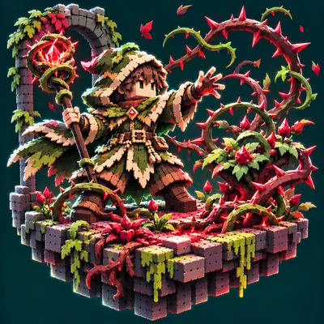
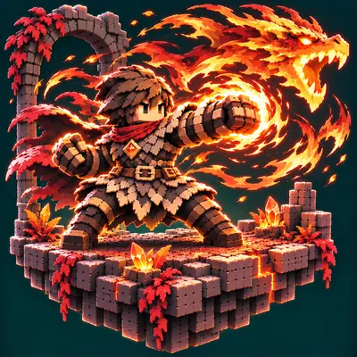
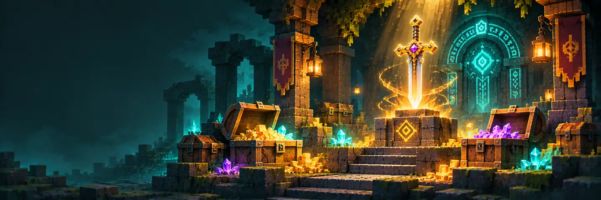

Craft to Exile 2 · 2.1.4 · 我哋嘅 RPG Server
畀第一次玩 CtE2 嘅朋友：怪物等級點計、職業點揀、幾時昇華、點去其他世界、新手城同附近副本喺邊，仲有新手流派、寶珠寶石符文同獨特裝備查詢，同埋錢幣點賺點使。遊戲入面係簡體中文，所以下面遊戲內嘅名都照用簡體。
00 · 準備
Server 有白名單。第一次入之前，將你嘅 Minecraft 名 send 畀 R1suuu 加你入去。
00 · 中文
CtE2-2.1.4-zh_cn-friends-v2.zip：任務、指南書同大部分 mod 嘅中文。CtE2-skills-zh_cn.zip：職業技能、天賦樹、屬性嘅中文。冇咗佢，技能同天賦會係英文。friends-v2.zip 入面嘅 resourcepacks、kubejs、patchouli_books、config 四個 folder 拖入遊戲 folder，問到就揀「取代」。淨係複製 resourcepacks 唔夠，任務同技能會變返英文。CtE2-skills-zh_cn.zip 原封不動（唔使解壓）放入遊戲 folder 入面嘅 resourcepacks。中文包只啱 2.1.4。翻譯來自 BBSMC 漢化組同 CFPA 社區（非商業用途），技能同天賦部分係我哋自己補翻。
01 · 開波
呢個 server 冇原版自然回血。Mine and Slash 自己嘅「生命值再生」要有飽食度先會回，而且好慢、仲會食飽食度；血少咗要靠食物、藥水或者技能補，出門記得帶夠食物。
02 · 怪物等級
好多人以為怪物越遠出生點越強，喺呢個 pack 唔係。怪物等級 = 最近嗰個玩家嘅等級（隊伍就取最低嗰個），上下差 1 級，然後再限喺每個世界嘅範圍入面。
03 · 職業
職業喺「主枢纽 › 职业」入面揀。技能點可以分落最多 2 個職業（寫死喺 mod 入面，改唔到）。被動技能都計，落咗 1 點就當你揀咗嗰個職業。淨係專心玩 1 個職業有「单人职业加成」：傷害 +10%、減傷 +5%。
| 遊戲內名 | 大概玩法 | 技能數 |
|---|---|---|
| 战士Fighter | 近戰斧劍、架式、震地、旋風斬 | 15 |
| 斗士Brawler | 空手武術連段，靠「狂怒」疊連擊 | 18 |
| 十字军Crusader | 聖騎士：盾、錘、光環、格擋 | 19 |
| 冰枪手Cryolancer | 冰槍近戰加戰旗，靠冰霜印記 | 16 |
| 游侠Rogue | 匕首、毒、暴擊、閃避 | 16 |
| 猎手Hunter | 弓箭、陷阱、召喚靈狼 | 18 |
| 巫师Elementalist | 火冰法術、隕石、暴風雪、召喚魔像 | 21 |
| 时空法师Chronomancer | 時間、雷、冰嘅控制型法師 | 12 |
| 萨满Shaman | 圖騰、雷電、自然 | 21 |
| 邪术士Warlock | 詛咒、毒、召喚殭屍骷髏 | 17 |
| 血魔导师Sanguimancer | 用血換力量嘅詛咒法師 | 13 |
| 吟游诗人Minstrel | 歌曲加 buff、補血，支援位 | 14 |
想要現成配搭，直接睇 06 · 新手流派：28 個雙職業組合、分 10 類，連技能、天賦、屬性點同裝備。
04 · 昇華
昇華（遊戲內叫「升华」，任務書叫「宗师」）係後期第二棵樹。有 16 個昇華職業，一次只可以揀 1 個，要轉就要先退晒點。
| 點樣攞昇華點 | 喺邊 | 點數 |
|---|---|---|
| 完成 Act II「Defenders of the Nether II」：喺下界嘅 Keeping Castle 用下界之星召喚 Nether Keeper，打低佢拎到 Ancient Fire。完成後開放「宗师」任務章節 | 下界 | 3 |
| Act III「Slippery Swimmer」（打一條大鰻魚） | 深园 | 2 |
| Act V「They Knew You Were Coming」（打兩個 Farseer） | 终界 / 深淵 | 2 |
| 尾聲 4 個 Boss 任務（The Frozen Tower 等）全部完成 | 尾聲 | 2 |
| 總共（實際上限） | 9 | |
16 個昇華：奥术师、升华使徒、暗影大师、战斗法师、冠军、酋长、元素使、角斗士、守护者、猎手（Predator）、演者、主宰者、死亡巫妖、死灵法师、侠客、欺诈师。任務送嘅額外點數同重置點喺你所有角色之間共用（每個帳號最多 7 個角色）。
05 · 點數
| 點數 | 點樣嚟 | 上限 |
|---|---|---|
| 天賦點（天賦樹，類似 PoE 大樹） | 開頭 1 點，每級 +1；任務最多再送 25 | 200 |
| 技能點 | 每級 +1；任務再送 10 | 150 |
| 屬性點（力量 / 敏捷 / 智力…） | 每級 +1 | 300 |
| 被動點（職業被動） | 每 2 級 +1；任務再送少少 | 75 |
| 昇華點 | 只靠任務（見上面） | 9 |
| 地圖冊點（Atlas） | 只靠清完 Dungeon Realm 地圖（實際最多約 104） | 200 |
天賦樹個搜尋框會將你打嘅字同天賦名、屬性名逐字對比。遊戲入面係簡體，所以打繁體（例如「傷害」）會搵唔到。打字嗰陣，唔啱嘅天賦會變暗。撳下面一格就會複製，入遊戲喺天賦樹用 Ctrl＋V 貼上。
技能可以裝輔助寶石（辅助宝石）。格數 = 技能等級 ÷ 4（最多 5 格），再受你自己等級限制：1 級最多 1 格 · 10 級 2 格 · 20 級 3 格 · 30 級 4 格 · 40 級 5 格。技能每升 1 級，你本身要高 1 級，例如 1 級技能要你 20 級先升到 20。
06 · 流派
唔知點揀職業？下面 28 個流派，每個都係 2 個職業夾埋，分 10 類，由 1 級寫到 50 級開 Dungeon Realm。卡片預設收埋：先睇六項評分同難度，撳開先睇技能、天賦、裝備同練級路線。
每項 1 至 5 分，係按技能數據同玩法估出嚟，用嚟比較流派嘅「形狀」，唔係實測強度排名。撳開卡片會見到每項分數嘅原因。
召喚物幫你頂怪打怪，自己企後面補技能。
召喚（召喚物頂怪，自己後排放詛咒）
3 隻殭屍＋2 隻幽靈狼長駐身邊（每隻維持 10 分鐘），再不停召 3 隻骷髏弓手；你企後面放「痛苦诅咒」，召喚物幫你頂晒啲怪。唔使瞄準、唔使近身，最啱怕死或者想睇住隊伍打嘅新手。
Lv 係職業入面解鎖嗰行嘅等級；輔助寶石後面嘅 Lv 係你自己要夠嘅等級。
| 解鎖 | 技能 | 職業 · 武器 | 點用 |
|---|---|---|---|
| Lv 1 | 召唤僵尸Summon Zombie | 邪术士任何武器 · 食魔力值 · 技能最高 20 級 | 1 級主力：每放一次召 1 隻殭屍，維持 10 分鐘，亡靈召喚物預設最多 3 隻。
|
| Lv 5 | 召唤幽灵狼Summon Spirit Wolf | 猎手任何武器 · 食魔力值 · 技能最高 20 級 | 5 級：召 1 隻幽靈狼，維持 10 分鐘，野獸召喚物預設最多 2 隻，跑得快打得痛。
|
| Lv 5 | 痛苦诅咒Curse of Agony | 邪术士任何武器 · 食魔力值 · 技能最高 12 級 | 5 級：範圍詛咒敵人兼造成混沌傷害，打大隻怪前放。 |
| Lv 10 | 唤回召唤物Return Summons | 邪术士任何武器 · 食魔力值 · 技能最高 20 級 | 10 級：將召喚物拉返身邊兼幫佢哋回血，佢哋走散或者殘血時用。 |
| Lv 15 | 召唤骷髅Summon Skeletons | 邪术士任何武器 · 食魔力值 · 技能最高 20 級 | 15 級：一次召 3 隻遠程骷髏，維持 20 秒、冷卻 20 秒，唔計入召喚上限，有得放就放。 |
| Lv 25 | 召唤幽火Summon Wisp | 邪术士法系武器 · 食魔力值 · 技能最高 20 級 | 25 級：召一個會追住最近敵人慢慢蝕血嘅幽火，唔計入召喚上限，傷害跟魔法護盾成長。 |
職業被動點：先點邪术士 10 級「召唤伤害 +2」同「召唤物时长 +4」，再點猎手 20 級「野兽标签法术伤害 +5」（幫狼）；之後邪术士 5 級「魔法护盾 +4%」加自己血量。
起點揀「法师」(The Staff，開局送智力 9)。向正上行拎「核心召唤物伤害」(大約 7 點，沿路會經過「核心魔法伤害」)，再向左拎「核心召唤物生命值」。之後一路向右上去遊戲變革天賦「召唤师」(+3 亡靈召喚上限，大約 19 點)，最後補「核心魔力值」「核心生命值」。
| 累計 | 天賦 | 作用 |
|---|---|---|
| 約 7 點 | 核心召唤物伤害核心天賦 | 召喚傷害 +10。 |
| 約 12 點 | 核心召唤物生命值核心天賦 | 召喚物生命 +15，佢哋死得少你就安全。 |
| 約 19 點 | 召唤师遊戲變革者 | 遊戲變革天賦：亡靈召喚上限 +3（即係 6 隻殭屍），代價係「所有伤害」再少 25%。會唔會影響召喚物本身傷害未確認，入遊戲試下再決定。 |
| 約 21 點 | 核心魔力值核心天賦 | 魔力值 +15%，召喚每隻都食魔。 |
| 約 24 點 | 核心生命值核心天賦 | 生命值 +8%，自己都要有血。 |
撳一格複製，喺天賦樹搜尋框用 Ctrl＋V 貼上。搜尋只認簡體（見 05 · 天賦樹搜尋）。「約幾點」係按天賦樹資料推算，實際可能差一兩點。
屬性點大約 智力 75% : 力量 25%。原因：长杖同布甲每件要 0.8 × 裝備等級咁多智力。智力每點加 0.2 召喚傷害同魔法護盾；力量每點加 1 召喚物生命同 2 自己生命，令召喚物同你都耐打啲。灵巧唔使加。
长杖＋法典＋布甲。最重要係「最大亡灵召唤数量」「召唤伤害」「召唤物生命值」。
| 最低掉落 | 獨特裝備（撳名睇全部屬性） | 點解好 |
|---|---|---|
| Lv 1 | 乌勒尔之骨Bones of Ullr · 布靴 | 1 級就掉得：擊殺有機會免冷卻放「召唤骷髅」、召喚傷害 +35、移速。同「精灵之息」係同一套裝（唤墓者），著齊 2 件再 +1 最大亡靈召喚數量。 |
| Lv 1 | 灵性颅骨Skull of Spirits · 项链 | 1 級就掉得：被打中有機會召幽火、召喚傷害 +20–25。 |
| Lv 10 | 精灵之息Sidhebreath · 项链 | 10 級起：召喚物生命 +40–50、召喚物時長 +40–60。同「乌勒尔之骨」夾埋係套裝 2 件，再 +1 最大亡靈召喚數量。 |
| Lv 40 | 骨影Boneshade · 长杖 | 40 級起：+1 最大亡靈召喚數量、召喚傷害同生命 +25–33。 |
| Lv 40 | 幽魂领主Wraithlord · 布帽 | 40 級起：+2 最大亡靈召喚數量、+1 傀儡上限、召喚物生命。 |
揀「召唤伤害」「召唤物生命值」「召唤物时长」「智力」「魔力值」「魔法护盾」「元素抗性」。
召喚（狼＋元素傀儡頂怪，自己後排掟火球）
5 級起召 2 隻「召唤幽灵狼」幫你頂怪（每隻維持 10 分鐘），25 級再加火焰同冰霜傀儡，佢哋會自己放「火焰新星」「冰霜新星」。你企後面掟「火球」，怪圍埋就放「冰霜新星」，順手幫成隊（包括召喚物）回血。狼同傀儡分開計上限，唔會互相擠走；傀儡上限靠天賦「傀儡师」、昇華「活灵大军」同「幽魂领主」慢慢加。
Lv 係職業入面解鎖嗰行嘅等級；輔助寶石後面嘅 Lv 係你自己要夠嘅等級。
| 解鎖 | 技能 | 職業 · 武器 | 點用 |
|---|---|---|---|
| Lv 5 | 召唤幽灵狼Summon Spirit Wolf | 猎手任何武器 · 食魔力值 · 技能最高 20 級 | 5 級主力：每放一次召 1 隻幽靈狼，維持 10 分鐘，野獸召喚物預設最多 2 隻（放 2 次就召滿）。跑得快、識主動咬，前期全靠佢哋頂怪。
|
| Lv 1 | 火球Fire Ball | 巫师法系武器 · 食魔力值 · 技能最高 20 級 | 1 級主力（狼未出之前靠佢）：射火球，每次放疊 1 層「过热」；疊滿 4 層火球變大、爆炸範圍大一倍。召喚物出齊之後用嚟補刀同幫手引怪。
|
| Lv 5 | 冰霜新星Frost Nova | 巫师法系武器 · 食魔力值 · 技能最高 20 級 | 5 級：身邊 4 格爆冰，兼令附近友軍每秒回血、持續 5 秒（遊戲說明：友軍包括召喚物）。放嗰陣會食走 1 層「过热」，有食到就回少少魔：掟幾個火球之後放一下最抵。
|
| Lv 15 | 猎人药剂Hunter's Potion | 猎手任何武器 · 唔食魔力／能量 · 技能最高 4 級 | 15 級：即刻按你最大生命回血（技能等級越高回越多，數據 35–50%），冷卻 12 秒。最多升 4 級，危險先飲。 |
| Lv 25 | 召唤火焰傀儡Summon Fire Golem | 巫师任何武器 · 食魔力值 · 技能最高 20 級 | 25 級：召 1 隻火焰傀儡，維持 10 分鐘，會放「火焰新星」燒身邊啲怪。傀儡預設上限得 1 隻，上限未加之前用呢隻清怪。
|
| Lv 25 | 召唤冰霜傀儡Summon Frost Golem | 巫师任何武器 · 食魔力值 · 技能最高 20 級 | 25 級：召 1 隻冰霜傀儡，維持 10 分鐘，會放「冰霜新星」爆冰兼幫身邊友軍回血。 同「召唤火焰傀儡」共用傀儡上限：要拎咗「傀儡师」（2 隻）先可以一火一冰。
|
職業被動點：先點巫师 5 級「魔力值再生 +6%」（補召同新星好食魔），再點猎手 20 級「野兽标签法术伤害 +5」（幫狼）；之後巫师 20 級「元素抗性 +2」，30 級點巫师「傀儡法术几率 +3」，傀儡放新星會密啲。
起點揀「法师」(The Staff，開局送智力 9 / 力量 5 / 灵巧 5)。向左上行拎「核心魔法伤害」(大約 5 點，火球同冰霜新星都受惠)，再向上拎「核心召唤物伤害」(大約 7 點)，跟住向左行去「核心召唤物生命值」(大約 12 點)。之後向左上拎遊戲變革天賦「傀儡师」(大約 16 點，+1 傀儡上限，25 級學傀儡之前拎定)，最後喺左上方補「核心生命值」同「核心魔力值」(大約 22 點)。
| 累計 | 天賦 | 作用 |
|---|---|---|
| 約 5 點 | 核心魔法伤害核心天賦 | 魔法傷害 +10：火球、冰霜新星都計。 |
| 約 7 點 | 核心召唤物伤害核心天賦 | 召喚傷害 +10。 |
| 約 12 點 | 核心召唤物生命值核心天賦 | 召喚物生命 +15，狼同傀儡頂得耐啲。 |
| 約 16 點 | 傀儡师遊戲變革者 | 遊戲變革天賦：最大傀儡召喚數量 +1，代價係亡靈上限 -3；呢個 build 冇亡靈召喚，等於冇代價。 |
| 約 20 點 | 核心生命值核心天賦 | 生命值 +8%，布甲角色自己都要有啲血。 |
| 約 22 點 | 核心魔力值核心天賦 | 魔力值 +15%，補召同放新星都食魔。 |
撳一格複製，喺天賦樹搜尋框用 Ctrl＋V 貼上。搜尋只認簡體（見 05 · 天賦樹搜尋）。「約幾點」係按天賦樹資料推算，實際可能差一兩點。
屬性點大約 智力 75% : 力量 25%。原因：长杖、法典同布甲每件要 0.8 × 裝備等級咁多智力（50 級布甲要 40 智力；起點 9 + 每級 0.75，50 級大約 46，夠晒）。智力每點加 0.2 召喚傷害、0.2 魔法傷害同 0.25% 魔法護盾；力量每點加 1 召喚物生命同 2 自己生命，令狼、傀儡同你都耐打啲。灵巧唔使加。
长杖＋法典＋全套布甲。最重要係「最大傀儡召唤数量」「召唤伤害」「召唤物生命值」，其次「傀儡法术几率」同「魔法护盾」。
| 最低掉落 | 獨特裝備（撳名睇全部屬性） | 點解好 |
|---|---|---|
| Lv 1 | 乌勒尔之骨Bones of Ullr · 布靴 | 1 級就掉得（布靴）：召喚傷害 +35、移速 +15，練級靴首選。佢屬於套裝「唤墓者」（另外兩件係「精灵之息」同「无眼之墙」）：2 件效果係 +1 亡靈上限，呢個 build 用唔著；3 件先有召喚傷害總增 10%，但「无眼之墙」會同「元素魔灵」爭副手。 |
| Lv 1 | 元素魔灵Atronach · 法典 | 1 級就掉得（法典）：傀儡法術幾率 +25–35、雷電傷害、雷電抗性，仲有「召唤雷电傀儡等级 +20」：數據用嘅係同職業格學技能一樣嘅 learn 屬性，即係著住應該識放「召唤雷电傀儡」，25 級之前都有傀儡用（未實測）。雷電傀儡同火／冰傀儡共用傀儡上限。 |
| Lv 1 | 灵性颅骨Skull of Spirits · 项链 | 1 級就掉得（项链）：召喚傷害 +20–25、魔力再生，被打中 20% 機會召一隻幽火幫手。 |
| Lv 10 | 精灵之息Sidhebreath · 项链 | 10 級起（项链）：召喚物生命 +40–50、召喚物時長 +40–60，狼同傀儡更耐。同「灵性颅骨」爭同一個项链位，10 級後二揀一。 |
| Lv 40 | 幽魂领主Wraithlord · 布帽 | 40 級起（布帽）：+1 最大傀儡召喚數量、召喚物生命 +10–20、魔法護盾再生；+2 亡靈上限呢個 build 用唔著。 |
| Lv 60 | 权责重担Weight of Leadership · 布裤 | 60 級起（布裤），而且要 20 等階或以上嘅地圖先會掉：召喚傷害 +30–40、對眩暈敵人傷害總增 10–15%，代價生命總減 5%。 |
揀「召唤伤害」「召唤物生命值」「召唤物时长」「智力」「魔力值」「魔法护盾」「元素抗性」。
下面幾點係由數據推出嚟，未入遊戲實測，見到唔啱請話我知。
召喚＋引爆（召喚物衝入怪堆再一齊炸）
前期召 3 隻殭屍頂怪、自己掟「酸液爆破」；25 級學「引爆随从」之後，等召喚物衝入怪堆就一下引爆晒佢哋：每隻都係一個火焰爆炸兼擊退。爆炸傷害跟武器傷害同召喚物生命值成長，所以呢個 build 拼命堆「召唤物生命值」。骷髏每 20 秒召 3 隻、唔計上限，召完即炸最抵；身上有 5 層靈魂（「酸液爆破」「痛苦诅咒」每放一次疊 1 層）仲會每隻多炸一下混沌傷害。
Lv 係職業入面解鎖嗰行嘅等級；輔助寶石後面嘅 Lv 係你自己要夠嘅等級。
| 解鎖 | 技能 | 職業 · 武器 | 點用 |
|---|---|---|---|
| Lv 25 | 引爆随从Explode Minions | 邪术士任何武器 · 食魔力值 · 技能最高 20 級 | 25 級主力：引爆你身邊 10 格內所有召喚物，每隻喺原地爆一個火焰範圍（數據半徑 2.25 格）兼擊退；傷害 = 武器傷害 0.7–1.0 倍＋嗰隻召喚物最大生命 14–20%（生命部分最多係武器部分 10 倍），所以召喚物越肉炸得越痛；炸完召喚物就冇咗。身上有 5 層靈魂時每隻再多一下混沌傷害。施法 0.5 秒，食 8–11 魔。 每級都升嘅話 28 級開第 1 個輔助格、32 級第 2 個、36 級第 3 個、40 級第 4 個。
|
| Lv 1 | 召唤僵尸Summon Zombie | 邪术士任何武器 · 食魔力值 · 技能最高 20 級 | 1 級：每放一次召 1 隻殭屍（維持 10 分鐘，亡靈上限 3 隻）。平時佢哋頂怪，頂唔住或者一堆怪圍住佢哋先炸；炸完要逐隻重召，每隻 13–15 魔。
|
| Lv 1 | 酸液爆破Acid Blast | 邪术士法系武器 · 食魔力值 · 技能最高 20 級 | 1 級補刀技：射出會自動追蹤嘅酸液球，造成混沌傷害；每放一次自己疊 1 層靈魂（最多 5 層，每層維持 8 秒）。引爆之前連放 5 下，爆炸就多一下混沌傷害。
|
| Lv 5 | 痛苦诅咒Curse of Agony | 邪术士任何武器 · 食魔力值 · 技能最高 12 級 | 5 級：4 格範圍詛咒，敵人護甲同精準度大減兼受混沌傷害；每放一次都疊 1 層靈魂。冷卻 3 秒，引爆前放。 |
| Lv 5 | 冰霜新星Frost Nova | 巫师法系武器 · 食魔力值 · 技能最高 20 級 | 5 級：身邊 4 格爆冰，兼令附近友軍（遊戲說明：包括召喚物）每秒回血、持續 5 秒。自己同殭屍頂唔順時放。 |
| Lv 15 | 召唤骷髅Summon Skeletons | 邪术士任何武器 · 食魔力值 · 技能最高 20 級 | 15 級：一次召 3 隻遠程骷髏，維持 20 秒、冷卻 20 秒，唔計召喚上限；佢哋就係你嘅炸彈，召完等佢哋行埋怪堆就引爆。
|
職業被動點：先點邪术士 10 級「召唤伤害 +2」同「召唤物时长 +4」（殭屍頂怪），再點巫师 10 級「灼烧几率 +4」同巫师 5 級「技能伤害 +2」；25 級點邪术士「对受诅咒目标的伤害 +2」（先放「痛苦诅咒」再炸）。
起點揀「守护者」(The Hammer，開局送智力 7 / 力量 7 / 灵巧 5，啱晒力智各半)。向上行拎「核心召唤物生命值」(大約 7 點，爆炸跟召喚物生命成長，第一優先)，再向右上拎「核心魔法伤害」(大約 11 點) 同「核心召唤物伤害」(大約 13 點)。之後轉去起點左上拎「核心所有伤害」(大約 14 點) 同「核心生命值」(大約 16 點)，最後再向左上去「核心火焰伤害」(大約 21 點)。
| 累計 | 天賦 | 作用 |
|---|---|---|
| 約 7 點 | 核心召唤物生命值核心天賦 | 召喚物生命 +15 → 每隻爆炸更痛，殭屍都頂得耐啲。 |
| 約 11 點 | 核心魔法伤害核心天賦 | 魔法傷害 +10：「引爆随从」係魔法技能，「酸液爆破」都計。 |
| 約 13 點 | 核心召唤物伤害核心天賦 | 召喚傷害 +10：加殭屍同骷髏自己打怪。數據規定「召唤伤害」要技能有召喚標籤，「引爆随从」冇，所以唔加爆炸。 |
| 約 14 點 | 核心所有伤害核心天賦 | 所有傷害 +8，乜都加。 |
| 約 16 點 | 核心生命值核心天賦 | 自己生命 +8%。 |
| 約 21 點 | 核心火焰伤害核心天賦 | 火焰傷害 +10，爆炸本身係火焰傷害。 |
撳一格複製，喺天賦樹搜尋框用 Ctrl＋V 貼上。搜尋只認簡體（見 05 · 天賦樹搜尋）。「約幾點」係按天賦樹資料推算，實際可能差一兩點。
屬性點大約 力量 50% : 智力 50%。原因：锤同鎖甲每件要力量、智力各 0.5 × 裝備等級（50 級要各 25；起點 7 + 每級 0.5，50 級大約 32，夠晒）。力量每點加 1 召喚物生命（直接令爆炸更痛）同 2 自己生命；智力每點加 0.2 魔法傷害、0.2 召喚傷害同 1% 魔力再生。灵巧唔使加。
锤＋全套鎖甲。最重要係「召唤物生命值」，其次「最大亡灵召唤数量」「火焰伤害」「魔法伤害」，同埋武器傷害高嘅锤。
| 最低掉落 | 獨特裝備（撳名睇全部屬性） | 點解好 |
|---|---|---|
| Lv 1 | 夏伯尔石冢Chaber Cairn · 锤 | 1 級就掉得（锤）：召喚物生命 +15–20、自己生命同魔力提高 15–20%、物理標籤法術傷害 +15，練級一路用。 |
| Lv 1 | 荣耀之家Honourhome · 锁甲头盔 | 1 級就掉得（锁甲头盔）：+1 所有法術等級、魔力消耗 -10–20（重召慳魔）、魔法掉落 +10–20。 |
| Lv 1 | 乌勒尔之骨Bones of Ullr · 布靴 | 1 級就掉得（布靴）：擊殺 5% 機會免冷卻放「召唤骷髅」（即係多 3 個炸彈）、召喚傷害 +35、移速 +15。布靴要 0.8 × 裝備等級咁多智力（睇件裝備嘅等級，唔係睇你自己）：呢個加點只著得大約 23 級或以下掉嘅「乌勒尔之骨」，舊嗰對可以一路著，只係防禦值低；嫌防禦唔夠先換鎖甲靴。 |
| Lv 10 | 精灵之息Sidhebreath · 项链 | 10 級起（项链）：召喚物生命 +40–50、召喚物時長 +40–60。同「乌勒尔之骨」係同一套裝（唤墓者），著齊 2 件 +1 最大亡靈召喚數量（即係 4 隻殭屍）。 |
| Lv 50 | 腐烂军团Rotting Legion · 锁甲裤子 | 50 級起（锁甲裤子）：亡靈召喚傷害總增 20–25%（加殭屍骷髏自己打怪）、魔法護盾 +8–10、元素抗性。 |
揀「召唤物生命值」「生命值」「火焰伤害」「魔法伤害」「力量」「智力」「元素抗性」。
下面幾點係由數據推出嚟，未入遊戲實測，見到唔啱請話我知。
拎弓／弩遠距離射，靠走位同爆發。
遠程物理輸出（弓箭）
企後排按住「连绵箭雨」掃射，「蓄力射击」穿透成排敵人，「爆炸箭矢」轟一堆；危險時游侠嘅「烟雾弹」隱身甩怪。全部靠灵巧，加點同揀裝都好簡單。
Lv 係職業入面解鎖嗰行嘅等級；輔助寶石後面嘅 Lv 係你自己要夠嘅等級。
| 解鎖 | 技能 | 職業 · 武器 | 點用 |
|---|---|---|---|
| Lv 1 | 连绵箭雨Arrow Barrage | 猎手弓／弩 · 食能量值 · 技能最高 20 級 | 1 級主力：按住引導，連續快射。前 15 級靠佢打晒。
|
| Lv 1 | 制作箭矢Craft Arrows | 猎手弓／弩 · 唔食魔力／能量 · 技能最高 1 級 | 1 級，只要 1 點：每 30 秒變 16 支箭俾你。普通拉弓要箭，而呢個 server 怪掉嘅箭 99% 變铜币，自己整最方便。 |
| Lv 5 | 蓄力射击Charged Bolt | 猎手弓／弩 · 食能量值 · 技能最高 20 級 | 5 級：射一支會穿透嘅雷電箭，沿路範圍傷害兼減速；技能等級越高射越多支。
|
| Lv 5 | 磨砺Sharpen | 游侠任何武器 · 食魔力值 · 技能最高 12 級 | 5 級增益：自己同身邊隊友普攻傷害同攻速提升，打大怪前開。 |
| Lv 10 | 烟雾弹Smoke Bomb | 游侠任何武器 · 唔食魔力／能量 · 技能最高 12 級 | 10 級逃命技：放煙霧失去仇恨、短暫隱身，暴擊、閃避、移速大升。 |
| Lv 15 | 爆炸箭矢Explosive Arrow | 猎手弓／弩 · 食能量值 · 技能最高 20 級 | 15 級：箭落地爆炸，範圍火焰傷害＋暈＋擊退，清一堆怪用。 |
職業被動點：先點猎手 5 級「弹射物伤害 +5」同「能量值再生 +6%」，再點游侠 5 級「攻击速度 +7.5」、游侠 10 級「闪避值 +4%」、游侠 15 級「暴击几率 +12%」；25 級點猎手「暴击伤害 +4」。
起點揀「射手」(The Bow，開局送灵巧 9 / 力量 5 / 智力 5)。向右行就係弓手區：先拎「核心弹射物伤害」同「核心远程伤害」(6 點內)，再向右拎「核心闪避值」、右下「核心生命值」。大約 18 點去右上拎遊戲變革天賦「凤舞者」(50% 灵巧變物理傷害)，之後補「核心暴击几率」。
| 累計 | 天賦 | 作用 |
|---|---|---|
| 約 5 點 | 核心弹射物伤害核心天賦 | 投射物傷害 +8，弓箭技能全部受惠。 |
| 約 6 點 | 核心远程伤害核心天賦 | 遠程傷害 +10。 |
| 約 11 點 | 核心闪避值核心天賦 | 閃避值 +15%，皮甲角色嘅防禦。 |
| 約 14 點 | 核心生命值核心天賦 | 生命值 +6%、閃避值 +12%。 |
| 約 18 點 | 凤舞者遊戲變革者 | 遊戲變革天賦：50% 灵巧變物理傷害、投射物速度 +25，代價範圍 -30%。全灵巧弓手最啱。 |
| 約 24 點 | 核心暴击几率核心天賦 | 暴擊機率 +40%（百分比加成）。 |
撳一格複製，喺天賦樹搜尋框用 Ctrl＋V 貼上。搜尋只認簡體（見 05 · 天賦樹搜尋）。「約幾點」係按天賦樹資料推算，實際可能差一兩點。
屬性點大約 灵巧 80% : 力量 20%。原因：弓、皮甲、图腾每件要 0.8 × 裝備等級咁多灵巧（50 級皮甲要 40 灵巧）。灵巧每點加 0.25% 閃避、1.5% 能量值再生、投射物傷害、暴擊同攻速，配「凤舞者」同「强弓辅助宝石」仲直接變傷害；少少力量加生命。智力唔使加。
弓＋全套皮甲（副手图腾可選）。最重要係攻速、投射物傷害、暴擊同 +遠程技能等級。
| 最低掉落 | 獨特裝備（撳名睇全部屬性） | 點解好 |
|---|---|---|
| Lv 1 | 羽箭雨Quill Rain · 弓 | 1 級就掉得：攻速 +50、投射物速度，練級神弓。 |
| Lv 1 | 窃贼装束Thief's Garb · 皮甲 | 1 級就掉得：暴擊、閃避，仲將部分閃避變能量值。 |
| Lv 1 | 隐身盔Tarnhelm · 皮盔 | 1 級就掉得：+1 所有技能等級，部分物理傷害轉元素承受。 |
| Lv 30 | 银枝Silverbranch · 弓 | 30 級起：+1 至 +3.9 所有遠程技能等級、攻速、投射物傷害。 |
| Lv 40 | 萨拉森的机缘Saracen's Chance · 项链 | 40 級起：+2 所有遠程技能等級、元素抗性、所有屬性 +5。 |
| Lv 40 | 水上行Waterwalk · 皮靴 | 40 級起：生命、能量、能量再生、移速。 |
揀「弹射物伤害」「远程伤害」「攻击速度」「暴击几率」「暴击伤害」「灵巧」「闪避值」「能量值」「能量值再生」「生命值」「元素抗性」。
遠程火焰弓箭＋自己開讚歌加成
前期按住「连绵箭雨」掃射，15 級轉「爆炸箭矢」：一箭爆一片火焰、暈怪兼擊退；25 級再加「流星箭」打精英。吟遊詩人嘅讚歌（前期「活力赞歌」回能量、20 級「勇气赞歌」加傷害同暴擊）同「急板」幫自己同隊友加速，「治愈咏唱」自己補血。一個人玩都攻守齊。
Lv 係職業入面解鎖嗰行嘅等級；輔助寶石後面嘅 Lv 係你自己要夠嘅等級。
| 解鎖 | 技能 | 職業 · 武器 | 點用 |
|---|---|---|---|
| Lv 15 | 爆炸箭矢Explosive Arrow | 猎手弓／弩 · 食能量值 · 技能最高 20 級 | 15 級主力：射一支箭，落地爆炸（半徑 3 格）造成火焰傷害，命中暈怪 1 秒兼擊退。每箭食 8–11 能量，仲食少少魔。 每級都升嘅話 18 級開第 1 個輔助格、22 級第 2 個、26 級第 3 個、30 級第 4 個、40 級第 5 個。
|
| Lv 1 | 连绵箭雨Arrow Barrage | 猎手弓／弩 · 食能量值 · 技能最高 20 級 | 1 級主力（1–14 級靠佢）：按住引導，連續快射物理箭。15 級之後留嚟打單隻或者清殘血。
|
| Lv 1 | 活力赞歌Hymn of Vigor | 吟游诗人任何武器 · 食魔力值 · 技能最高 12 級 | 1 級讚歌（1–19 級用）：自己同身邊 8 格隊友嘅資源回復同偷取 +50–100，解決弓手冇能量。持續 12 秒、冷卻 12 秒，記得補。讚歌一次一首，20 級有「勇气赞歌」就換走。 |
| Lv 5 | 治愈咏唱Healing Aria | 吟游诗人任何武器 · 食魔力值 · 技能最高 20 級 | 5 級自補：施法 3 秒，期間彈 3 下，每下幫身邊 2 格內嘅友軍（包括自己）回血；放嗰陣行得慢，揀安全位先放。
|
| Lv 15 | 急板Prestissimo | 吟游诗人任何武器 · 唔食魔力／能量 · 技能最高 12 級 | 15 級：身邊 8 格友軍攻速同施法速度 +18–36、移速 +10–20，持續 10 分鐘（冷卻 12 秒）。唔係讚歌，可以同讚歌一齊開；出門開一次就算。 |
| Lv 20 | 勇气赞歌Hymn of Valor | 吟游诗人任何武器 · 食魔力值 · 技能最高 12 級 | 20 級讚歌：身邊 8 格友軍所有傷害 +8–16、暴擊率提高 10–20%、暴擊傷害 +20–40，持續 12 秒（冷卻 12 秒）；20 級之後一路開呢首。 |
| Lv 25 | 流星箭Meteor Arrow | 猎手弓／弩 · 食能量值 · 技能最高 20 級 | 25 級：射一支物理箭，再召一粒流星跌落地造成火焰範圍傷害（半徑 2.5 格），箭同流星都可以暈怪。打精英同成堆怪先放。
|
職業被動點：先點猎手 5 級「弹射物伤害 +5」同「能量值再生 +6%」，再點吟游诗人 5 級「赞歌效果时长 +4」、吟游诗人 15 級「区域效果 +2」（爆炸大啲）；之後猎手 25 級「暴击伤害 +4」、吟游诗人 30 級「技能速度 +4.5」。
起點揀「射手」(The Bow，開局送灵巧 9 / 力量 5 / 智力 5)。向右行拎「核心弹射物伤害」(大約 5 點)，隔籬就係「核心远程伤害」(大約 6 點)。之後轉右下，經「核心能量值再生」去「核心武器元素伤害」(大約 12 點，爆炸箭同流星係火焰攻擊，都計)，再補「核心生命值」(大約 14 點)、「核心闪避值」(大約 16 點) 同另一粒生命加閃避嘅「核心生命值」(大約 18 點)。最後先向右上長途去「核心火焰伤害」(大約 31 點)。
| 累計 | 天賦 | 作用 |
|---|---|---|
| 約 5 點 | 核心弹射物伤害核心天賦 | 彈射物傷害 +8，所有箭都計。 |
| 約 6 點 | 核心远程伤害核心天賦 | 遠程傷害 +10。 |
| 約 12 點 | 核心武器元素伤害核心天賦 | 元素攻擊傷害 +10，火焰箭受惠；沿路仲有「核心能量值再生」能量值再生 +2。 |
| 約 14 點 | 核心生命值核心天賦 | 生命值 +8%。 |
| 約 16 點 | 核心闪避值核心天賦 | 閃避值 +15%，皮甲靠閃避。 |
| 約 18 點 | 核心生命值核心天賦 | 生命值 +6%、閃避值 +12%。 |
| 約 31 點 | 核心火焰伤害核心天賦 | 火焰傷害 +6（另外冰霜 +6 用唔著）。 |
撳一格複製，喺天賦樹搜尋框用 Ctrl＋V 貼上。搜尋只認簡體（見 05 · 天賦樹搜尋）。「約幾點」係按天賦樹資料推算，實際可能差一兩點。
屬性點大約 灵巧 75% : 智力 25%。原因：弓、图腾同皮甲每件要 0.8 × 裝備等級咁多灵巧（50 級要 40；起點 9 + 每級 0.75，50 級大約 46）。灵巧每點加 0.2 彈射物傷害、1% 暴擊、0.25% 閃避同 1.5% 能量再生；智力每點加 0.3 治療強度同 1% 魔力再生，令「治愈咏唱」補多啲、讚歌唔怕冇魔。力量唔使加。
弓＋图腾＋全套皮甲。最重要係「火焰伤害」「弹射物伤害」「攻击速度」「能量值再生」，同 +遠程／火焰技能等級。
| 最低掉落 | 獨特裝備（撳名睇全部屬性） | 點解好 |
|---|---|---|
| Lv 1 | 羽箭雨Quill Rain · 弓 | 1 級就掉得（弓）：攻速 +50、彈射物速度 +50–100、擊殺回能量，練級神弓。 |
| Lv 1 | 崖崩Cragfall · 图腾 | 1 級就掉得（图腾）：彈射物傷害 +30–35、混沌抗性，代價彈射物速度 -25。 |
| Lv 10 | 诺科赞圣物Nokozan Relic · 项链 | 10 級起（项链）：+1 所有火焰法術等級（包唔包弓箭火焰技未確認）、火焰傷害 +6–10、火焰抗性同最大火焰抗性。 |
| Lv 20 | 灾难之咏Aria of Disaster · 戒指 | 20 級起（戒指）：讚歌效果強度 +25–30（「勇气赞歌」更強）、區域效果同區域傷害各 +10–15、魔力再生。 |
| Lv 40 | 灼焰步履Flaming Steps · 皮靴 | 40 級起（皮靴）：火焰傷害 +20、移速 +16、最大火焰抗性 +3、灼燒機率。 |
| Lv 50 | 钦索尔Chin Sol · 弓 | 50 級起（弓）：50% 物理轉火焰（连绵箭雨、流星箭嘅箭都變火）、灼燒機率 +25、攻速、暴擊傷害；代價彈射物速度 -50。 |
揀「火焰伤害」「弹射物伤害」「攻击速度」「暴击几率」「灵巧」「闪避值」「能量值再生」「生命值」「元素抗性」。
下面幾點係由數據推出嚟，未入遊戲實測，見到唔啱請話我知。
遠程單體爆發（弩＋隱身狙擊）
弩手刺客：先放「烟雾弹」隱身（8 秒），再蓄力放「狙击」，隱身期間用雙倍版傷害，對接近滿血嘅敵人仲再痛。十字軍「祝福瞄准」光環幫自己同身邊隊友大加暴擊同精準度。專門一槍爆 Boss；清小怪靠 30 級「弹射射击」或者隊友。
Lv 係職業入面解鎖嗰行嘅等級；輔助寶石後面嘅 Lv 係你自己要夠嘅等級。
| 解鎖 | 技能 | 職業 · 武器 | 點用 |
|---|---|---|---|
| Lv 10 | 狙击Snipe | 游侠弓／弩 · 食能量值 · 技能最高 20 級 | 10 級主力：蓄力 1 秒射一槍，高暴擊兼擊退；隱身時改用雙倍版（數據：基礎傷害 ×2、武器倍率 ×1.5），對接近滿血嘅敵人再加傷害。每槍食 9–12 能量。 每級都升嘅話 13 級開第 1 個輔助格、17 級第 2 個、21 級第 3 個、30 級第 4 個、40 級第 5 個。
|
| Lv 1 | 穿透匕首投掷Piercing Dagger Throw | 游侠任何武器 · 食能量值 · 技能最高 20 級 | 1 級主力（1–9 級靠佢）：飛刀穿透成排敵人，任何武器都放得，食能量。有「狙击」之後留嚟清小怪。
|
| Lv 5 | 祝福瞄准Blessed Aim | 十字军任何武器 · 唔食魔力／能量 · 技能最高 12 級 | 5 級光環：開咗之後身邊 4 格友軍（包括自己）暴擊率 +2 兼提高 100–300%、精準度提高 100–300%；代價係你自己魔力同能量再生總減 20%。十字軍光環一次一個，開住唔使理。 |
| Lv 10 | 烟雾弹Smoke Bomb | 游侠任何武器 · 唔食魔力／能量 · 技能最高 12 級 | 10 級：放煙霧令身邊 8 格敵人失去仇恨，自己隱身 8 秒，頭 4 秒暴擊提高 100%、閃避總增 10%、移速 +30。冷卻 12 秒，放完即刻接「狙击」。
|
| Lv 15 | 后空翻Backflip | 游侠任何武器 · 唔食魔力／能量 · 技能最高 4 級 | 15 級：向後跳拉開距離，冷卻 3 秒。被近身就跳開再狙；1 點就夠用。 |
| Lv 30 | 弹射射击Ricochet Shot | 游侠弓／弩 · 食能量值 · 技能最高 20 級 | 30 級：射一支會彈 3 次嘅箭，清小怪用。 |
職業被動點：先點游侠 5 級「能量值再生 +6%」（狙擊食能量），再點游侠 15 級「暴击几率 +12%」同「暴击伤害 +4」；之後十字军 5 級「生命值再生 +6%」、十字军 20 級「生命值 +4%」、游侠 10 級「闪避值 +4%」。
起點揀「射手」(The Bow，開局送灵巧 9 / 力量 5 / 智力 5)。向右行拎「核心弹射物伤害」(大約 5 點)，隔籬就係「核心远程伤害」(大約 6 點)，再向右上拎遊戲變革天賦「凤舞者」(大約 12 點，50% 灵巧變物理傷害)。之後拎起點正上偏右嘅「核心暴击几率」(大約 18 點)，再向上去「核心暴击伤害」(大約 24 點)，再返起點右下補「核心生命值」(大約 26 點)。想三個光環一齊裝，再向左上去「核心光环容量」(大約 35 點，+10 容量，沿路仲有一粒 +3)。後期想再加傷害，可以搜「弩伤害」：「核心弩伤害」喺右邊好遠（大約 45 點，沿路有一粒「珠宝槽位」）。起點右上嘅「利己主义」(光环容量 -40) 唔好拎；搜「光环容量」嗰陣佢都會一齊亮，認清楚先點。
| 累計 | 天賦 | 作用 |
|---|---|---|
| 約 5 點 | 核心弹射物伤害核心天賦 | 彈射物傷害 +8。 |
| 約 6 點 | 核心远程伤害核心天賦 | 遠程傷害 +10。 |
| 約 12 點 | 凤舞者遊戲變革者 | 遊戲變革天賦：50% 灵巧變物理傷害、彈射物速度 +25，代價區域效果 -30（單體 build 冇乜所謂）。 |
| 約 18 點 | 核心暴击几率核心天賦 | 暴擊率提高 40%。 |
| 約 24 點 | 核心暴击伤害核心天賦 | 暴擊傷害 +8。 |
| 約 26 點 | 核心生命值核心天賦 | 生命值 +8%，皮甲好脆。 |
| 約 35 點 | 核心光环容量核心天賦 | 光环容量 +10，沿路仲有一粒 +3 小點：有佢先裝得齊三個光環（105）。路上經幾粒智力小點。 |
| 約 45 點 | 核心弩伤害核心天賦 | 弩傷害 +10；路程遠，主力天賦拎齊先考慮。 |
撳一格複製，喺天賦樹搜尋框用 Ctrl＋V 貼上。搜尋只認簡體（見 05 · 天賦樹搜尋）。「約幾點」係按天賦樹資料推算，實際可能差一兩點。
屬性點大約 灵巧 85% : 力量 15%。原因：弩同皮甲每件要 0.8 × 裝備等級咁多灵巧（50 級要 40；起點 9 + 每級 0.85，50 級大約 51）。灵巧每點 +1% 暴擊、+0.2 彈射物傷害、+1.5% 能量再生同 0.25% 閃避，配「凤舞者」仲直接變物理傷害；少少力量加生命（每點 +2）。智力唔使加。
弩＋全套皮甲。最重要係「暴击几率」「暴击伤害」「弹射物伤害」「能量值再生」同「护甲穿透」。
| 最低掉落 | 獨特裝備（撳名睇全部屬性） | 點解好 |
|---|---|---|
| Lv 1 | 厄运投手Doomslinger · 弩 | 1 級就掉得（弩）：攻速 +25–30、能量再生提高 30%、命中 15–20% 機會拎狂怒充能、生命再生提高 7–10%，練級弩。 |
| Lv 1 | 窃贼装束Thief's Garb · 皮甲 | 1 級就掉得（皮甲）：暴擊率提高 15–20%、閃避，仲將部分閃避變能量值。 |
| Lv 1 | 潜行者的腿甲Prowler's Tassets · 皮裤 | 1 級就掉得（皮裤）：暴擊 25% 機會拎狂怒充能、移速 +10，仲將 20–30% 移速變技能傷害（開「烟雾弹」嗰陣移速 +30 更抵）。 |
| Lv 1 | 隐身盔Tarnhelm · 皮盔 | 1 級就掉得（皮盔）：+1 所有法術等級、部分物理傷害轉做元素傷害承受。 |
| Lv 30 | 末日之触Touch of Doom · 弩 | 30 級起（弩）：「狙击」命中 25% 機會施放「黑洞」、混沌穿透 +30–40、攻速 +15–20。 |
| Lv 50 | 吸血鬼凝视Vampire Gaze · 皮盔 | 50 級起（皮盔）：伤害削减 4、生命偷取 +2–4、攻擊命中能量偷取 +2–4，呢個 build 最穩陣嘅回血；用嚟換走「隐身盔」。 |
揀「暴击几率」「暴击伤害」「弹射物伤害」「远程伤害」「灵巧」「能量值再生」「护甲穿透」「生命值」「元素抗性」。
下面幾點係由數據推出嚟，未入遊戲實測，見到唔啱請話我知。
擺低陷阱、插圖騰、插旗，佢哋幫你打，你守住陣地。
陷阱流（擺陷阱等怪自己踩，時空法師減速兼加速）
唔使瞄準嘅陷阱流：猎手「火焰陷阱」1 級就有，每招存 3 次、3 秒補 1 次，遊戲說明寫明陷阱冇數量上限，喺自己同怪中間掟一排，等佢哋行埋嚟自己爆。10 級加「冰霜陷阱」減速兼暈，時空法師「时间膨胀」開住自己快啲、身邊嘅怪變慢；15 級「脉冲星奇点陷阱」雷電爆炸，先放「寒流」再掟仲會暈怪 2 秒。企後面擺陣，怪自己送上門。
Lv 係職業入面解鎖嗰行嘅等級；輔助寶石後面嘅 Lv 係你自己要夠嘅等級。
| 解鎖 | 技能 | 職業 · 武器 | 點用 |
|---|---|---|---|
| Lv 1 | 火焰陷阱Fire Trap | 猎手任何武器 · 食能量值 · 技能最高 20 級 | 1 級主力：向前掟一個陷阱落地，怪行到 2 格內就爆，3 格範圍火焰傷害，再上「灼烧弱化」（元素抗性 -10，8 秒）同「燃烧」（之後普攻打中佢會再爆 3 格火焰）。每招存 3 次、3 秒補 1 次，陷阱企 30 秒，食能量值。用法：見到怪就喺自己前面掟 2–3 個，退後等佢哋踩，踩完補一刀普攻引爆「燃烧」。
|
| Lv 1 | 寒流Cold Snap | 时空法师任何武器 · 食魔力值 · 技能最高 20 級 | 1 級（時空法師）：喺前面砸一片冰，範圍冰霜傷害。重點係每放一次俾你 1 層「贝塔」標記（最多 3 層，維持 6 秒）：15 級之後先放「寒流」再掟「脉冲星奇点陷阱」，陷阱爆嗰陣會暈怪 2 秒。前期都可以用嚟補刀，食魔力值。 |
| Lv 10 | 冰霜陷阱Frost Trap | 猎手任何武器 · 食能量值 · 技能最高 20 級 | 10 級：冰陷阱，怪踩中之後每 2 秒向 3 格範圍放冰爆，減速兼冰霜傷害；第一下上「冰封」，之後普攻打中佢會暈 3 秒兼爆範圍冰霜。打精英或者 Boss 前先擺喺佢行過嚟嘅位，再喺旁邊補火焰陷阱。 |
| Lv 10 | 时间膨胀Time Dilation | 时空法师任何武器 · 食魔力值 · 技能最高 12 級 | 10 級增益（開關式，再按一次就熄）：開住期間技能速度同攻速 +15–30、移速 +5–10，身邊 2 格內嘅敵人每半秒上「无力」減速。開波前開住唔好熄；被近身就退開，等怪慢慢行入陷阱陣。 |
| Lv 15 | 脉冲星奇点陷阱Pulsar Singularity Trap | 时空法师任何武器 · 食魔力值 · 技能最高 20 級 | 15 級（時空法師陷阱，食魔力值唔係能量）：怪行近就爆，3 格範圍雷電傷害，一樣存 3 次、3 秒補 1 次。佢會食時空法師標記改效果：有「贝塔」（先放「寒流」）→ 暈 2 秒；有「阿尔法」（要學「电击术」）→ 額外冰霜傷害；兩樣都有 → 爆完再電 5 格範圍 3 秒。新手記住先放「寒流」再掟「脉冲星奇点陷阱」就夠。
|
| Lv 15 | 猎人药剂Hunter's Potion | 猎手任何武器 · 唔食魔力／能量 · 技能最高 4 級 | 15 級：飲一支藥水即刻回生命，12 秒冷卻，最多 4 點。呢個 build 唯一嘅自補，血低先飲。 |
| Lv 25 | 酸液陷阱Death Trap | 猎手任何武器 · 食能量值 · 技能最高 20 級 | 25 級：怪踩中會被拉埋陷阱中心，再噴毒雲每 0.5 秒打 3 格範圍混沌傷害。專門對付分散嘅怪：先掟佢拉埋一堆，再喺中間補火焰陷阱。 |
職業被動點（每 2 級 1 點）：先點猎手 5 級「能量值再生 +6%」（陷阱食能量），再點猎手 10 級「陷阱标签法术伤害 +5」點滿；之後时空法师 5 級「魔力值再生 +6%」（脉冲星同时间膨胀食魔）、猎手 20 級「充能恢复速度 +4」（陷阱補得快啲）、时空法师 15 級「技能速度 +4.5」。
起點揀「游侠」(The Dagger，開局送智力 7 / 力量 5 / 灵巧 7，啱晒智力灵巧五五分)。向右上行：第 5 點左右先拎「核心闪避值」（魔盾＋閃避），隔籬就係「核心陷阱标签法术伤害」同「核心元素伤害」(8 點內)。之後一路向上：「核心陷阱区域伤害」(約 13 點)、第二粒「核心陷阱标签法术伤害」(約 18 點)，佢隔籬就係「核心陷阱法术冷却缩减」(充能恢復速度 +10)。最後返落右邊拎「核心生命值」補血量。沿路有「充能恢复速度」同「陷阱区域伤害」小點，見到就拎。右下嘅「利己主义」(光環容量 -40) 唔好拎。
| 累計 | 天賦 | 作用 |
|---|---|---|
| 約 5 點 | 核心闪避值核心天賦 | 魔法護盾 +8%、閃避值 +12%，背心甲兩樣都有。 |
| 約 7 點 | 核心陷阱标签法术伤害核心天賦 | 陷阱傷害 +10。 |
| 約 8 點 | 核心元素伤害核心天賦 | 元素傷害 +10，火／冰／雷陷阱全部受惠。 |
| 約 13 點 | 核心陷阱区域伤害核心天賦 | 陷阱區域傷害 +10。 |
| 約 18 點 | 核心陷阱标签法术伤害核心天賦 | 第二粒：陷阱傷害再 +10。 |
| 約 19 點 | 核心陷阱法术冷却缩减核心天賦 | 充能恢復速度 +10，陷阱存量補得快啲。 |
| 約 21 點 | 核心生命值核心天賦 | 生命值 +6%、魔法護盾 +8%。 |
撳一格複製，喺天賦樹搜尋框用 Ctrl＋V 貼上。搜尋只認簡體（見 05 · 天賦樹搜尋）。「約幾點」係按天賦樹資料推算，實際可能差一兩點。
屬性點 灵巧 50% : 智力 50%（一級一點輪流加）。原因：匕首同背心甲每件要智力、灵巧各 0.5 × 裝備等級（50 級背心胸甲要 25＋25），起點「游侠」兩樣各 7 點，五五分一直著到 100 級。灵巧每點加 1.5% 能量值再生（陷阱食能量）同 0.25% 閃避；智力每點加 1% 魔力值再生（脉冲星、时间膨胀食魔）同 0.25% 魔法護盾。力量唔使加。
匕首＋全套背心甲。最重要詞綴係「陷阱标签法术伤害」、元素傷害同「充能恢复速度」，其次能量值、閃避、魔法護盾。
| 最低掉落 | 獨特裝備（撳名睇全部屬性） | 點解好 |
|---|---|---|
| Lv 1 | 谢幕Curtain Call · 背心头盔 | 1 級就掉得：「陷阱数量」+1、「充能恢复速度」+5–10、智力同灵巧 +8–10%，陷阱流專用帽。 |
| Lv 1 | 血缘Bloodbond · 背心裤子 | 1 級就掉得：生命值 +10–15%、閃避，補背心甲血薄。 |
| Lv 1 | 钉环Nagelring · 戒指 | 1 級就掉得：能量值 +25–30%，陷阱放得多啲。 |
| Lv 20 | 穿刺之触Piercing Touch · 戒指 | 20 級起：火焰／冰霜／雷电／混沌穿透各 12–18，四種陷阱全部用得著。 |
| Lv 30 | 太阳舞Sundance · 背心靴子 | 30 級起：攻速 +20、火焰抗性、移速 +15，走位引怪同普攻引爆都快啲。 |
| Lv 40 | 萨拉森的机缘Saracen's Chance · 项链 | 40 級起：+2「所有远程法术等级」（陷阱有遠程標籤，包唔包未證實）、元素抗性、所有屬性 +5。 |
| Lv 60 | 修补匠之皮Tinker Skin · 背心胸甲 | 60 級畢業衣：+1「所有陷阱法术等级」、「充能恢复速度」+10–15、生命、擊中回血。只喺 40 等階或以上嘅地圖先會掉。 |
揀「陷阱标签法术伤害」「元素伤害」「火焰伤害」「充能恢复速度」「能量值」「能量值再生」「魔力值再生」「闪避值」「魔法护盾」「生命值」「元素抗性」「灵巧」「智力」。
下面幾點係由數據推出嚟，未入遊戲實測，見到唔啱請話我知。
圖騰＋旗幟陣地流（插圖騰幫你打、插旗守位）
到場先插嘢：萨满「闪电图腾」每秒電 3 格範圍、「复苏图腾」每秒幫身邊隊友回血，再插冰枪手「冰封守卫旗帜」：每 2 秒冰爆兼減速，旗下面嘅隊友仲加護甲。圖騰同旗自己打，你企喺旗下面用「雷矛」補刀、圖騰過期就補插；唔使瞄準、唔使計連招，係最易上手嘅陣地流。
Lv 係職業入面解鎖嗰行嘅等級；輔助寶石後面嘅 Lv 係你自己要夠嘅等級。
| 解鎖 | 技能 | 職業 · 武器 | 點用 |
|---|---|---|---|
| Lv 5 | 闪电图腾Lightning Totem | 萨满任何武器 · 食魔力值 · 技能最高 20 級 | 5 級主力：喺你望住嘅位插一支閃電圖騰，每秒對 3 格範圍打雷電傷害，企 8 秒；插嗰下仲俾附近隊友 1 層「静电」（暴擊 +4%、魔力值再生 +5%，最多 10 層）。所有圖騰共用 3 支上限：見到怪群先喺佢哋中間插 2 支閃電圖騰，第 3 支留俾「复苏图腾」。
|
| Lv 1 | 雷矛Lightning Spear | 萨满法系武器 · 食魔力值 · 技能最高 20 級 | 1 級：掟一支雷電矛，直線雷電傷害。1–4 級靠佢打；之後圖騰插低咗就用佢補刀同打遠處嘅怪。
|
| Lv 1 | 复苏图腾Rejuvenating Totem | 萨满任何武器 · 食魔力值 · 技能最高 20 級 | 1 級：插一支回血圖騰，每秒幫 2.5 格內嘅隊友（包括你）回生命，企 8 秒，2 秒冷卻。打大怪前插喺自己腳下；佢同其他圖騰共用上限，留 1 支位俾佢。
|
| Lv 1 | 暴雪旗帜Banner of the Blizzard | 冰枪手任何武器 · 食能量值 · 技能最高 12 級 | 1 級（冰枪手，食能量值）：插一支旗，6 格內嘅隊友資源回復同偷取 +25–75、普攻有 5–15% 機會暈敵 2 秒，範圍內敵人減速。旗企 8 秒、冷卻 8 秒，一次只可以有 1 支：10 級前用佢，之後主要用「冰封守卫旗帜」，魔力唔夠先換返呢支。 |
| Lv 10 | 冰封守卫旗帜Banner of the Frozen Guard | 冰枪手任何武器 · 食能量值 · 技能最高 12 級 | 10 級主力旗（食能量值）：插喺圖騰中間，每 2 秒對 6 格內敵人打冰霜傷害兼短暫減速；旗下面嘅隊友加護甲值 +2–6，再將 5–15% 閃避值當護甲。旗企 8 秒、冷卻 8 秒，冷卻一完就補插。 |
| Lv 20 | 寒霜图腾Frost Totem | 萨满任何武器 · 食魔力值 · 技能最高 20 級 | 20 級：插一支寒霜圖騰，每秒對 3 格範圍打冰霜傷害兼減速。Boss 戰用：1 支寒霜減速＋1 支閃電＋1 支回血。注意「晶化法容」會減冰霜傷害；30 級可以改用萨满「连锁闪电图腾」。 |
職業被動點：先點萨满 5 級「图腾标签法术伤害 +5」點滿，再點冰枪手 5 級「能量值再生 +6%」（旗食能量）兩三點、萨满 10 級「魔力值 +5%」；20 級後點萨满「雷电伤害 +2」同「图腾法术施法时间 +5」（插圖騰快啲）。
起點揀「法师」(The Staff，開局送智力 9 / 力量 5 / 灵巧 5)。向左上行：第 5 點拎「核心魔法伤害」，隔籬就係「核心雷电法术伤害」(7 點)；再向左拎「核心图腾标签法术伤害」(約 11 點)、向上「核心雷电伤害」(約 15 點)。之後返去起點上面拎「核心魔力值」(生命 +6%、魔力 +12%)。中期一路向左上去「核心图腾时长」(約 25 點，圖騰時長 +20，抵消昇華嘅 -20)，隔籬「核心光环容量」(+10)。最後目標係左下嘅「主要最大图腾数量」(+1 圖騰上限，要約 47 點，大約 40 幾級先去)。起點左上嘅「魔力屏障」會減 25% 能量值，旗幟食能量，唔建議。
| 累計 | 天賦 | 作用 |
|---|---|---|
| 約 5 點 | 核心魔法伤害核心天賦 | 魔法傷害 +10。 |
| 約 7 點 | 核心雷电法术伤害核心天賦 | 雷電法術傷害 +10。 |
| 約 11 點 | 核心图腾标签法术伤害核心天賦 | 圖騰傷害 +10。 |
| 約 15 點 | 核心雷电伤害核心天賦 | 雷電傷害 +10。 |
| 約 17 點 | 核心魔力值核心天賦 | 生命值 +6%、魔力值 +12%。 |
| 約 25 點 | 核心图腾时长核心天賦 | 圖騰時長 +20；同「榨取潜力」嘅 -20 係同一個屬性（totem_duration，兩個都係 FLAT），加埋啱啱抵消。 |
| 約 28 點 | 核心光环容量核心天賦 | 光環容量 +10。 |
| 約 47 點 | 主要最大图腾数量核心天賦 | 最大圖騰數量 +1（加「焰华绽放」就有 5 支）。路程遠，40 幾級先去。 |
撳一格複製，喺天賦樹搜尋框用 Ctrl＋V 貼上。搜尋只認簡體（見 05 · 天賦樹搜尋）。「約幾點」係按天賦樹資料推算，實際可能差一兩點。
屬性點大約 智力 80% : 力量 20%。原因：长杖、法典、布甲每件要 0.8 × 裝備等級智力（50 級布衣要 40 智力），起點多 4 點智力就追得上。智力每點加 0.25% 魔法護盾、1% 魔力值再生、0.3 治療強度（复苏图腾）同魔法傷害；少少力量加生命（每點 +2）。灵巧唔使加。
长杖＋法典＋全套布甲。最重要詞綴係 +圖騰／雷電技能等級、「图腾标签法术伤害」「雷电伤害」，其次魔力值、魔力值再生、魔法護盾。
| 最低掉落 | 獨特裝備（撳名睇全部屬性） | 點解好 |
|---|---|---|
| Lv 1 | 吹毛求疵Sculpted Perfection · 布裤 | 1 級就掉得：+2「所有图腾法术等级」、魔法護盾、光環效果 +10–15，圖騰流必搵。 |
| Lv 1 | 如塔之躯Towering Physique · 布衣 | 1 級就掉得：+1 所有冰霜同雷電法術等級、魔法護盾再多 15%、魔力值再生。 |
| Lv 1 | 元素魔灵Atronach · 法典 | 1 級就掉得：雷電傷害 +20–30、雷電抗性、魔法擊中偷魔（加傀儡嗰兩條呢個 build 用唔著）。 |
| Lv 1 | 火花灵光Aura of Sparks · 戒指 | 1 級就掉得：電擊機率同電擊傷害、光環效果 +10、雷電抗性。 |
| Lv 20 | 晶化法容Crystalized Capacitor · 长杖 | 20 級起：+1 雷電法術等級、雷電傷害 +30–50，但冰霜傷害 -20–30（用寒霜图腾時要知）。 |
| Lv 40 | 无睑之墙Lidless Wall · 法典 | 40 級起：+1 所有法術等級、魔力值、施法速度，換走「元素魔灵」。 |
揀「图腾标签法术伤害」「雷电伤害」「魔法伤害」「魔力值」「魔力值再生」「魔法护盾」「元素抗性」「智力」，同埋 +圖騰／雷電技能等級；「能量值」「能量值再生」幫旗幟。
下面幾點係由數據推出嚟，未入遊戲實測，見到唔啱請話我知。
火系法術範圍轟炸，疊過熱越打越痛。
遠程法師輸出（火系範圍爆炸）
企後面用「火球」「流星」遠距離轟，火系技能會疊「过热」，疊滿 4 層火球同流星會變大；萨满嘅「复苏图腾」放落地幫你同隊友回血。一支法杖就放晒兩個職業嘅技能，社群攻略都推薦呢對做第一隻法師。
Lv 係職業入面解鎖嗰行嘅等級；輔助寶石後面嘅 Lv 係你自己要夠嘅等級。
| 解鎖 | 技能 | 職業 · 武器 | 點用 |
|---|---|---|---|
| Lv 1 | 火球Fire Ball | 巫师法系武器 · 食魔力值 · 技能最高 20 級 | 1 級主力：射一個火球，每次放疊 1 層「过热」；疊滿 4 層（完全过热）火球會變大、爆炸範圍大一倍。
|
| Lv 10 | 流星Meteor | 巫师法系武器 · 食魔力值 · 技能最高 20 級 | 10 級：叫一粒隕石跌落嚟，範圍傷害＋擊退；完全过热時變成巨型隕石。打 Boss 主力。
|
| Lv 1 | 复苏图腾Rejuvenating Totem | 萨满任何武器 · 食魔力值 · 技能最高 20 級 | 1 級：喺地上放一支圖騰，每秒幫身邊隊友（包括自己）回生命。圖騰只維持 8 秒，最多同時 3 支，打大怪前預先放。 |
| Lv 1 | 冰凌破片Ice Shard | 巫师法系武器 · 食魔力值 · 技能最高 20 級 | 1 級：冰系技能，每次放會消耗 1 層「过热」並退返魔力。魔力唔夠時用嚟回魔，同時減慢敵人。 |
| Lv 5 | 火焰新星Fire Nova | 巫师法系武器 · 食魔力值 · 技能最高 20 級 | 5 級：以自己為中心爆一圈火，被近身包圍時用；完全过热時傷害更高。 |
| Lv 5 | 火焰喷射图腾Flamethrower Totem | 萨满任何武器 · 食魔力值 · 技能最高 20 級 | 5 級：放一支自動向最近敵人噴火嘅圖騰，等佢幫你頂住同輸出。 |
職業被動點：先點巫师 5 級「技能伤害 +2」同「魔力值再生 +6%」，再點萨满 5 級「图腾标签法术伤害 +5」、巫师 10 級「灼烧几率 +4」；25 級後點巫师「施法速度 +6」。
起點揀「法师」(The Staff，開局送智力 9 / 力量 5 / 灵巧 5)。由起點向左上行：先拎「核心魔法伤害」，隔籬就係火焰法術傷害大點；再向上拎「核心魔力值」，再向左拎「核心魔法护盾」補血量。遊戲變革天賦「魔力屏障」其實喺「核心魔法伤害」下面唔遠：照呢個次序大約第 18 點，想早啲拎，第 10 點左右已經拎到。之後一路向上去「核心火焰伤害」，沿路有火焰穿透小點；佢隔籬嘅「炽热烈焰」唔好拎（見伏位）。
| 累計 | 天賦 | 作用 |
|---|---|---|
| 約 5 點 | 核心魔法伤害核心天賦 | 魔法傷害 +10。 |
| 約 7 點 | 核心核心火焰法术伤害核心天賦 | 火焰法術傷害 +10（遊戲內名寫成「核心核心火焰法术伤害」，搜「火焰法术伤害」就搵到）。 |
| 約 11 點 | 核心魔力值核心天賦 | 魔力值 +15%，放多幾粒火球。 |
| 約 15 點 | 核心魔法护盾核心天賦 | 魔法護盾 +10%，布甲角色嘅血量。 |
| 約 18 點 | 魔力屏障遊戲變革者 | 遊戲變革天賦：受到嘅傷害有 30% 改由魔力值吸收（只係魔力高過一半時先生效），能量值 -25%。法師好少用能量，抵。 |
| 約 24 點 | 核心火焰伤害核心天賦 | 火焰傷害 +10，附近仲有火焰穿透。 |
撳一格複製，喺天賦樹搜尋框用 Ctrl＋V 貼上。搜尋只認簡體（見 05 · 天賦樹搜尋）。「約幾點」係按天賦樹資料推算，實際可能差一兩點。
屬性點大約 智力 85% : 力量 15%。原因：长杖、法典、布甲每件都要 0.8 × 裝備等級咁多智力（50 級布衣要 40 智力）。智力每點加 0.25% 魔法護盾、1% 魔力值再生同魔法傷害；少少力量加生命（每點 +2），布甲角色血太薄會易死。灵巧唔使加。
长杖＋法典＋全套布甲。最重要詞綴係 +火焰技能等級同「火焰伤害」。
| 最低掉落 | 獨特裝備（撳名睇全部屬性） | 點解好 |
|---|---|---|
| Lv 1 | 比金的软帽Biggin's Bonnet · 布帽 | 1 級就掉得：所有傷害 +5–10，仲有少少生命、魔力、元素抗性。 |
| Lv 10 | 诺科赞圣物Nokozan Relic · 项链 | 10 級起：+1 所有火焰技能等級、火焰傷害、最大火焰抗性。 |
| Lv 20 | 穿刺之触Piercing Touch · 戒指 | 20 級起：火焰/冰霜/雷电/混沌穿透各 12–18。 |
| Lv 30 | 蝰蛇法师之皮Skin of the Vipermagi · 布衣 | 30 級起：+1 所有技能等級、施法速度 +18、元素抗性。 |
| Lv 40 | 无睑之墙Lidless Wall · 法典 | 40 級起：+1 所有技能等級、施法速度、魔力。 |
| Lv 70 | 曙光炽焰Flame of New Dawn · 长杖 | 70 級畢業杖：+1 火焰技能等級、火焰傷害 +50–75%、擊殺有機會放蒸汽云。只喺 40 等階或以上嘅 Dungeon Realm 地圖先會掉。 |
揀「火焰伤害」「技能伤害」/「魔法伤害」「施法速度」「魔力值」「魔力值再生」「魔法护盾」「元素抗性」「智力」，同埋 +火焰技能等級。
貼身火法（引導蒸汽雲＋祈禱回血，鎖甲頂傷害）
企喺怪堆中間燒嘅火法：20 級起按住「蒸汽云」引導，每 0.5 秒燒身邊 3 格，越引導疊越多「蒸汽」，範圍同傷害越大；先用「火球」疊滿 4 層「过热」再引導，每下仲疊雙倍。十字军「祈祷」光環開住每秒幫你同隊友回生命同魔盾，鎖甲＋锤頂得住近身。遠程火法怕死？呢個係企中間燒嘅版本。
Lv 係職業入面解鎖嗰行嘅等級；輔助寶石後面嘅 Lv 係你自己要夠嘅等級。
| 解鎖 | 技能 | 職業 · 武器 | 點用 |
|---|---|---|---|
| Lv 20 | 蒸汽云Steam Cloud | 巫师法系武器 · 食魔力值 · 技能最高 20 級 | 20 級主力：衝入怪堆按住引導。引導每脈衝一次（施法時間 20 tick，大約每秒一次）就扣一次魔、俾你 1 層「蒸汽」（最多 20 層，每層 5 秒；完全过热時每次 2 層）；身上有「蒸汽」就每 0.5 秒燒身邊 3 格，每層範圍再大少少、蒸汽云傷害再增長 12.5%。打法：火球 ×4 疊滿「过热」→ 行入怪堆 → 按住蒸汽云唔好放手。
|
| Lv 1 | 火球Fire Ball | 巫师法系武器 · 食魔力值 · 技能最高 20 級 | 1 級主力：射火球，每放一次疊 1 層「过热」（每層 20 秒）；疊滿 4 層火球爆炸範圍大一倍。20 級後佢嘅工作係開波前連放 4 下疊滿「过热」，再轉引導蒸汽云。
|
| Lv 1 | 祈祷Prayer | 十字军任何武器 · 唔食魔力／能量 · 技能最高 12 級 | 1 級光環（開關式）：開住之後 4 格內嘅隊友每秒回生命同魔法護盾，仲加受到治療效果 20–60%。代價：開住期間你自己魔力同能量回復少 20%。十字军光環一次只可以開一個。 |
| Lv 5 | 熔岩球Magma Orb | 巫师法系武器 · 食魔力值 · 技能最高 20 級 | 5 級：喺你望住嘅位召一粒熔岩球，每秒燒附近敵人，最後再爆一次大範圍；打中上「灼烧弱化」（元素抗性 -10）。疊 1 層「过热」，5 秒冷卻，冷卻一完就放。 |
| Lv 5 | 火焰新星Fire Nova | 巫师法系武器 · 食魔力值 · 技能最高 20 級 | 5 級：以自己為中心爆一圈火，5–19 級被包圍時嘅主力；完全过热時傷害更高。20 級後被精英圍住、唔想企定引導嗰陣用嚟爆一下。 |
| Lv 15 | 巫妖冰甲Mage Armor | 巫师任何武器 · 食魔力值 · 技能最高 20 級 | 15 級增益（開關式）：加魔法護盾，開住期間有爆發標籤嘅技能（蒸汽云、熔岩球）有機會觸發「元素爆发」，喺目標周圍打冰火範圍傷害。開咗唔好熄。 |
| Lv 25 | 圣焰献祭Holy Immolation | 十字军任何武器 · 食能量值 · 技能最高 20 級 | 25 級可選增益（開關式，食能量值）：灼燒傷害少 95%，換嚟灼燒第一下有 40–80% 機會喺敵人身邊範圍爆火。即係唔靠灼燒慢慢燒，改做即時範圍爆炸；要配「灼烧几率辅助宝石」先有用，未確定抵唔抵，可以開熄比較下。 |
職業被動點：先點巫师 5 級「技能伤害 +2」同「魔力值再生 +6%」（祈祷會減你魔力回復），再點十字军 5 級「生命值再生 +6%」、巫师 10 級「灼烧几率 +4」；20 級後點十字军「生命值 +4%」，25 級點巫师「施法速度 +6」。
起點揀「守护者」(The Hammer，開局送智力 7 / 力量 7 / 灵巧 5，啱晒锤同鎖甲)。向左上行：第 5 點拎「核心所有伤害」，隔籬就係「核心生命值」(7 點) 同「核心区域效果」(9 點，範圍 +15，蒸汽云最啱)。再向上拎「核心火焰伤害」(約 14 點)、向左「核心灼烧几率」(約 19 點)。之後返去起點左邊拎「核心护甲值」(護甲 +12%、5% 護甲當魔盾)，再向右拎「核心魔力值再生」(約 28 點) 頂住祈祷嘅回魔懲罰，最後去右上「核心核心火焰法术伤害」(遊戲名就係咁打，約 33 點，搜「火焰法术伤害」就搵到)。
| 累計 | 天賦 | 作用 |
|---|---|---|
| 約 5 點 | 核心所有伤害核心天賦 | 所有傷害 +8。 |
| 約 7 點 | 核心生命值核心天賦 | 生命值 +8%。 |
| 約 9 點 | 核心区域效果核心天賦 | 區域效果 +15，蒸汽云範圍再大。 |
| 約 14 點 | 核心火焰伤害核心天賦 | 火焰傷害 +10。 |
| 約 19 點 | 核心灼烧几率核心天賦 | 灼燒機率 +10。 |
| 約 21 點 | 核心护甲值核心天賦 | 護甲值 +12%，再將 5% 護甲值當魔法護盾。 |
| 約 28 點 | 核心魔力值再生核心天賦 | 生命值再生 +3、魔力值再生 +2，頂住祈祷嘅回魔懲罰。 |
| 約 33 點 | 核心核心火焰法术伤害核心天賦 | 火焰法術傷害 +10（遊戲內名寫成「核心核心火焰法术伤害」，搜「火焰法术伤害」就搵到）。 |
撳一格複製，喺天賦樹搜尋框用 Ctrl＋V 貼上。搜尋只認簡體（見 05 · 天賦樹搜尋）。「約幾點」係按天賦樹資料推算，實際可能差一兩點。
屬性點大約 智力 55% : 力量 45%。原因：锤同鎖甲每件要力量、智力各 0.5 × 裝備等級（50 級鎖甲胸甲要 25＋25），起點「守护者」兩樣各 7 點。智力每點加 1% 魔力值再生、0.25% 魔法護盾同魔法傷害；力量每點加 2 生命、0.25% 護甲同生命再生，企中間要血。灵巧唔使加。
锤＋全套鎖甲。最重要係 +火焰技能等級、「火焰伤害」、魔力值同魔力值再生，其次生命值、護甲、元素抗性。
| 最低掉落 | 獨特裝備（撳名睇全部屬性） | 點解好 |
|---|---|---|
| Lv 1 | 夏伯尔石冢Chaber Cairn · 锤 | 1 級就掉得：生命值 +15–20%、魔力值 +15–20%，練級锤首選。 |
| Lv 1 | 荣耀之家Honourhome · 锁甲头盔 | 1 級就掉得：+1 所有法術等級、魔力消耗 -10–20、魔法掉落。 |
| Lv 1 | 守护者之链Guardian's Chains · 锁甲裤子 | 1 級就掉得：裝備防禦 +33–36%、元素抗性 +10。 |
| Lv 10 | 诺科赞圣物Nokozan Relic · 项链 | 10 級起：+1 所有火焰法術等級、火焰傷害、最大火焰抗性。 |
| Lv 50 | 祖班之拥（套装）Jubban's Embrace (Set) · 锁甲胸甲 | 50 級起（套裝）：生命、魔盾、治療強度 +15、20–30% 魔盾回復當生命回復、混沌抗性。同套「祖班之梦（套装）」「祖班之慰（套装）」「祖班之径（套装）」：2 件治療強度 +20、3 件技能速度 +10、4 件加你俾隊友嘅正面效果 +25。 |
| Lv 60 | 炎夏热浪腾Summer Heat · 戒指 | 60 級起：生命、火焰傷害 +20–25、暴擊傷害，5% 物理傷害當火焰承受。只喺 20 等階或以上嘅地圖先會掉。 |
揀「火焰伤害」「火焰穿透」「区域效果」「魔力值」「魔力值再生」「生命值」「护甲值」「魔法护盾」「元素抗性」「智力」「力量」，同埋 +火焰技能等級。
下面幾點係由數據推出嚟，未入遊戲實測，見到唔啱請話我知。
機動火法（匕首噴火＋隱身閃避）
拎匕首嘅火法：前期「火球」「熔岩球」「火墙」，15 級起按住「炼狱」由手指噴火，火焰穿透成排敵人；先用火球疊滿 4 層「过热」，炼狱就噴雙倍火、射遠 50%。噴完用「吐故纳新」清層回魔，危險就「后空翻」跳開、「烟雾弹」隱身甩仇恨。打完就走、走完再噴。
Lv 係職業入面解鎖嗰行嘅等級；輔助寶石後面嘅 Lv 係你自己要夠嘅等級。
| 解鎖 | 技能 | 職業 · 武器 | 點用 |
|---|---|---|---|
| Lv 15 | 炼狱Inferno | 巫师法系武器 · 食魔力值 · 技能最高 20 級 | 15 級主力：按住引導，每 0.2 秒由手指噴火，火焰穿透敵人；完全过热時火焰數量雙倍、射遠 50%。射程短（估計大約 5 格，完全过热大約 7 格），要行近少少。打法：火球 ×4 疊滿「过热」→ 行到怪前面 → 按住炼狱掃 → 冇魔就「吐故纳新」。每次脈衝都扣魔。
|
| Lv 1 | 火球Fire Ball | 巫师法系武器 · 食魔力值 · 技能最高 20 級 | 1 級主力：射火球，每放一次疊 1 層「过热」（每層 20 秒）；疊滿 4 層火球爆炸範圍大一倍。15 級後佢嘅工作係開波前連放 4 下疊滿「过热」，再轉噴炼狱。
|
| Lv 1 | 吐故纳新Refresh | 巫师任何武器 · 唔食魔力／能量 · 技能最高 12 級 | 1 級（點 1 點就得）：冷卻自己：一按會喺 2 秒內放 4 下（放嘅時候行慢），每下清 1 層「过热」兼回魔（身上有「过热」先會回魔），所以一按就清得晒 4 層。噴完炼狱、魔力見底時用；之後再用火球疊返。3 秒冷卻。 |
| Lv 5 | 熔岩球Magma Orb | 巫师法系武器 · 食魔力值 · 技能最高 20 級 | 5 級：喺你望住嘅位召一粒熔岩球，每秒燒附近敵人，最後再爆一次大範圍，打中上「灼烧弱化」（元素抗性 -10）。疊 1 層「过热」，5 秒冷卻；放喺怪堆中間再退開。 |
| Lv 10 | 火墙Fire Wall | 巫师法系武器 · 食魔力值 · 技能最高 20 級 | 10 級：向前噴一道火牆，碰到嘅敵人被擊退兼燒，火牆企 8 秒；完全过热時改為圍住自己一圈。疊 1 層「过热」，3 秒冷卻。被近戰怪追就喺自己前面放，擋住佢再噴。 |
| Lv 10 | 烟雾弹Smoke Bomb | 游侠任何武器 · 唔食魔力／能量 · 技能最高 12 級 | 10 級逃命技：掟煙霧彈，8 格內嘅怪失去對你嘅仇恨，自己隱身 8 秒，頭 4 秒暴擊機率 +100%、閃避再多 10%、移速 +30。被圍或者 Boss 盯住你時用，12 秒冷卻。 |
| Lv 15 | 后空翻Backflip | 游侠任何武器 · 唔食魔力／能量 · 技能最高 4 級 | 15 級：向後跳開，3 秒冷卻，點 1 點就夠。被近身先跳開再噴。 |
職業被動點：先點巫师 5 級「技能伤害 +2」同「魔力值再生 +6%」（炼狱好食魔），再點游侠 10 級「闪避值 +4%」、巫师 10 級「灼烧几率 +4」；之後游侠 20 級「移动速度 +3」、巫师 25 級「施法速度 +6」。游侠 5 級嘅攻速同能量被動呢個 build 用唔著。
起點揀「游侠」(The Dagger，開局送智力 7 / 力量 5 / 灵巧 7)。向右上行：第 5 點拎「核心闪避值」，經過「核心陷阱标签法术伤害」（呢個 build 用唔著，但係必經之路）去「核心元素伤害」(約 8 點)，隔籬「核心魔力值」(約 10 點，魔力 +15%，引導必備)。再向上拎「核心火焰伤害」(火焰＋冰霜各 +6，約 16 點)、返右邊「核心生命值」(約 18 點)。之後向上去「核心灼烧伤害」(約 25 點)，想三個光環一齊開就向左上拎「核心光环容量」(約 29 點)。右下嘅「利己主义」(光環容量 -40) 唔好拎。
| 累計 | 天賦 | 作用 |
|---|---|---|
| 約 5 點 | 核心闪避值核心天賦 | 魔法護盾 +8%、閃避值 +12%。 |
| 約 8 點 | 核心元素伤害核心天賦 | 元素傷害 +10。 |
| 約 10 點 | 核心魔力值核心天賦 | 魔力值 +15%，引導噴得耐啲。 |
| 約 16 點 | 核心火焰伤害核心天賦 | 火焰同冰霜傷害各 +6。 |
| 約 18 點 | 核心生命值核心天賦 | 生命值 +6%、魔法護盾 +8%。 |
| 約 25 點 | 核心灼烧伤害核心天賦 | 灼燒傷害 +20。 |
| 約 29 點 | 核心光环容量核心天賦 | 光環容量 +10，三個光環先裝得落。 |
撳一格複製，喺天賦樹搜尋框用 Ctrl＋V 貼上。搜尋只認簡體（見 05 · 天賦樹搜尋）。「約幾點」係按天賦樹資料推算，實際可能差一兩點。
屬性點大約 智力 55% : 灵巧 45%。原因：匕首同背心甲每件要智力、灵巧各 0.5 × 裝備等級（50 級背心胸甲要 25＋25），起點「游侠」兩樣各 7 點，灵巧佔 45% 都著到 100 級。智力每點加 1% 魔力值再生、0.25% 魔法護盾同魔法傷害；灵巧每點加 0.25% 閃避同 1% 暴擊。力量唔使加。
匕首＋全套背心甲。最重要係 +火焰技能等級、「火焰伤害」「施法速度」、魔力值同魔力值再生，其次閃避、魔法護盾、生命。
| 最低掉落 | 獨特裝備（撳名睇全部屬性） | 點解好 |
|---|---|---|
| Lv 1 | 狗头人的影响Kobold's Influence · 背心胸甲 | 1 級就掉得：魔力消耗 -25，引導技最啱；另外 +2 增益技能等級、正面效果同治療強度呢個 build 用唔著。 |
| Lv 1 | 血缘Bloodbond · 背心裤子 | 1 級就掉得：生命值 +10–15%、閃避。 |
| Lv 10 | 诺科赞圣物Nokozan Relic · 项链 | 10 級起：+1 所有火焰法術等級、火焰傷害、最大火焰抗性。 |
| Lv 20 | 幽灵碎片Spectral Shard · 匕首 | 20 級起：施法速度 +30–40、元素抗性 +25、魔力值。 |
| Lv 30 | 太阳舞Sundance · 背心靴子 | 30 級起：火焰抗性 +30–40、移速 +15。 |
| Lv 50 | 神圣之诵Divinarius · 匕首 | 50 級起：技能傷害 +15–20、區域效果、暴擊率同暴擊傷害再增長，命中有機會放電擊。 |
揀「火焰伤害」「火焰穿透」「施法速度」「魔力值」「魔力值再生」「闪避值」「魔法护盾」「生命值」「元素抗性」「智力」「灵巧」，同埋 +火焰技能等級。
下面幾點係由數據推出嚟，未入遊戲實測，見到唔啱請話我知。
冰系減速控場，近戰或者法術都有。
混合型（近戰長矛＋冰霜咒術）
用「冰川冲刺」衝入敵陣替佢哋打上「雪迹」，再用「冻伤突刺」連刺三下；邪术士嘅「亵渎圣地之刃」將 50% 物理傷害轉冰霜，仲會召冰球圍住你轉。插支旗加回復，再用詛咒削弱強怪，係近戰同法術混合嘅進階玩法，適合玩熟咗想試新嘢嘅人。
Lv 係職業入面解鎖嗰行嘅等級；輔助寶石後面嘅 Lv 係你自己要夠嘅等級。
| 解鎖 | 技能 | 職業 · 武器 | 點用 |
|---|---|---|---|
| Lv 5 | 冻伤突刺Frostbite Thrust | 冰枪手近戰武器 · 食能量值 · 技能最高 20 級 | 5 級主力：向前連刺 3 下冰霜傷害，打有「雪迹」嘅敵人傷害更高。
|
| Lv 1 | 冰川冲刺Glacial Dash | 冰枪手近戰武器 · 食能量值 · 技能最高 20 級 | 1 級：向前衝刺打冰霜傷害，被撞到嘅敵人一次過疊 3 層「雪迹」。冷卻 3 秒，開波必用。 |
| Lv 1 | 暴雪旗帜Banner of the Blizzard | 冰枪手任何武器 · 食能量值 · 技能最高 12 級 | 1 級：插一支旗，範圍內隊友資源回復同偷取提升、普攻有機會暈敵，敵人減速。一次只可以有 1 支旗。 |
| Lv 5 | 冻寒之触Chilling Touch | 邪术士任何武器 · 食魔力值 · 技能最高 20 級 | 5 級（邪术士）：近戰範圍冰霜傷害兼減速，任何武器都放到。 |
| Lv 10 | 亵渎圣地之刃Blade of Desecrated Hallows | 邪术士任何武器 · 食魔力值 · 技能最高 20 級 | 10 級（邪术士）增益：50% 物理傷害轉冰霜、冰霜穿透 +10–20，冰霜攻擊有機會召 3 粒冰球圍住你轉。開住唔好熄。 |
| Lv 10 | 顺风横扫Tailwind Sweep | 冰枪手近戰武器 · 食能量值 · 技能最高 20 級 | 10 級：掃身邊一圈擊退敵人，物理＋冰霜傷害，打中嘅敵人變「雪迹」，每打中一隻加移速。 |
職業被動點：先點冰枪手 5 級「能量值再生 +6%」，再點冰枪手 15 級被動（每點：物理伤害转化为冰霜伤害 +6.25、元素矛伤害 +1）；20 級冰枪手有兩個被動：每點護甲值 1% 變生命值，同每點閃避值 1.25% 變能量值，兩個都可以點，睇你鳞甲偏護甲定閃避揀先後；25 級邪术士「对受诅咒目标的伤害 +2」。
起點揀「射手」(The Bow，開局送灵巧 9 / 力量 5 / 智力 5；矛同鳞甲都要灵巧)。向右下行拎「核心生命值」(6% 生命＋12% 閃避)，隔籬就係「核心物理伤害转化为冰霜伤害」(大約 10 點)。再拎「核心闪避值」，然後向右上去遊戲變革天賦「冰冷杀手」(大約 20 點，2% 能量值變額外冰霜傷害)，最後補「核心能量值」。
| 累計 | 天賦 | 作用 |
|---|---|---|
| 約 7 點 | 核心生命值核心天賦 | 生命值 +6%、閃避值 +12%。 |
| 約 10 點 | 核心物理伤害转化为冰霜伤害核心天賦 | 25% 物理傷害轉冰霜；加「亵渎圣地之刃」嘅 50% 就有 75%，再加冰枪手 15 級被動（每點 +6.25%）點夠 4 點就全部變冰。 |
| 約 12 點 | 核心闪避值核心天賦 | 閃避值 +15%。 |
| 約 20 點 | 冰冷杀手遊戲變革者 | 遊戲變革天賦：2% 能量值變額外冰霜傷害、能量值 +10%，代價魔力值 -25%。冰枪手主要用能量，抵。 |
| 約 23 點 | 核心能量值核心天賦 | 能量值 +15%，配合冰冷杀手同時加傷害。 |
撳一格複製，喺天賦樹搜尋框用 Ctrl＋V 貼上。搜尋只認簡體（見 05 · 天賦樹搜尋）。「約幾點」係按天賦樹資料推算，實際可能差一兩點。
屬性點大約 力量 1 : 灵巧 1（力量稍多少少，因為起點灵巧已經多 4 點）。原因：矛同鳞甲每件都要力量同灵巧各 0.5 × 裝備等級（50 級鳞甲胸甲要 25 力量＋25 灵巧）。力量加生命同護甲，灵巧加閃避、能量值再生同攻速。智力唔使加。
矛＋全套鳞甲。最重要係「冰霜伤害」「冰霜穿透」「攻击速度」「能量值」。
| 最低掉落 | 獨特裝備（撳名睇全部屬性） | 點解好 |
|---|---|---|
| Lv 1 | 冰冻长枪Frozen Lance · 矛 | 1 級就掉得：+1 最大旗幟數量（可以插 2 支旗）、攻速、冰霜穿透、能量再生，冰枪手專武。 |
| Lv 1 | 蝰蛇之鳞Viper's Scales · 鳞甲胸甲 | 1 級就掉得：閃避變護甲、生命、冰霜抗性、移速。 |
| Lv 10 | 极地束缚Arctic Binding · 项链 | 10 級起：閃避、冰霜穿透、最大冰霜抗性。 |
| Lv 10 | 噬魂之叉Soulfeast Tine · 矛 | 10 級起：殺死受詛咒敵人有 50% 機會引發亵渎爆炸、對受詛咒目標傷害 +20–25，配邪术士詛咒。 |
| Lv 40 | 穿刺者The Impaler · 矛 | 40 級起：+1 所有近戰技能等級、護甲穿透、攻速 +25。 |
| Lv 50 | 钢铁之柱Steel Pillar · 矛 | 50 級起：擊中有機會得耐力充能、攻速、護甲值。 |
揀「冰霜伤害」「冰霜穿透」「攻击速度」「能量值」「能量值再生」「生命值」「闪避值」「护甲值」「元素抗性」「力量」「灵巧」。
遠程冰系控場法師（彗星砸怪＋全程減速）
企後面放冰：1 級巫师「冰凌破片」穿透兼減速，時空法師「寒流」喺前面砸一片冰；15 級「冰凌彗星」一次存 3 粒、喺你望住嘅位置砸落嚟兼擊退，20 級「霜冻之球」慢慢飛過怪群沿路打冰、飛到尾再爆。時空法師「时间膨胀」開住，自己技能同移動快啲、身邊嘅怪變慢；被近身就放「冰霜新星」爆一圈，順手幫身邊隊友回血 5 秒。全程減速控場，打法穩陣，適合想玩法師又驚死嘅新手。
Lv 係職業入面解鎖嗰行嘅等級；輔助寶石後面嘅 Lv 係你自己要夠嘅等級。
| 解鎖 | 技能 | 職業 · 武器 | 點用 |
|---|---|---|---|
| Lv 15 | 冰凌彗星Ice Comet | 巫师法系武器 · 食魔力值 · 技能最高 20 級 | 15 級主力：喺你望住嘅位置召一粒冰彗星砸落嚟，2.5 格範圍冰霜傷害兼擊退。一次存 3 粒、每 3 秒補 1 粒，每粒 11–14 魔。用法：怪群行埋嚟就連砸 2 粒，留 1 粒俾精英或者救急；Boss 企定唔郁嗰陣 3 粒一齊砸。
|
| Lv 1 | 冰凌破片Ice Shard | 巫师法系武器 · 食魔力值 · 技能最高 20 級 | 1 級：射一塊會穿透嘅冰片，沿路打冰霜傷害兼減速 2 秒，每發只食 3–4 魔。1–14 級主力，之後用嚟補刀同拉遠處嘅怪。（說明寫會消耗「过热」回魔，但呢個 build 冇火系技能、唔會有「过热」，所以唔會回魔。）
|
| Lv 1 | 寒流Cold Snap | 时空法师任何武器 · 食魔力值 · 技能最高 20 級 | 1 級（時空法師）：喺前面砸一片冰，2 格範圍冰霜傷害，每發 5–6.5 魔、冇冷卻。同「冰凌破片」輪住放：冰片射遠、寒流打近。每放一次會俾你 1 層「贝塔」標記，呢個 build 冇技能食佢，唔使理。 |
| Lv 5 | 冰霜新星Frost Nova | 巫师法系武器 · 食魔力值 · 技能最高 20 級 | 5 級：以自己為中心爆一圈冰，4 格內敵人食冰霜傷害；同時 4 格內隊友（包括自己）每秒回血、持續 5 秒。被近身或者血低先放，唔好一開波就用。每發 10.5–14 魔。 |
| Lv 10 | 时间膨胀Time Dilation | 时空法师任何武器 · 食魔力值 · 技能最高 12 級 | 10 級增益（開關式，再按一次就熄）：開住期間技能速度同攻速 +15–30、移速 +5–10，身邊 2 格內嘅敵人每半秒上「无力」（移速同攻速 -25）。開嗰下食 13–15 魔，之後一直開住唔好熄。 |
| Lv 15 | 巫妖冰甲Mage Armor | 巫师任何武器 · 食魔力值 · 技能最高 20 級 | 15 級增益（開關式，開嗰下食 11.25–15 魔）：魔法護盾 +3–6 同 +5–10%，冰霜同火焰穿透互相轉換一部分；殺死有「蚀骨寒冷」嘅敵人有 10–20% 機會放「碎骨」，不過呢個 build 冇技能會上「蚀骨寒冷」（「冰霜新星」說明有寫，現行數據冇），所以「碎骨」基本唔會出。主要當布甲嘅額外護盾，開住唔好熄。 |
| Lv 20 | 霜冻之球Frozen Orb | 巫师法系武器 · 食魔力值 · 技能最高 20 級 | 20 級第二主力：施法 1 秒，射一粒慢慢飛嘅冰球（飛 3 秒），沿路每 0.25 秒對 2.5 格內敵人打冰霜傷害兼減速，飛到尾再爆 3.5 格。向住怪群中間射，再用「冰凌彗星」補刀。每發 12–16 魔。
|
| Lv 30 | 暴雪Blizzard | 巫师法系武器 · 食魔力值 · 技能最高 20 級 | 30 級：喺你望住嘅位置召一朵雪雲，6 秒內每秒對 3 格內敵人打冰霜傷害兼減速。施法 1 秒、冷卻 8 秒。Boss 戰開波先放，再企喺外面砸彗星。 |
職業被動點（每 2 級 1 點）：先點巫师 5 級「魔力值再生 +6%」同「技能伤害 +2」，再點巫师 10 級「冻结几率 +4」、时空法师 5 級「移动速度 +3」；15 級後點巫师「魔法护盾再生 +5%」同时空法师「技能速度 +4.5」；25 級後點巫师「施法速度 +6」。
起點揀「法师」(The Staff，開局送智力 9 / 力量 5 / 灵巧 5)。由起點向左上行：第 5 點拎「核心魔法伤害」，隔籬就係「核心冰霜法术伤害」(7 點)；再行 3 點拎遊戲變革天賦「魔力屏障」(約 10 點)。之後繼續向左上拎「核心魔法护盾」(約 15 點)，再轉去起點右上面嘅「核心冰霜伤害」(約 24 點)，沿路有「冰霜伤害」同「冰霜穿透」小點，見到就拎。附近嘅「炽热烈焰」(非火焰傷害 -100%) 千祈唔好拎。
| 累計 | 天賦 | 作用 |
|---|---|---|
| 約 5 點 | 核心魔法伤害核心天賦 | 魔法傷害 +10。 |
| 約 7 點 | 核心冰霜法术伤害核心天賦 | 冰霜法術傷害 +10。 |
| 約 10 點 | 魔力屏障遊戲變革者 | 遊戲變革天賦：受到嘅傷害有 30% 由魔力值吸收（只係魔力高過一半先生效），代價能量值 -25%。呢個 build 唔用能量，抵。 |
| 約 15 點 | 核心魔法护盾核心天賦 | 魔法護盾 +10%，布甲角色嘅血量。 |
| 約 24 點 | 核心冰霜伤害核心天賦 | 冰霜傷害 +10，附近仲有冰霜穿透小點。 |
撳一格複製，喺天賦樹搜尋框用 Ctrl＋V 貼上。搜尋只認簡體（見 05 · 天賦樹搜尋）。「約幾點」係按天賦樹資料推算，實際可能差一兩點。
屬性點大約 智力 80% : 力量 20%。原因：长杖、法典、布甲每件都要 0.8 × 裝備等級智力（50 級布衣要 40 智力），起點「法师」已經多 4 點智力，八二分一直追得上。智力每點加 0.25% 魔法護盾、1% 魔力值再生、0.2 魔法傷害同 0.3 治療強度（「冰霜新星」回血）；少少力量加生命（每點 +2），布甲角色太薄會易死。灵巧唔使加。
长杖＋法典＋全套布甲。最重要詞綴係 +冰霜技能等級、「冰霜伤害」「冰霜穿透」，其次魔力值、魔力值再生、魔法護盾。
| 最低掉落 | 獨特裝備（撳名睇全部屬性） | 點解好 |
|---|---|---|
| Lv 1 | 如塔之躯Towering Physique · 布衣 | 1 級就掉得：+1 所有冰霜同雷電法術等級、魔法護盾再多 15%、魔力值再生 +10%，前期最抵嘅布衣。 |
| Lv 1 | 萦魂河畔Ghostly Shores · 戒指 | 1 級就掉得：冰霜傷害 +5–15、魔法護盾再生、暴擊傷害、技能速度 +6–8（佢加嘅「冰心」等級呢個 build 用唔著）。 |
| Lv 10 | 圣霜Divine Frost · 长杖 | 10 級起：+1 所有冰霜法術等級、冰霜傷害 +20–30、治療強度 +25（「冰霜新星」回血多啲）、區域效果 +10–15，冰法專杖。 |
| Lv 10 | 极地束缚Arctic Binding · 项链 | 10 級起：冰霜穿透 +5、最大冰霜抗性 +2、冰霜抗性同閃避。 |
| Lv 40 | 无睑之墙Lidless Wall · 法典 | 40 級起：+1 所有法術等級、施法速度 +6–12、魔力值 +10%、擊殺回魔。 |
| Lv 70 | 寒冬冷蚀骨Winter Chill · 戒指 | 70 級畢業戒指：魔法護盾 +6–10%、冰霜傷害再增長 5%、魔力值 +10–15%、暴擊率 +10–20%、冰霜抗性。 |
揀「冰霜伤害」「冰霜穿透」「施法速度」「魔力值」「魔力值再生」「魔法护盾」「元素抗性」「智力」，同埋 +冰霜技能等級。
下面幾點係由數據推出嚟，未入遊戲實測，見到唔啱請話我知。
近戰連招（拳套三步連擊，冰霜爆發）
鬥士連招拳師：先開「狂怒」，普攻有機會得「连招起手」，之後「穿刺打击」→「三连闪击」→「冰川凤凰」三步一路按落去，最後一下砸地，再喺怪頭頂不停落冰片。冰枪手幫你轉冰兼控場：「冰尖之刃」令 50% 物理變冰霜，普攻打中有「雪迹」嘅怪會爆「极寒崩裂」暈 1 秒（每次食 1 層「雪迹」）；「冰川冲刺」衝入怪堆一次上 3 層「雪迹」。20 級「白霜盔甲」打暈住嘅怪有機會回血。手感最爽，但要記招式次序同睇住能量，建議第二隻角色先玩。
Lv 係職業入面解鎖嗰行嘅等級；輔助寶石後面嘅 Lv 係你自己要夠嘅等級。
| 解鎖 | 技能 | 職業 · 武器 | 點用 |
|---|---|---|---|
| Lv 15 | 冰川凤凰Glacial Phoenix | 斗士近戰武器 · 食能量值 · 技能最高 20 級 | 15 級收尾技：要有「连招延伸」先放得，放完會食咗佢。向前砸地，前面 4 格冰霜傷害兼擊退，之後被打中嘅怪頭頂每 0.2 秒落冰片（每塊 1.5 格範圍）。總範圍固定，「区域扩展辅助宝石」只會令每塊冰片大啲。食 6.75–9 能量。
|
| Lv 1 | 狂怒Fury | 斗士任何武器 · 唔食魔力／能量 · 技能最高 4 級 | 1 級必開增益（開關式，唔使資源）：拳套傷害再增長 5–10%、攻速 +15–30，普攻命中有機會（數據 25% 起，技能等級越高越大）得 1 層「连招起手」，維持 6 秒。冇佢成套連招放唔到，最多 4 級。 |
| Lv 1 | 穿刺打击Piercing Strike | 斗士近戰武器 · 食能量值 · 技能最高 20 級 | 1 級起手技：要有「连招起手」（冇就會彈紅字 Needs Combo Starter!）。向前刺，前面 4 格物理傷害，打中嘅怪上「撕裂」（護甲 -8%，10 秒），俾你 1 層「连招衔接」（6 秒）。開咗「冰尖之刃」就有一半變冰霜。食 4.1–5.5 能量。
|
| Lv 1 | 冰川冲刺Glacial Dash | 冰枪手近戰武器 · 食能量值 · 技能最高 20 級 | 1 級（冰枪手）：向前衝刺，沿路 3 格內敵人食冰霜傷害兼短暫減速，一次過上 3 層「雪迹」（8 秒）；衝嗰陣（大約 0.75 秒）有「雪迹」嘅敵人打你傷害 -30%。冷卻 3 秒，食 6.75–9 能量。開波必用：衝入去再普攻。 |
| Lv 5 | 三连闪击Triple Blitz | 斗士近戰武器 · 食能量值 · 技能最高 20 級 | 5 級連接技：要有「连招衔接」。向前極速打 3 下，每下前面 4 格雷電傷害，俾你 1 層「连招延伸」（6 秒）。15 級有收尾技之前，可以先當普通連擊用。食 6–8 能量。20 級後用「川流疾冲」代替。
|
| Lv 5 | 冰尖之刃Ice-Tipped Blade | 冰枪手任何武器 · 食魔力值 · 技能最高 20 級 | 5 級增益（冰枪手，開關式，開嗰下食 7.5–10 魔）：50% 物理傷害轉冰霜；開住期間普攻打中有「雪迹」嘅敵人必定觸發「极寒崩裂」：每次食 1 層「雪迹」，爆冰霜傷害、暈 1 秒（說明寫 2 秒，數據係 20 tick），再向四周射冰片。「冰川冲刺」一次上 3 層，所以衝完可以連爆 3 次。說明寫額外傷害只限矛，拳套冇嗰份，但轉冰同崩裂照有。 |
| Lv 15 | 禅Zen | 斗士任何武器 · 唔食魔力／能量 · 技能最高 4 級 | 15 級增益（開關式，唔使資源）：生命值再生 +10–20%，普攻命中有 50% 機會幫自己同身邊隊友回能量。連招好食能量，開住佢補。最多 4 級。 |
| Lv 20 | 川流疾冲Flowing River Rush | 斗士近戰武器 · 食能量值 · 技能最高 20 級 | 20 級連接技（代替「三连闪击」）：一樣食「连招衔接」、俾「连招延伸」。向前射一團冰，你會瞬移去爆炸位，2 格範圍冰霜傷害兼暈 1 秒，再留低一灘冰水 5 秒、每秒冰霜傷害。全冰霜，又可以順便追怪。食 6–8 能量。
|
| Lv 20 | 白霜盔甲Hoarfrost Armor | 冰枪手任何武器 · 食魔力值 · 技能最高 20 級 | 20 級增益（冰枪手，開關式，開嗰下食 8.25–11 魔）：護甲值 +10–20%，冰霜抗性嘅 10–20% 變移速；普攻打中被暈嘅敵人有 25–50% 機會放「冰川愈合」幫自己回血。配「极寒崩裂」同「川流疾冲」各暈 1 秒：暈住嗰陣繼續普攻就有機會補血。 |
職業被動點（每 2 級 1 點）：先點斗士 5 級「能量值再生 +8%」點滿（連招食能量），再點冰枪手 5 級「能量值再生 +6%」；15 級後點冰枪手「物理伤害转化为冰霜伤害 +6.25」（「冰尖之刃」50% 加天賦「核心物理伤害转化为冰霜伤害」25%，再點 4 點就差唔多全部變冰），同冰枪手 10 級「基础攻击伤害 +4」（普攻係觸發起手同崩裂嘅關鍵）；20 級後點斗士「能量值 +8%」。
起點揀「斗士」(The Spear，開局送智力 5 / 力量 7 / 灵巧 7，啱晒力量灵巧五五分；同職業「斗士」同名)。由起點向下（偏右）行：第 5 點拎「核心能量值再生」，隔籬「核心武器元素伤害」(7 點)，再向下拎「核心能量值」(9 點)、「核心生命值」(11 點)。之後向右下過幾粒灵巧小點拎「核心护甲值」(約 17 點，護甲同閃避各 +12%)，再向右拎「核心物理伤害转化为冰霜伤害」(約 24 點)，最後向右上去遊戲變革天賦「冰冷杀手」(約 32 點)。起點左下有「拳套伤害」小點同大點，有空再補。
| 累計 | 天賦 | 作用 |
|---|---|---|
| 約 5 點 | 核心能量值再生核心天賦 | 能量值再生 +2，沿路仲有 3 粒能量值再生 +4% 小點。 |
| 約 7 點 | 核心武器元素伤害核心天賦 | 元素攻擊傷害 +10（冰霜、雷電連招都計）。 |
| 約 9 點 | 核心能量值核心天賦 | 能量值 +15%，連招唔使咁快斷。 |
| 約 11 點 | 核心生命值核心天賦 | 生命值 +8%。 |
| 約 17 點 | 核心护甲值核心天賦 | 護甲值同閃避值各 +12%，鳞甲兩樣都有。 |
| 約 24 點 | 核心物理伤害转化为冰霜伤害核心天賦 | 25% 物理傷害轉冰霜，沿路仲有一粒 +10% 嘅小點。 |
| 約 32 點 | 冰冷杀手遊戲變革者 | 遊戲變革天賦：2% 能量值變額外冰霜傷害、能量值 +10%，代價魔力值 -25%。呢個 build 只係開增益先用魔，抵。 |
撳一格複製，喺天賦樹搜尋框用 Ctrl＋V 貼上。搜尋只認簡體（見 05 · 天賦樹搜尋）。「約幾點」係按天賦樹資料推算，實際可能差一兩點。
屬性點 力量 50% : 灵巧 50%（一級一點輪流加）。原因：拳套同鳞甲每件要力量、灵巧各 0.5 × 裝備等級（50 級鳞甲胸甲要 25＋25），起點「斗士」兩樣各 7 點，五五分一直著到 100 級。力量每點 +2 生命、0.25% 護甲、0.2 攻擊傷害；灵巧每點 +1.5% 能量值再生（連招食能量）、0.25% 閃避、0.25 攻速、1% 暴擊。智力唔使加。
拳套＋全套鳞甲。最重要詞綴係「冰霜伤害」「攻击速度」「能量值」「能量值再生」，其次生命值、護甲、閃避。
| 最低掉落 | 獨特裝備（撳名睇全部屬性） | 點解好 |
|---|---|---|
| Lv 1 | 德鲁伊之爪Druidic Claw · 拳套 | 1 級就掉得：裝備武器傷害 +13.75–16.25%、攻速 +10、護甲穿透；流血嗰兩條用唔著，當過渡拳套。 |
| Lv 1 | 凋零的反抗Wither's Defiance · 鳞甲裤子 | 1 級就掉得：生命值 +6–10、生命偷取 +1–2、擊殺有 40–50% 機會得耐力充能（每層加閃避），前期回血靠佢。 |
| Lv 10 | 兔爪Rabbit's Paw · 项链 | 10 級起：能量值再生 +15–25%、移速 +20、灵巧 +3–5；被打中有 25% 機會放「涡轮」（時空法師技能，對呢個 build 冇用）。 |
| Lv 10 | 极地束缚Arctic Binding · 项链 | 10 級起：冰霜穿透 +5、最大冰霜抗性 +2、閃避；同「兔爪」都係项链，二揀一。 |
| Lv 20 | 碎脸者Facebreaker · 拳套 | 20 級起：裝備武器傷害 +20–22.5%、攻速 +25–30、護甲穿透；擊殺有 20–25% 機會直接俾你 1 層「连招延伸」，清怪時可以連放收尾技。 |
| Lv 30 | 暗芒矢量Darkray Vectors · 鳞甲靴子 | 30 級起：移速 +14–18、雷電抗性；「冰川冲刺」擊中有 25–50% 機會俾你「狂怒充能」（技能數據），佢再加 1 層上限同每層傷害、閃避（見未證實）。 |
| Lv 60 | 魔刃使的遗失之戒The Mageblade's Lost Ring · 戒指 | 60 級起：力量嘅 15–20% 變元素攻擊傷害、攻速 +6–8、力量；五五分加點都有唔少力量。 |
揀「冰霜伤害」「元素伤害」「攻击速度」「能量值」「能量值再生」「生命值」「护甲值」「闪避值」「元素抗性」「力量」「灵巧」。
下面幾點係由數據推出嚟，未入遊戲實測，見到唔啱請話我知。
雷電連鎖、錘、光環電一片。
近戰雷電前排（錘＋盾，光環＋圖騰）
十字軍拎錘拎盾企前排：開「守护」加生命，盾格擋成功就有機會疊「惩戒」（每層傷害削減 +2%，最多 5 層）。20 級「祝福之锤」掟一個繞住你轉圈嘅聖錘打穿怪群，有「惩戒」就一次 3 個；「恶有恶报」砸地 5 格雷電衝擊波，食「惩戒」仲會嘲諷兼減速。「神圣电击」光環開住，身邊隊友雷電傷害上升、物理轉雷電，附近敵人每 2 秒食雷。20 級前靠萨满「雷矛」「闪电图腾」打，「复苏图腾」幫成隊回血。
Lv 係職業入面解鎖嗰行嘅等級；輔助寶石後面嘅 Lv 係你自己要夠嘅等級。
| 解鎖 | 技能 | 職業 · 武器 | 點用 |
|---|---|---|---|
| Lv 20 | 祝福之锤Blessed Hammer | 十字军近戰武器 · 食能量值 · 技能最高 20 級 | 20 級主力：掟一個繞住你轉圈、越飛越快嘅聖錘，飛 4 秒，穿透沿路敵人打雷電傷害。身上有「惩戒」就一次掟 3 個。說明寫食 1 層，但數據係每個錘飛完（4 秒後）各扣 1 層，一次 3 個錘最多食 3 層；連按幾個錘好快食晒「惩戒」。要企喺怪堆入面先打得中，連按幾下令幾個錘同時轉。食 7.5–10 能量。
|
| Lv 1 | 守护Safeguard | 十字军任何武器 · 食能量值 · 技能最高 4 級 | 1 級必開增益（開關式，開嗰下食 4.5–6 能量、施法 1 秒）：生命值 +15–30%、格擋恢復加快；盾格擋成功有 25–100% 機會疊 1 層「惩戒」（30 秒，最多 5 層，每層傷害削減 +2%）。十字軍嘅錘技要食「惩戒」先有額外效果。最多 4 級。 |
| Lv 1 | 雷矛Lightning Spear | 萨满法系武器 · 食魔力值 · 技能最高 20 級 | 1 級：掟一支雷矛，命中爆 2 格雷電傷害，每發 7–9 魔。1–19 級主力；有錘技之後用嚟打遠處嘅怪。
|
| Lv 1 | 复苏图腾Rejuvenating Totem | 萨满任何武器 · 食魔力值 · 技能最高 20 級 | 1 級（萨满）：插一支回血圖騰，每秒幫 2.5 格內隊友（包括自己）回生命，企 8 秒、2 秒冷卻，每支 9–12 魔。打大怪前插喺腳下；同「闪电图腾」共用最多 3 支圖騰嘅上限。 |
| Lv 5 | 闪电图腾Lightning Totem | 萨满任何武器 · 食魔力值 · 技能最高 20 級 | 5 級（萨满）：喺你望住嘅位插一支閃電圖騰，每秒對 3 格範圍打雷電傷害，企 8 秒；插嗰下俾 4 格內隊友 1 層「静电」（暴擊率 +4%、魔力值再生 +5%，最多 10 層）。前期插喺怪群中間，你企旁邊掟雷矛。每支 12–15 魔。
|
| Lv 10 | 神圣电击Holy Shock | 十字军任何武器 · 唔食魔力／能量 · 技能最高 12 級 | 10 級光環（開關式，唔使資源）：自己 3 格內嘅隊友（包括自己）雷電傷害 +20–60、50% 物理轉雷電；附近 3 格內敵人每 2 秒食一次雷電傷害。代價：開住期間自己魔力值、能量值再生 -20%。十字軍光環一次只可以開一個，呢個 build 一直開佢。 |
| Lv 15 | 电流之刃Galvanic Blade | 萨满任何武器 · 食魔力值 · 技能最高 20 級 | 15 級增益（萨满，開關式，開嗰下食 7–10 魔）：50% 物理傷害轉雷電；雷電擊中有 40–80% 機會放「释放」，喺敵人身上爆小範圍雷電（有冷卻）。普攻轉咗雷電之後一樣觸發得。 |
| Lv 20 | 恶有恶报Comeuppance | 十字军近戰武器 · 食能量值 · 技能最高 20 級 | 20 級：砸地放 5 格雷電衝擊波，施法 0.5 秒。有「惩戒」就食 1 層：範圍內敵人被嘲諷兼上「无力」6 秒。一大堆怪圍住你、或者要幫隊友拉仇恨時用。食 9–12 能量。
|
職業被動點（每 2 級 1 點）：先點十字军 5 級「生命值再生 +6%」兩三點，再點十字军 10 級「格挡几率 +5%」點滿（有盾先有用，格擋越多「惩戒」越多）；之後萨满 10 級「能量值 +8%」（錘技食能量）、萨满 5 級「电击几率 +4」；20 級後點萨满「雷电伤害 +2」同十字军「生命值 +4%」，25 級十字军仲有一個格擋時多啲機會得「惩戒」嘅被動。
起點揀「守护者」(The Hammer，開局送智力 7 / 力量 7 / 灵巧 5)。向左上行：第 5 點拎「核心所有伤害」，隔籬「核心生命值」(7 點)、「核心武器元素伤害」(9 點)，再補埋旁邊嘅「核心能量值再生」(10 點)。之後向上過幾粒智力小點拎「核心雷电伤害」(約 18 點)，再向左上拎「核心光环容量」(約 24 點，+10 容量，用「护甲光环」換走「魔力再生光环」嗰陣 105 先裝得落)。想多啲格擋可以搜「格挡几率」，但「核心格挡几率」喺左下比較遠；同一個搜尋會亮埋起點右下大約 9 點嘅遊戲變革天賦「打击偏斜」（格擋機率再增長 100%，但「方块伤害减免」-65，格擋只擋到三成幾傷害），想拎要諗清楚。起點左下嘅「下界狂热」(雷電傷害 -50) 唔好拎。
| 累計 | 天賦 | 作用 |
|---|---|---|
| 約 5 點 | 核心所有伤害核心天賦 | 所有傷害 +8。 |
| 約 7 點 | 核心生命值核心天賦 | 生命值 +8%。 |
| 約 9 點 | 核心武器元素伤害核心天賦 | 元素攻擊傷害 +10（錘技係雷電攻擊）。 |
| 約 10 點 | 核心能量值再生核心天賦 | 能量值再生 +2，錘技食能量。 |
| 約 18 點 | 核心雷电伤害核心天賦 | 雷電傷害 +10，沿路仲有兩粒雷電傷害小點。 |
| 約 24 點 | 核心光环容量核心天賦 | 光環容量 +10，沿路有光環效果小點。 |
撳一格複製，喺天賦樹搜尋框用 Ctrl＋V 貼上。搜尋只認簡體（見 05 · 天賦樹搜尋）。「約幾點」係按天賦樹資料推算，實際可能差一兩點。
屬性點大約 力量 60% : 智力 40%。原因：锤同锁甲每件要力量、智力各 0.5 × 裝備等級，盾要 0.8 × 裝備等級力量（50 級盾要 40 力量）。起點「守护者」兩樣各 7 點，Act II 之後昇華再送 +4 力量 +4 智力，加 +3 力量小點；照呢個比例，盾大約著到 65–70 級，錘同鎖甲著到 100 級，之後揀有「力量」詞綴嘅裝備補；未拎昇華之前盾只著到大約 35 級，所以 30 級前要做完 Act II。力量每點 +2 生命、0.25% 護甲、0.2 攻擊傷害；智力每點 +1% 魔力值再生、0.2 魔法傷害（雷矛、圖騰）、0.3 治療強度（复苏图腾）。灵巧唔使加。
锤＋盾＋全套锁甲。最重要詞綴係「雷电伤害」「元素伤害」「能量值」「能量值再生」「生命值」，其次護甲、格擋、元素抗性。
| 最低掉落 | 獨特裝備（撳名睇全部屬性） | 點解好 |
|---|---|---|
| Lv 1 | 火花灵光Aura of Sparks · 戒指 | 1 級就掉得：+1「神圣电击」等級、電擊機率 +20–25、電擊傷害 +25–30、光環效果 +10、雷電抗性，呢個 build 必搵。 |
| Lv 1 | 毁灭之迹Wake of Destruction · 锁甲靴子 | 1 級就掉得：10% 物理轉額外雷電、電擊機率 +10–15、擊殺回血、移速 +14。 |
| Lv 10 | 血之火花Blood Spark · 戒指 | 10 級起：生命值 +15–20%、生命偷取 +3–5、10% 物理轉額外雷電、雷電抗性，回血主力。 |
| Lv 20 | 巨魔木尖塔Trolltimber Spire · 盾 | 20 級起：生命值 +15–20、生命值再生、圖騰傷害 +25、區域傷害 +10–15，「闪电图腾」打得痛啲。 |
| Lv 20 | 断骨Bonesnap · 锤 | 20 級起：暴擊率 +5、暴擊傷害 +15、冰火抗性各 +15–25，中期錘。 |
| Lv 50 | 钢铁撞击Steelclash · 盾 | 50 級起：傷害削減 +3、最大格擋概率 +2–3、格擋恢復 +20、元素抗性 +15–20，後期坦克盾。 |
| Lv 70 | 姆乔尔尼尔Mjolner · 锤 | 70 級畢業錘：命中有 5% 機會自動放「祝福之锤」、20% 機會放「电击术」、+2 所有雷電法術等級、多 1 次彈跳、連鎖傷害 +40–50。只喺 60 等階或以上嘅 Dungeon Realm 地圖先會掉。 |
揀「雷电伤害」「元素伤害」「雷电穿透」「能量值」「能量值再生」「生命值」「护甲值」「格挡几率」「元素抗性」「力量」「智力」。
下面幾點係由數據推出嚟，未入遊戲實測，見到唔啱請話我知。
遠程雷電法師（連鎖清怪＋瞬移走位）
純雷法、節奏快：1 級萨满「雷矛」命中爆 2 格，5 級時空法師「电击术」細細粒雷彈會跳去第二隻怪，10 級「雷电新星」掟一粒雷球落地爆 2.5 格；20 級「连锁闪电」喺怪群之間跳嚟跳去做主力。「连锁闪电」「雷电新星」放嗰下會俾身邊 4 格內隊友疊「静电」（每層暴擊率 +4%、魔力值再生 +5%，最多 10 層），「时间膨胀」開住自己快啲、身邊嘅怪變慢，25 級「传送」瞬移走位。打完一堆即刻閃去下一堆。
Lv 係職業入面解鎖嗰行嘅等級；輔助寶石後面嘅 Lv 係你自己要夠嘅等級。
| 解鎖 | 技能 | 職業 · 武器 | 點用 |
|---|---|---|---|
| Lv 20 | 连锁闪电Chain Lightning | 萨满法系武器 · 食魔力值 · 技能最高 20 級 | 20 級主力：射一道會喺敵人之間跳嘅閃電（說明寫連鎖 3 次），每下雷電傷害；放嗰下俾 4 格內隊友 1 層「静电」。向住怪群放，佢會自己搵下一隻。每發 12–15 魔。
|
| Lv 1 | 雷矛Lightning Spear | 萨满法系武器 · 食魔力值 · 技能最高 20 級 | 1 級：掟一支雷矛，命中爆 2 格雷電傷害，每發 7–9 魔。1–19 級主力，之後專打單隻同遠處嘅怪。
|
| Lv 5 | 电击术Zap | 时空法师任何武器 · 食魔力值 · 技能最高 20 級 | 5 級（時空法師）：射一粒細細嘅快速雷彈，打中會再跳 1 隻，每發 5–6.5 魔，清散開嘅小怪最慳魔。每放一次俾你 1 層「阿尔法」標記，呢個 build 冇技能食佢，唔使理。
|
| Lv 10 | 雷电新星Charged Bomb | 萨满法系武器 · 食魔力值 · 技能最高 20 級 | 10 級：掟一粒有弧度（會跌落地）嘅雷球，撞到就爆 2.5 格雷電傷害；放嗰下都俾隊友「静电」。瞄怪腳或者地面，清埋堆嘅怪。每發 12–15 魔。
|
| Lv 10 | 时间膨胀Time Dilation | 时空法师任何武器 · 食魔力值 · 技能最高 12 級 | 10 級增益（時空法師，開關式，再按一次就熄）：開住期間技能速度同攻速 +15–30、移速 +5–10，身邊 2 格內嘅敵人每半秒上「无力」（移速同攻速 -25）。開嗰下食 13–15 魔，之後一直開住。 |
| Lv 15 | 自然香膏Nature's Balm | 萨满任何武器 · 食魔力值 · 技能最高 12 級 | 15 級（萨满）：俾 5 格內隊友（包括自己）1 層「回春」，10 秒內每秒回血，最多疊 5 層、層數越多回得越多；2 秒冷卻、每次 8–11 魔。打 Boss 時有空就補一下，呢個 build 唯一嘅回血。 |
| Lv 25 | 传送Lightning Warp | 萨满任何武器 · 食魔力值 · 技能最高 4 級 | 25 級：即刻瞬移去你望住嘅方向，3 秒冷卻，最多 4 級。被包圍就閃走，或者趕去下一堆怪。每次 9–18 魔。 |
| Lv 30 | 能量激增Power Surge | 萨满任何武器 · 食魔力值 · 技能最高 20 級 | 30 級增益（開關式，開嗰下食 7–10 魔）：施法速度 +9–18、暴擊傷害 +10–20；開住期間每 2 秒對身邊每隻敵人有 50% 機會落一道雷（2 格範圍）。開住唔好熄。 |
職業被動點（每 2 級 1 點）：先點时空法师 5 級「魔力值再生 +6%」同萨满 5 級「电击几率 +4」，再點萨满 10 級「魔力值 +5%」、时空法师 5 級「移动速度 +3」；15 級後點时空法师「技能速度 +4.5」，20 級後點萨满「雷电伤害 +2」，30 級萨满「元素穿透 +1」。
起點揀「法师」(The Staff，開局送智力 9 / 力量 5 / 灵巧 5)。向左上行：第 5 點拎「核心魔法伤害」，隔籬「核心雷电法术伤害」(7 點)，再向左上過兩粒雷電傷害小點拎「核心雷电伤害」(約 12 點)。之後返落嚟拎遊戲變革天賦「魔力屏障」(約 15 點)，再補「核心魔法护盾」(約 18 點)。中期去起點右上嘅「核心电击几率」(約 27 點)，配「雷震辅助宝石」引爆「电击」積落嘅傷害。
| 累計 | 天賦 | 作用 |
|---|---|---|
| 約 5 點 | 核心魔法伤害核心天賦 | 魔法傷害 +10。 |
| 約 7 點 | 核心雷电法术伤害核心天賦 | 雷電法術傷害 +10。 |
| 約 12 點 | 核心雷电伤害核心天賦 | 雷電傷害 +10。 |
| 約 15 點 | 魔力屏障遊戲變革者 | 遊戲變革天賦：受到嘅傷害有 30% 由魔力值吸收（只係魔力高過一半先生效），代價能量值 -25%。純法師唔用能量，抵。 |
| 約 18 點 | 核心魔法护盾核心天賦 | 魔法護盾 +10%，布甲角色嘅血量。 |
| 約 27 點 | 核心电击几率核心天賦 | 電擊機率 +10：積傷害等「雷震」一次過爆。 |
撳一格複製，喺天賦樹搜尋框用 Ctrl＋V 貼上。搜尋只認簡體（見 05 · 天賦樹搜尋）。「約幾點」係按天賦樹資料推算，實際可能差一兩點。
屬性點大約 智力 85% : 力量 15%。原因：长杖、法典、布甲每件都要 0.8 × 裝備等級智力（50 級布衣要 40 智力），起點「法师」多 4 點智力就追得上。智力每點加 1% 魔力值再生（雷法好食魔）、0.25% 魔法護盾、0.2 魔法傷害；少少力量加生命（每點 +2）。灵巧唔使加。
长杖＋法典＋全套布甲。最重要詞綴係 +雷電技能等級、「雷电伤害」「雷电穿透」「施法速度」，其次魔力值、魔力值再生、魔法護盾。
| 最低掉落 | 獨特裝備（撳名睇全部屬性） | 點解好 |
|---|---|---|
| Lv 1 | 如塔之躯Towering Physique · 布衣 | 1 級就掉得：+1 所有冰霜同雷電法術等級、魔法護盾再多 15%、魔力值再生 +10%。 |
| Lv 1 | 元素魔灵Atronach · 法典 | 1 級就掉得：雷電傷害 +20–30、魔法擊中偷魔 +1–2、雷電抗性；召喚傀儡嗰兩條呢個 build 用唔著。 |
| Lv 1 | 火花灵光Aura of Sparks · 戒指 | 1 級就掉得：電擊機率 +20–25、電擊傷害 +25–30、雷電抗性；加嘅「神圣电击」等級呢個 build 冇用。 |
| Lv 20 | 晶化法容Crystalized Capacitor · 长杖 | 20 級起：+1 所有雷電法術等級、雷電傷害 +30–50、暴擊率 +3–5，代價冰霜傷害 -20–30（呢個 build 冇冰系，唔受影響）。 |
| Lv 20 | 穿刺之触Piercing Touch · 戒指 | 20 級起：火焰／冰霜／雷電／混沌穿透各 12–18。 |
| Lv 40 | 无睑之墙Lidless Wall · 法典 | 40 級起：+1 所有法術等級、施法速度 +6–12、魔力值 +10%，用嚟換「元素魔灵」。 |
| Lv 60 | 农夫王冠Peasant Crown · 布帽 | 60 級起：+1 所有法術等級、移速 +10–15、魔法護盾再生。 |
揀「雷电伤害」「雷电穿透」「电击几率」「施法速度」「魔力值」「魔力值再生」「魔法护盾」「元素抗性」「智力」，同埋 +雷電技能等級。
下面幾點係由數據推出嚟，未入遊戲實測，見到唔啱請話我知。
中毒、詛咒、持續傷害，上完身等佢慢慢死。
中毒持續傷害（自動追蹤毒彈＋範圍毒雲）
唔使瞄準嘅毒系刺客：邪术士 1 級「酸液爆破」一次射 3 粒會自己追蹤嘅毒彈，配「中毒几率辅助宝石」穩定上毒；毒傷喺上身嗰刻計好，之後每秒自己扣。15 級遊俠「剧毒喷溅药水」掟落怪堆，20 級「酸液云」身邊 5 格噴毒兼降混沌抗性，25 級「绝望诅咒」再降混沌抗性。「烟雾弹」隱身甩仇恨、「后空翻」拉開距離，一路放毒一路退，等怪自己扣死。
Lv 係職業入面解鎖嗰行嘅等級；輔助寶石後面嘅 Lv 係你自己要夠嘅等級。
| 解鎖 | 技能 | 職業 · 武器 | 點用 |
|---|---|---|---|
| Lv 1 | 酸液爆破Acid Blast | 邪术士法系武器 · 食魔力值 · 技能最高 20 級 | 1 級主力：一次射 3 粒會自己追蹤敵人嘅毒彈，打中爆 1.5 格範圍混沌傷害，技能本身已經有中毒几率 +6–18、中毒伤害 +15–30。每放一次俾你 1 層「灵魂」（最多 5 層，每層 8 秒），儲夠 5 層「酸液云」傷害雙倍。冇冷卻，食魔力值 6–8。用法：大概對住怪堆按，唔使瞄準，邊退邊放；中咗毒嘅怪唔使再追住打，轉打下一隻。
|
| Lv 5 | 痛苦诅咒Curse of Agony | 邪术士任何武器 · 食魔力值 · 技能最高 12 級 | 5 級（邪术士）：喺你望住嘅位置落 4 格範圍詛咒，先打一下混沌傷害，再俾敵人「肉身摧残」15 秒：護甲值再增長 -20–40%、精準度再增長 -25–50%（佢哋打你更易 miss，配背心甲閃避）。冷卻 3 秒，食魔力值，都會俾你 1 層「灵魂」。精英怪埋身之前先落。 |
| Lv 10 | 烟雾弹Smoke Bomb | 游侠任何武器 · 唔食魔力／能量 · 技能最高 12 級 | 10 級（遊俠）保命：8 格內敵人失去對你嘅仇恨，自己隱身 8 秒，再得 4 秒「速度」（暴擊大增、閃避值再增長 10%、移速 +30）。冷卻 12 秒，唔食資源。被圍或者 Boss 轉身打你就按，跑開再放毒。 |
| Lv 15 | 剧毒喷溅药水Venom Splash Potion | 游侠任何武器 · 食魔力值 · 技能最高 20 級 | 15 級（遊俠）：掟一支藥水，落地爆 2.5 格範圍混沌傷害，再俾敵人「毒液」6 秒：之後普攻打中佢有 50–100% 機會、攻擊技能打中有 25–50% 機會額外爆混沌傷害（有內置冷卻）。冷卻 3 秒，食魔力值 7–9.5。掟完可以用匕首左鍵補幾下。 |
| Lv 15 | 后空翻Backflip | 游侠任何武器 · 唔食魔力／能量 · 技能最高 4 級 | 15 級（遊俠）：即刻向後跳一段，冷卻 3 秒，唔食資源，最多 4 級（每級多啲冷卻縮減）。近戰怪貼身就跳開再放毒；點 1 點已經夠用。 |
| Lv 20 | 酸液云Acid Cloud | 邪术士法系武器 · 食魔力值 · 技能最高 20 級 | 20 級（邪术士）主力範圍技：身邊 5 格爆毒氣，混沌傷害，技能本身中毒几率 +50–80，再俾敵人「灵魂破裂」10 秒（混沌抗性 -10–20）。你身上有 5 層「灵魂」嗰陣傷害雙倍：先連放 4–5 下酸液爆破或者詛咒儲層，再衝入怪堆中間放。食魔力值 12–15。
|
| Lv 25 | 绝望诅咒Curse of Despair | 邪术士任何武器 · 食魔力值 · 技能最高 12 級 | 25 級（邪术士）：4 格範圍詛咒，先打一下混沌傷害，再俾「混沌诅咒」15 秒：混沌抗性 -10–20、生命值再生大減、移速 -30。呢個 build 全部係混沌傷害，打 Boss 前同「痛苦诅咒」一齊落（遊戲說明：同一目標可以同時中幾種詛咒）。冷卻 3 秒。 |
職業被動點（每 2 級 1 點，每個最多 8 點，下面數字係每點）：先點邪术士 5 級「中毒几率 +4」點滿；之後邪术士 15 級「持续伤害 +3」、20 級「中毒时长 +6」。遊俠嗰邊：10 級「闪避值 +4%」幫背心甲保命，25 級「异常效果伤害 +3」配中毒好正；5 級「能量值再生 +6%」唔使點（呢個 build 幾乎唔用能量）。邪术士 5 級另一個「魔法护盾 +4%」有剩點先拎。
起點揀「游侠」(The Dagger，開局送智力 7 / 力量 5 / 灵巧 7，啱晒匕首同背心甲)。先向右上行三粒智力小點拎「核心闪避值」(5 點，魔盾＋閃避，前期保命)，再向右行：沿路有幾粒「混沌伤害」小點，「核心异常伤害」(大約 12 點) 隔籬就係「核心持续伤害」(14 點)。之後一路向右上：經過「混沌穿透」「中毒几率」小點，「核心中毒几率」(22 點) 同「核心中毒伤害」(24 點) 擺埋一齊；再向右拎「核心混沌伤害」(28 點)。最後落右下拎遊戲變革天賦「折磨者」(大約 34 點)。右下近起點嗰粒「利己主义」(光環容量 -40) 唔好拎。
| 累計 | 天賦 | 作用 |
|---|---|---|
| 約 5 點 | 核心闪避值核心天賦 | 魔法護盾 +8%、閃避值 +12%，背心甲兩樣都有。 |
| 約 12 點 | 核心异常伤害核心天賦 | 異常效果傷害 +14，中毒係異常。 |
| 約 14 點 | 核心持续伤害核心天賦 | 持續傷害 +10。 |
| 約 22 點 | 核心中毒几率核心天賦 | 中毒几率 +10。 |
| 約 24 點 | 核心中毒伤害核心天賦 | 中毒伤害 +20。 |
| 約 28 點 | 核心混沌伤害核心天賦 | 混沌傷害 +10，酸液爆破命中同中毒都受惠。 |
| 約 34 點 | 折磨者遊戲變革者 | 遊戲變革天賦：異常效果傷害再增長 35%，代價所有傷害再增長 -10%。中毒佔大部分傷害先值得，最後先拎。 |
撳一格複製，喺天賦樹搜尋框用 Ctrl＋V 貼上。搜尋只認簡體（見 05 · 天賦樹搜尋）。「約幾點」係按天賦樹資料推算，實際可能差一兩點。
屬性點 智力 50% : 灵巧 50%（一級一點輪流加）。原因：匕首同背心甲每件要智力、灵巧各 0.5 × 裝備等級（50 級背心胸甲要 25＋25），起點「游侠」兩樣各 7 點，五五分一直著到 100 級。智力每點加 0.2 魔法傷害、1% 魔力值再生（呢個 build 全部技能食魔）同 0.25% 魔法護盾；灵巧每點加 0.25% 閃避同 1% 暴擊（持續傷害唔會暴擊，所以暴擊對毒冇用）。力量唔使加。
匕首＋全套背心甲。最重要詞綴係「中毒几率」「中毒伤害」「混沌伤害」「混沌穿透」，其次魔力值、魔力值再生、閃避、魔法護盾、生命值。
| 最低掉落 | 獨特裝備（撳名睇全部屬性） | 點解好 |
|---|---|---|
| Lv 1 | 血缘Bloodbond · 背心裤子 | 1 級就掉得：生命值 +10–15%、閃避值 +6–10%、召喚物生命，補背心甲血薄。 |
| Lv 10 | 翡翠短刀The Jade Tan Do · 匕首 | 10 級起：中毒伤害 +26–34、中毒几率 +15–25、混沌抗性 +50–75。另外 +3 級「穿透匕首投掷」，呢個 build 唔用嗰招，當送。 |
| Lv 20 | 穿刺之触Piercing Touch · 戒指 | 20 級起：混沌穿透 +12–18（仲有火／冰／雷穿透，呢個 build 用唔著）。 |
| Lv 20 | 黄昏与黎明的和谐Harmony of Dusk and Dawn · 项链 | 20 級起：夜晚混沌傷害再增長 12–16%、白天傷害削減 +4–6、移速 +14、生命值同能量值。 |
| Lv 40 | 恒久折磨Eternal Suffering · 戒指 | 40 級起：詛咒效果強度同詛咒效果時長 +30–40、混沌抗性 +20–25、生命值，「痛苦诅咒」「绝望诅咒」都受惠。 |
| Lv 70 | 徒受苦痛Futility of Suffering · 项链 | 70 級畢業项链：+1–2.9 所有法術等級、中毒几率 +30–40、中毒时长 +40，代價魔力同能量再生再增長 -10%。只喺 20 等階或以上嘅地圖先會掉。 |
揀「中毒几率」「中毒伤害」「混沌伤害」「混沌穿透」「持续伤害」「异常效果伤害」「魔力值」「魔力值再生」「闪避值」「魔法护盾」「生命值」「智力」「灵巧」。
下面幾點係由數據推出嚟，未入遊戲實測，見到唔啱請話我知。
詛咒＋吸取持續傷害（追蹤暗影球）
詛咒術士：血魔导师 1 級「虹吸」放一粒會自己追蹤嘅暗影球，混沌傷害，打中一定上「汲取」（每秒混沌傷害、維持 5 秒），仲有少少擊中回血。5 級開始一層層疊詛咒：「天谴诅咒」「痛苦诅咒」，15 級「虚弱诅咒」，25 級「绝望诅咒」，遊戲說明寫明同一隻怪可以同時中幾種詛咒。死亡巫妖昇華「诅咒大师」再大加詛咒技能傷害。「暗影步」閃身兼致盲減速，「亵渎仪式」加抗性。Boss 越打越脆，係慢熱但穩陣嘅法師。
Lv 係職業入面解鎖嗰行嘅等級；輔助寶石後面嘅 Lv 係你自己要夠嘅等級。
| 解鎖 | 技能 | 職業 · 武器 | 點用 |
|---|---|---|---|
| Lv 1 | 虹吸Siphon | 血魔导师法系武器 · 食魔力值 · 技能最高 20 級 | 1 級主力：射一粒會追蹤敵人嘅暗影球，混沌傷害，打中一定上「汲取」（每秒混沌傷害，維持 5 秒；同一隻怪唔會疊兩層），技能本身仲有擊中回血 1–2。你身上有 3 層「献祭」嗰陣，暗影球會改成爆 2.5 格範圍（用走 3 層）。冇冷卻，食魔力值 6–8。唔好開血魔导师嘅光環：開咗會變第二種彈（見下面嘅陷阱）。
|
| Lv 5 | 痛苦诅咒Curse of Agony | 邪术士任何武器 · 食魔力值 · 技能最高 12 級 | 5 級（邪术士）：望住嘅位置 4 格範圍，先打一下混沌傷害，再上「肉身摧残」15 秒（護甲值再增長 -20–40%、精準度再增長 -25–50%，敵人更易打唔中你）。冷卻 3 秒，食魔力值。 |
| Lv 5 | 天谴诅咒Curse of Damnation | 血魔导师任何武器 · 食魔力值 · 技能最高 12 級 | 5 級（血魔导师）：望住嘅位置 4 格範圍上「天谴」10 秒，每 0.5 秒物理傷害。你身上有 3 層「献祭」嗰陣仲會加「大难临头」（承受傷害 +5–10、生命值再增長 -5–10%），用走 3 層。冷卻 3 秒，食魔力值。昇華「诅咒大师」加詛咒技能傷害；不過天谴每 0.5 秒嗰下係效果本身打，計唔計得到未確認。
|
| Lv 10 | 暗影步Shadow Step | 血魔导师任何武器 · 食魔力值 · 技能最高 12 級 | 10 級（血魔导师）位移：向你望住嘅方向閃身，落地 3 格內敵人「失明」同「无力」3 秒（攻速 -25、移速 -25、精準度大減）。冷卻 3 秒，食魔力值。被近身就閃走。 |
| Lv 15 | 虚弱诅咒Curse of Weakness | 邪术士任何武器 · 食魔力值 · 技能最高 12 級 | 15 級（邪术士）：4 格範圍上「元素易伤」15 秒：元素抗性 -15–30、魔力值再生大減。對你自己嘅混沌傷害冇幫助，主要幫火／冰／雷隊友；組隊打精英先放。冷卻 3 秒。 |
| Lv 15 | 亵渎仪式Blasphemous Ritual | 血魔导师任何武器 · 食魔力值 · 技能最高 12 級 | 15 級（血魔导师）開關式增益（再按一次熄）：混沌抗性 +10–20、物理抗性 +5–10，被命中（包括自傷）有 25% 機會得 1 層「献祭」（每層 10 秒，最多 5 層，每層生命值再生 +4%）。開住唔好熄：儲到 3 層就可以令「虹吸」爆範圍、「天谴诅咒」加「大难临头」。食魔力值 12–16。 |
| Lv 20 | 酸液云Acid Cloud | 邪术士法系武器 · 食魔力值 · 技能最高 20 級 | 20 級（邪术士）範圍技：身邊 5 格爆毒氣，混沌傷害，技能本身中毒几率 +50–80，再俾「灵魂破裂」10 秒（混沌抗性 -10–20）。一大堆怪埋身就衝入去放一下，再用虹吸逐隻收。食魔力值 12–15。 |
| Lv 25 | 绝望诅咒Curse of Despair | 邪术士任何武器 · 食魔力值 · 技能最高 12 級 | 25 級（邪术士）：4 格範圍上「混沌诅咒」15 秒：混沌抗性 -10–20、生命值再生大減、移速 -30。虹吸同「汲取」全部係混沌傷害，打 Boss 必落。 |
職業被動點（每 2 級 1 點，每個最多 8 點，下面數字係每點）：先點血魔导师 5 級「生命值 +4%」（布甲血薄），再點邪术士 15 級「持续伤害 +3」同 25 級「对受诅咒目标的伤害 +2」。血魔导师 10 級被動（每點被命中 +6.25% 機會得一層「献祭」）幫你儲層；20 級「混沌抗性 +2」同 30 級「混沌穿透 +2」有剩點先拎。
起點揀「法师」(The Staff，開局送智力 9 / 力量 5 / 灵巧 5)。先向左上行三粒智力小點拎「核心魔法伤害」(5 點)，再轉去右上：一路都係智力小點，大約 13 點拎到遊戲變革天賦「诅咒大师」；隔籬經過「诅咒效果时长」「诅咒效果强度」小點就係「核心诅咒效果强度」(16 點，補返诅咒大师嘅詛咒效果)，再一粒「光环容量」小點去「核心光环容量」(18 點，連小點光環容量 +13，三個光環先裝得落)。之後返去左上拎「核心持续伤害」(大約 24 點)，最後再上「核心混沌穿透」「核心混沌伤害」(大約 32–33 點)。搜「光环容量」會亮埋「利己主义」(-40)，唔好拎。天賦「诅咒大师」同死亡巫妖昇華嗰個「诅咒大师」同名但係兩樣嘢，兩個都要拎。
| 累計 | 天賦 | 作用 |
|---|---|---|
| 約 5 點 | 核心魔法伤害核心天賦 | 魔法傷害 +10，虹吸同詛咒都係魔法技能。 |
| 約 13 點 | 诅咒大师遊戲變革者 | 遊戲變革天賦：對受詛咒目標傷害再增長 25%，代價詛咒效果強度 -20；你嘅目標一定中詛咒，抵。 |
| 約 16 點 | 核心诅咒效果强度核心天賦 | 詛咒效果強度 +10，補返诅咒大师 -20 嘅一半。 |
| 約 18 點 | 核心光环容量核心天賦 | 光環容量 +10（連路上小點 +13），魔力再生＋混沌裁决＋混沌伤害光环 105 先裝得落。 |
| 約 24 點 | 核心持续伤害核心天賦 | 持續傷害 +10（汲取、天谴、中毒）。 |
| 約 32 點 | 核心混沌穿透核心天賦 | 混沌穿透 +10。 |
| 約 33 點 | 核心混沌伤害核心天賦 | 混沌傷害 +10。 |
撳一格複製，喺天賦樹搜尋框用 Ctrl＋V 貼上。搜尋只認簡體（見 05 · 天賦樹搜尋）。「約幾點」係按天賦樹資料推算，實際可能差一兩點。
屬性點 智力 80% : 力量 20%（每 5 點大約 4 點智力、1 點力量）。原因：长杖、法典、布甲全部要 0.8 × 裝備等級智力（50 級布衣要 40 智力），起點「法师」智力 9，八二分一直著到 100 級。智力每點加 0.2 魔法傷害、1% 魔力值再生同 0.25% 魔法護盾；力量每點加 2 生命值，布甲血薄，加少少保命。灵巧唔使加。
长杖＋法典＋全套布甲。最重要詞綴係「混沌伤害」「混沌穿透」「持续伤害」「诅咒效果强度」，其次魔力值、魔力值再生、魔法護盾、生命值、混沌抗性。
| 最低掉落 | 獨特裝備（撳名睇全部屬性） | 點解好 |
|---|---|---|
| Lv 1 | 豪赌The Arch-Gamble · 长杖 | 1 級就掉得：持續傷害再增長 15–20%、法術生命竊取 3–5（回血）、元素抗性、魔力值再生 +10%，前期到後期都用得。 |
| Lv 1 | 无眼之墙Wall of the Eyeless · 法典 | 1 級就掉得（法典）：施法速度 +6–10、擊殺回魔 6–8、擊中回魔 2–3、混沌抗性。解決前期魔力唔夠。 |
| Lv 30 | 折磨大师Master of Torture · 项链 | 30 級起：+1「所有诅咒法术等级」、對受詛咒目標傷害 +30–35、混沌抗性、火焰抗性。 |
| Lv 30 | 逐狂Pursuit of Madness · 布靴 | 30 級起：+1「所有混沌法术等级」、混沌抗性 +100、移速 +15，代價火／冰／雷抗性各 -10–15。 |
| Lv 40 | 恒久折磨Eternal Suffering · 戒指 | 40 級起：詛咒效果強度同詛咒效果時長 +30–40、混沌抗性 +20–25、生命值。 |
| Lv 60 | 临终之息Dying Breath · 长杖 | 60 級畢業杖：+1「所有诅咒法术等级」、對受詛咒目標傷害再增長 8%、詛咒效果強度 +18、施法速度、魔力值、區域效果。只喺 60 等階或以上嘅地圖先會掉。 |
揀「混沌伤害」「混沌穿透」「持续伤害」「诅咒效果强度」「对受诅咒目标的伤害」「魔力值」「魔力值再生」「魔法护盾」「生命值」「混沌抗性」「智力」。
下面幾點係由數據推出嚟，未入遊戲實測，見到唔啱請話我知。

荊棘血咒師萨满血魔导师單體傷害3群體傷害4生存力3回復力4輔助3速度2物理持續傷害（荊棘灌木＋龍捲風＋詛咒）
荊棘德魯伊：薩滿 1 級「棘刺灌木」喺怪腳下種一棵企 2 秒嘅刺樹，持續打 2 格範圍物理傷害兼上「荆棘」；5 級「缠绕之种」石化一堆怪 3 秒兼上 3 層荆棘，10 級薩滿版「旋风斩」放龍捲風扯埋一堆，打中有荆棘嘅怪傷害仲高。血魔导师「天谴诅咒」再加物理持續傷害、「暗影步」走位；15 級「自然香膏」幫身邊友軍疊回春，1 級「复苏图腾」補血。一路種、一路扯、一路回。
Lv 係職業入面解鎖嗰行嘅等級；輔助寶石後面嘅 Lv 係你自己要夠嘅等級。
| 解鎖 | 技能 | 職業 · 武器 | 點用 |
|---|---|---|---|
| Lv 1 | 棘刺灌木Thorn Bush | 萨满法系武器 · 食魔力值 · 技能最高 20 級 | 1 級主力：喺你望住嘅位置種一棵刺樹，企 2 秒，期間每 10 tick（半秒）打 2 格範圍物理傷害，每下再俾敵人 1 層「荆棘」（最多 5 層，每層護甲值 -5%）。放嘅時候仲俾自己 3 秒「平心静气」回能量。冇冷卻，食魔力值 9–12。用法：種喺怪堆中間，連種 2–3 棵；之後用长杖普攻有荆棘嘅怪，每下用走 1 層爆額外物理傷害。
|
| Lv 1 | 复苏图腾Rejuvenating Totem | 萨满任何武器 · 食魔力值 · 技能最高 20 級 | 1 級（薩滿）：插一支圖騰企 8 秒，每秒幫 2.5 格內友軍回血。冷卻 2 秒，食魔力值。Boss 戰插喺腳邊，企喺圖騰範圍入面打。 |
| Lv 5 | 缠绕之种Entangling Seed | 萨满法系武器 · 唔食魔力／能量 · 技能最高 20 級 | 5 級：掟一粒種子，落地 3 格範圍敵人「石化」3 秒（定身），石化完再食一下物理傷害，仲上 3 層「荆棘」。冷卻 8 秒，唔食資源。精英或者 Boss 行埋嚟先掟，定住佢再種灌木。 |
| Lv 5 | 天谴诅咒Curse of Damnation | 血魔导师任何武器 · 食魔力值 · 技能最高 12 級 | 5 級（血魔导师）：望住嘅位置 4 格範圍上「天谴」10 秒，每 0.5 秒物理傷害。冷卻 3 秒，食魔力值。大堆怪或者 Boss 先落天谴，再種灌木。
|
| Lv 10 | 旋风斩Cyclone | 萨满法系武器 · 食魔力值 · 技能最高 20 級 | 10 級（薩滿嗰招「旋风斩」，唔係戰士嗰招）：向前放一個慢慢行嘅龍捲風，行大約 2.5 秒，每 4 tick 打 2 格範圍物理傷害兼扯埋附近敵人，行完再原地企 1 秒繼續扯。打中有「荆棘」嘅怪用高啲嘅傷害。冷卻 3 秒，食魔力值 12–15。用法：先用種子或者灌木上荆棘，再放龍捲風扯埋一堆。
|
| Lv 10 | 暗影步Shadow Step | 血魔导师任何武器 · 食魔力值 · 技能最高 12 級 | 10 級（血魔导师）位移：向望住嘅方向閃身，落地 3 格內敵人「失明」「无力」3 秒。冷卻 3 秒，食魔力值。灌木要定點，被近身就閃走再種。 |
| Lv 15 | 自然香膏Nature's Balm | 萨满任何武器 · 食魔力值 · 技能最高 12 級 | 15 級（薩滿）：俾 5 格內友軍疊一層「回春」10 秒（最多 5 層），每秒回血，疊得越多回得越多，同時加「荆棘标签法术伤害」+2–4%（呢個 build 得「荆棘园地」有荆棘標籤，灌木冇；荆棘爆嗰下計唔計未確認）。冷卻 2 秒，食魔力值 8–11。打怪前同打緊都按幾下疊層。 |
| Lv 25 | 荆棘园地Garden of Thorns | 萨满法系武器 · 食魔力值 · 技能最高 20 級 | 25 級（薩滿）：喺望住嘅位置連落 3 次仙人掌，每次 3 格範圍物理傷害兼上「荆棘」。冇冷卻，食魔力值 11–15。後期第二個清怪技，配龍捲風扯埋先落。 |
職業被動點（每 2 級 1 點，每個最多 8 點，下面數字係每點）：先點血魔导师 5 級「生命值 +4%」（布甲血薄），再點萨满 10 級「魔力值 +5%」；之後血魔导师 25 級「吸血效果 +6.25」（配昇華「反击」吸血）同 20 級「混沌抗性 +2」。萨满 5 級「图腾标签法术伤害 +5」對灌木冇用，唔使點。
起點揀「法师」(The Staff，開局送智力 9 / 力量 5 / 灵巧 5)。先向左上行三粒智力小點拎「核心魔法伤害」(5 點)，繼續向左上經兩粒「持续伤害」小點拎「核心持续伤害」(11 點)。之後轉去左邊拎「核心区域效果」(16 點，刺樹同龍捲風大一圈)，再返上左上經兩粒「光环效果」小點拎「核心光环容量」(22 點，三個光環先裝得落)。最後一路向左下行力量小點，拎「核心物理持续伤害」(大約 31 點) 同隔籬嘅「核心物理伤害」(34 點)。搜「光环容量」會亮埋「利己主义」(-40)，唔好拎。
| 累計 | 天賦 | 作用 |
|---|---|---|
| 約 5 點 | 核心魔法伤害核心天賦 | 魔法傷害 +10，灌木、龍捲風全部係魔法技能。 |
| 約 11 點 | 核心持续伤害核心天賦 | 持續傷害 +10（灌木、天谴）。 |
| 約 16 點 | 核心区域效果核心天賦 | 區域效果 +15，刺樹同龍捲風大一圈。 |
| 約 22 點 | 核心光环容量核心天賦 | 光環容量 +10，魔力再生＋痛苦裁决＋物理伤害光环 105 先裝得落。 |
| 約 31 點 | 核心物理持续伤害核心天賦 | 物理持續傷害 +12，灌木同天谴都係物理持續傷害。 |
| 約 34 點 | 核心物理伤害核心天賦 | 物理傷害 +10。 |
撳一格複製，喺天賦樹搜尋框用 Ctrl＋V 貼上。搜尋只認簡體（見 05 · 天賦樹搜尋）。「約幾點」係按天賦樹資料推算，實際可能差一兩點。
屬性點 智力 75% : 力量 25%（每 4 點大約 3 點智力、1 點力量）。原因：长杖、法典、布甲全部要 0.8 × 裝備等級智力（50 級布衣要 40 智力），起點「法师」智力 9，加埋 75% 去到 100 級仍然夠（84 對 80）。智力每點加 0.2 魔法傷害、1% 魔力值再生同 0.3 治療強度（「自然香膏」「复苏图腾」）；力量每點加 2 生命值同 0.2 攻擊傷害（普攻觸發荆棘）。灵巧唔使加。
长杖＋法典＋全套布甲。最重要詞綴係「物理伤害」「持续伤害」「区域效果」「魔法伤害」，其次魔力值、魔力值再生、魔法護盾、生命值、治療強度。
| 最低掉落 | 獨特裝備（撳名睇全部屬性） | 點解好 |
|---|---|---|
| Lv 1 | 豪赌The Arch-Gamble · 长杖 | 1 級就掉得：持續傷害再增長 15–20%、法術生命竊取 3–5、元素抗性、魔力值再生 +10%，灌木首選杖。 |
| Lv 1 | 比金的软帽Biggin's Bonnet · 布帽 | 1 級就掉得：所有傷害 +5–10、生命值、魔力值、能量值、元素抗性，前期萬用帽。 |
| Lv 1 | 吹毛求疵Sculpted Perfection · 布裤 | 1 級就掉得：+2「所有图腾法术等级」（「复苏图腾」回血多啲）、魔法護盾、光環效果 +10–15、冰霜同混沌抗性。 |
| Lv 1 | 无眼之墙Wall of the Eyeless · 法典 | 1 級就掉得（法典）：施法速度、擊殺回魔、擊中回魔、混沌抗性，前期魔力唔夠就戴。 |
| Lv 10 | 诗人之笔Poet's Pen · 长杖 | 10 級起：物理標籤法術傷害 +5–50、技能速度 +20–24、生命值同魔力值（箭矢觸發嗰條用唔著）。想要直接傷害就用佢代替豪赌。 |
| Lv 30 | 蝰蛇法师之皮Skin of the Vipermagi · 布衣 | 30 級起：+1「所有法术等级」、施法速度 +18、元素抗性。 |
揀「物理伤害」「持续伤害」「物理持续伤害」「区域效果」「魔法伤害」「魔力值」「魔力值再生」「魔法护盾」「生命值」「治疗强度」「智力」。
下面幾點係由數據推出嚟，未入遊戲實測，見到唔啱請話我知。
貼身斬／打連招，傷害直接。
近戰流血（拳套連斬＋撕裂破甲）
拳套狂戰士：戰士「姿态」切「战士姿态」加攻速移速，1–9 級用遊俠「双重打击」快斬兩刀；10 級戰士「撕裂」一次斬身邊 3 格所有敵人 3 下，每下疊一層「撕裂」破甲（最多 10 層），配「流血几率辅助宝石」刀刀都可能流血。遊俠「闪现打击」瞬移入怪堆、15 級「穿刺」高流血對付 Boss。按鍵少、打法直接，斬就得。
Lv 係職業入面解鎖嗰行嘅等級；輔助寶石後面嘅 Lv 係你自己要夠嘅等級。
| 解鎖 | 技能 | 職業 · 武器 | 點用 |
|---|---|---|---|
| Lv 10 | 撕裂Shred | 战士近戰武器 · 食能量值 · 技能最高 20 級 | 10 級主力：連斬身邊 3 格內所有敵人 3 下，食能量值 6–8。「战士姿态」下傷害更高、每下俾敵人 1 層「撕裂」（護甲值 -8%，最多 10 層，10 秒）；「防卫者姿态」下傷害低啲但每下 2 層；冇姿態就淨係傷害、唔疊層。技能本身護甲穿透 +2–6。用法：貼住怪堆按，配「流血几率辅助宝石」上流血。
|
| Lv 1 | 姿态Stance | 战士任何武器 · 食能量值 · 技能最高 4 級 | 1 級必開！第一次按入「战士姿态」：攻速 +15–30、移速 +5–10，代價承受傷害 +10%；再按一次切「防卫者姿态」（嘲諷附近敵人、擊退抗性，速度慢啲）。冇姿態戰士技能會變弱（遊戲說明）。平時用战士姿态，殘血或者要扛怪先切「防卫者姿态」。冷卻 2 秒，切換食少少魔力同能量。 |
| Lv 1 | 双重打击Double Strike | 游侠近戰武器 · 食能量值 · 技能最高 20 級 | 1–9 級主力（遊俠）：向前快斬 2 刀，暴擊率高，技能本身雙持傷害再增長 20%。食能量值 6.75–9。10 級學咗撕裂之後轉做單體補刀。
|
| Lv 5 | 磨砺Sharpen | 游侠任何武器 · 食魔力值 · 技能最高 12 級 | 5 級（遊俠）：俾 4 格內友軍「磨锐」10 分鐘：普攻傷害 +60–100、攻速 +22.5–37.5。冷卻 12 秒，食魔力值；開波按一下就得，過咗 10 分鐘或者死咗再補。 |
| Lv 10 | 闪现打击Flicker Strike | 游侠近戰武器 · 食能量值 · 技能最高 20 級 | 10 級（遊俠）位移兼開波：向前瞬移，撞到前面最近嘅敵人就停，落地 3 格範圍物理傷害。冷卻 3 秒，食能量值 9–12，技能本身擊殺有 30–60% 機會得「狂怒充能」。用嚟衝入怪堆，再接撕裂。 |
| Lv 15 | 穿刺Puncture | 游侠近戰武器 · 食能量值 · 技能最高 20 級 | 15 級（遊俠）打 Boss 用：向前刺一下，技能本身流血几率 +50、流血伤害大加，再俾 2 層「撕裂」。食能量值 6.75–9。Boss 戰：撕裂疊層 → 穿刺補流血 → 再撕裂。
|
| Lv 15 | 后空翻Backflip | 游侠任何武器 · 唔食魔力／能量 · 技能最高 4 級 | 15 級（遊俠）：即刻向後跳，冷卻 3 秒，唔食資源，點 1 點就夠。Boss 放大招前跳開。 |
| Lv 20 | 旋风斩Whirlwind | 战士近戰武器 · 食能量值 · 技能最高 20 級 | 20 級（戰士嗰招「旋风斩」，唔係薩滿嗰招）：引導式，按住就原地轉圈持續斬身邊敵人，「战士姿态」下範圍大啲（2.67 格）。每下食少少能量值。怪多到撕裂斬唔晒先用。 |
職業被動點（每 2 級 1 點，每個最多 8 點，下面數字係每點）：先點戰士 5 級「生命值 +4%」，再點遊俠 5 級「攻击速度 +7.5」；之後戰士 10 級「攻击速度 +6」、20 級「生命偷取 +1」同遊俠 10 級「闪避值 +4%」。
起點揀「斗士」(The Spear，開局送智力 5 / 力量 7 / 灵巧 7，啱晒拳套同鳞甲)。向左下行三粒力量小點就到「核心物理伤害转化为武器伤害」(5 點，名好怪，實際係攻擊傷害 +10)，隔籬「核心物理伤害」(7 點)。繼續左下經「流血几率」「流血伤害」小點拎「核心流血几率」(12 點)，佢旁邊就係遊戲變革天賦「血舞」(13 點)。之後兩粒「光环容量」小點去「核心光环容量」(16 點)，再返落下面拎「核心生命值」(18 點) 同「核心护甲值」(21 點，護甲＋閃避)。最後向左下遠征「核心流血伤害」(大約 30 點)。
| 累計 | 天賦 | 作用 |
|---|---|---|
| 約 5 點 | 核心物理伤害转化为武器伤害核心天賦 | 攻擊傷害 +10（名寫轉化，其實係攻擊傷害），所有攻擊技能同普攻都加。 |
| 約 7 點 | 核心物理伤害核心天賦 | 物理傷害 +10，撕裂同流血都係物理。 |
| 約 12 點 | 核心流血几率核心天賦 | 流血几率 +10。 |
| 約 13 點 | 血舞遊戲變革者 | 遊戲變革天賦：流血傷害 +40，代價流血時長 -40；撕裂不停斬、流血不停補，抵。 |
| 約 16 點 | 核心光环容量核心天賦 | 光環容量 +10（連路上兩粒小點 +16），三個光環先裝得落。 |
| 約 18 點 | 核心生命值核心天賦 | 生命值 +8%。 |
| 約 21 點 | 核心护甲值核心天賦 | 護甲值 +12%、閃避值 +12%，鳞甲兩樣都有。 |
| 約 30 點 | 核心流血伤害核心天賦 | 流血伤害 +20。 |
撳一格複製，喺天賦樹搜尋框用 Ctrl＋V 貼上。搜尋只認簡體（見 05 · 天賦樹搜尋）。「約幾點」係按天賦樹資料推算，實際可能差一兩點。
屬性點 力量 50% : 灵巧 50%（一級一點輪流加）。原因：拳套同鳞甲每件要力量、灵巧各 0.5 × 裝備等級（50 級鳞甲胸甲要 25＋25），起點「斗士」兩樣各 7 點，五五分一直著到 100 級。力量每點加 2 生命值、0.25% 護甲同 0.2 攻擊傷害；灵巧每點加 0.25% 閃避、1.5% 能量值再生（全部攻擊技能食能量）同 0.25 攻速。智力唔使加。
拳套＋全套鳞甲。最重要詞綴係「流血几率」「流血伤害」「物理伤害」「攻击速度」，其次生命值、生命偷取、能量值、護甲、閃避。
| 最低掉落 | 獨特裝備（撳名睇全部屬性） | 點解好 |
|---|---|---|
| Lv 1 | 德鲁伊之爪Druidic Claw · 拳套 | 1 級就掉得：流血几率 +25、攻速 +10、護甲穿透 +2–3，初次流血有 20% 機會引發鮮血爆炸。一路用到有更好嘅拳套。 |
| Lv 1 | 凋零的反抗Wither's Defiance · 鳞甲裤子 | 1 級就掉得：生命值、生命偷取 1–2、擊殺 40–50% 機會得耐力充能、每層耐力充能閃避 +6。 |
| Lv 1 | 暮趾Dusktoe · 鳞甲靴子 | 1 級就掉得：移速 +15、混沌抗性 +30、生命值。 |
| Lv 20 | 格拉纳特的坚持（套装）Granat's Persistence (Set) · 鳞甲胸甲 | 20 級起（套裝）：生命值、血液回復、近戰命中 4% 機會得「强固」（物品寫強化：8% 傷害削減，4 秒）、冰霜抗性。 |
| Lv 20 | 格拉纳特的渴望（套装）Granat's Desire (Set) · 鳞甲头盔 | 20 級起（套裝）：生命值、擊中 10% 機會得耐力充能、火焰同雷電抗性；同「格拉纳特的坚持（套装）」湊夠 2 件，額外獲得生命值 1% 做武器傷害。 |
| Lv 30 | 暗芒矢量Darkray Vectors · 鳞甲靴子 | 30 級起：+1 最大狂怒充能層數、每層狂怒充能傷害 +3–5% 同閃避 +3–5、移速 +14–18、雷電抗性；配「闪现打击」擊殺得狂怒充能。 |
| Lv 60 | 法鲁尔的毛皮Farrul's Fur · 鳞甲胸甲 | 60 級起：「闪现打击」命中 100% 機會冷卻縮短 0.5 秒、每層狂怒充能閃現冷卻再減、每 10 秒得 1 層狂怒充能、生命值。想閃現當主力就換呢件。 |
揀「流血几率」「流血伤害」「物理伤害」「攻击速度」「攻击伤害」「生命值」「生命偷取」「能量值」「能量值再生」「护甲值」「闪避值」「力量」「灵巧」。
下面幾點係由數據推出嚟，未入遊戲實測，見到唔啱請話我知。

炎龍拳師斗士十字军單體傷害4群體傷害4生存力3回復力3輔助3速度3近戰連招（火龍收尾＋十字軍光環）
斗士連招：先開「狂怒」，普攻打中有機會得一層「连招起手」；有起手就放「穿刺打击」（變「连招衔接」）→「三连闪击」快打 3 下雷電（變「连招延伸」）→ 10 級收尾技「狂怒之龙」擊退兼範圍火焰傷害，再放條火龍圍住你轉 3 秒、每 0.2 秒燒一次。10 級就有全套三步連招，25 級多一招單體收尾「万剑斩」。十字軍「祈祷」光環每秒回血，15 級可以換「狂热」加攻速移速。手感好爽，但要記住次序。
Lv 係職業入面解鎖嗰行嘅等級；輔助寶石後面嘅 Lv 係你自己要夠嘅等級。
| 解鎖 | 技能 | 職業 · 武器 | 點用 |
|---|---|---|---|
| Lv 10 | 狂怒之龙Raging Dragon | 斗士近戰武器 · 食能量值 · 技能最高 20 級 | 10 級收尾技（終結）：要用走一層「连招延伸」先放得出（冇就出紅字）。先擊退兼打身邊 2 格火焰傷害，再放一條火龍圍住你轉 3 秒，每 0.2 秒燒 2 格範圍。技能本身灼燒几率 +25。冇冷卻，食能量值 6.75–9。用法：「穿刺打击」→「三连闪击」之後即刻按，企喺怪堆中間等條龍轉。
|
| Lv 1 | 狂怒Fury | 斗士任何武器 · 唔食魔力／能量 · 技能最高 4 級 | 1 級必開！開關式增益（再按一次熄）：拳套傷害再增長 5–10%、攻速 +15–30，普攻打中有機會得一層「连招起手」（1 級大約 25%，維持 6 秒）。冇開狂怒成套連招都放唔到。唔食資源，冷卻 2 秒。 |
| Lv 1 | 穿刺打击Piercing Strike | 斗士近戰武器 · 食能量值 · 技能最高 20 級 | 1 級連招第一步（承招）：要用走一層「连招起手」。向前 4 格刺一下物理傷害，俾敵人 1 層「撕裂」破甲，再俾你一層「连招衔接」（數據 120 tick，即 6 秒）。冇起手會出紅字。食能量值 4.125–5.5。 |
| Lv 1 | 祈祷Prayer | 十字军任何武器 · 唔食魔力／能量 · 技能最高 12 級 | 1 級十字軍光環：開住期間附近友軍每秒回生命同魔法護盾，仲加受到治療效果。代價：開住自己魔力值同能量值再生再增長 -20%（連招好食能量要留意）。十字軍光環一次只可以開一個。 |
| Lv 5 | 三连闪击Triple Blitz | 斗士近戰武器 · 食能量值 · 技能最高 20 級 | 5 級連招第二步（轉招）：要用走「连招衔接」。向前快打 3 下雷電傷害，技能本身暴擊几率大加，最後俾你一層「连招延伸」（6 秒）。食能量值 6–8。
|
| Lv 15 | 禅Zen | 斗士任何武器 · 唔食魔力／能量 · 技能最高 4 級 | 15 級（斗士）開關式增益：普攻打中有 50% 機會幫你同附近友軍回能量，生命值再生 +10–20%。同「狂怒」一齊開住：普攻又疊起手又回能量。 |
| Lv 15 | 狂热Fanaticism | 十字军任何武器 · 唔食魔力／能量 · 技能最高 12 級 | 15 級十字軍光環（同「祈祷」二揀一）：附近友軍攻速 +22.5–67.5、施法速度、移速 +12–36、翻滾冷卻。代價同樣係自己魔力同能量再生再增長 -20%。清怪趕路用狂热，打 Boss 換返祈祷。 |
| Lv 25 | 万剑斩Omnislash | 斗士近戰武器 · 食能量值 · 技能最高 20 級 | 25 級單體收尾技：同「狂怒之龙」一樣要用走「连招延伸」。連斬 8 下物理傷害，最後一下特別痛。Boss 戰用呢招收尾，清怪就用火龍。食能量值 7.5–10。 |
職業被動點（每 2 級 1 點，每個最多 8 點，下面數字係每點）：先點斗士 5 級「能量值再生 +8%」（連招全部食能量），再點斗士 5 級「攻击速度 +9」；之後斗士 15 級「近战伤害 +2」、20 級「能量值 +8%」同 25 級「生命值 +3%」。十字軍 15 級有兩個穿透互轉被動（火焰穿透同雷電穿透互相分享 3.125%），火龍同三连闪击都用得著，有剩點先拎。
起點揀「斗士」(The Spear，開局送智力 5 / 力量 7 / 灵巧 7)。起點周圍一圈就有齊：先向右下經三粒「能量值再生」小點拎「核心能量值再生」(5 點)，返落正下面拎「核心能量值」(7 點)、「核心生命值」(9 點) 同「核心武器元素伤害」(11 點)。再向左下拎「核心物理伤害转化为武器伤害」(13 點，名好怪，實際係攻擊傷害 +10)，之後兩粒「光环容量」小點去「核心光环容量」(18 點)，最後返落下面拎「核心护甲值」(21 點，護甲＋閃避)。
| 累計 | 天賦 | 作用 |
|---|---|---|
| 約 5 點 | 核心能量值再生核心天賦 | 能量值再生 +2，連招全部食能量。 |
| 約 7 點 | 核心能量值核心天賦 | 能量值 +15%。 |
| 約 9 點 | 核心生命值核心天賦 | 生命值 +8%。 |
| 約 11 點 | 核心武器元素伤害核心天賦 | 元素攻擊傷害 +10：火龍（火焰）同三连闪击（雷電）都係元素攻擊。 |
| 約 13 點 | 核心物理伤害转化为武器伤害核心天賦 | 攻擊傷害 +10，三步連招全部係攻擊技能。 |
| 約 18 點 | 核心光环容量核心天賦 | 光環容量 +10（連兩粒小點 +16），三個光環先裝得落。 |
| 約 21 點 | 核心护甲值核心天賦 | 護甲值 +12%、閃避值 +12%。 |
撳一格複製，喺天賦樹搜尋框用 Ctrl＋V 貼上。搜尋只認簡體（見 05 · 天賦樹搜尋）。「約幾點」係按天賦樹資料推算，實際可能差一兩點。
屬性點 力量 50% : 灵巧 50%（一級一點輪流加）。原因：拳套同鳞甲每件要力量、灵巧各 0.5 × 裝備等級（50 級鳞甲胸甲要 25＋25），起點「斗士」兩樣各 7 點，五五分一直著到 100 級。力量每點加 2 生命值、0.25% 護甲同 0.2 攻擊傷害；灵巧每點加 1.5% 能量值再生（連招靠佢）、1% 暴擊、0.25 攻速同 0.25% 閃避。智力唔使加。
拳套＋全套鳞甲。最重要詞綴係「火焰伤害」「攻击伤害」「攻击速度」「能量值」「能量值再生」，其次生命值、護甲、閃避、元素抗性。
| 最低掉落 | 獨特裝備（撳名睇全部屬性） | 點解好 |
|---|---|---|
| Lv 1 | 亡者之钟Deidbell · 鳞甲头盔 | 1 級就掉得：近戰傷害 +20–30、力量同灵巧 +3–4、護甲值；代價生命偷取上限 -100%（即係完全冇得偷血）。呢個 build 靠「祈祷」回血，唔靠偷血，可以戴。 |
| Lv 1 | 蝰蛇之鳞Viper's Scales · 鳞甲胸甲 | 1 級就掉得：閃避值 5% 轉做護甲、生命值、冰霜抗性、移速 +8。 |
| Lv 10 | 暗影大师的拳刃Assassin's Katar · 拳套 | 10 級起：普攻 40–50% 機會施放「双重打击」、暴擊、攻速 +20–30。普攻多打幾下，起手疊得快啲。 |
| Lv 20 | 碎脸者Facebreaker · 拳套 | 20 級起：擊殺有 20–25% 機會得一層「连招延伸」、攻速 +25–30、護甲穿透；殺怪就有機會直接放火龍。 |
| Lv 20 | 穿刺之触Piercing Touch · 戒指 | 20 級起（戒指）：火焰穿透同雷電穿透各 +12–18，火龍同三连闪击兩樣都受惠。 |
| Lv 30 | 暗芒矢量Darkray Vectors · 鳞甲靴子 | 30 級起：+1 最大狂怒充能層數、每層狂怒充能傷害 +3–5% 同閃避、移速 +14–18；配昇華「获能防御」。 |
| Lv 60 | 炎夏热浪腾Summer Heat · 戒指 | 60 級起（戒指）：火焰傷害 +20–25、生命值 +8–12、暴擊傷害、5% 物理傷害承受為火焰傷害。只喺 20 等階或以上嘅地圖先會掉。 |
揀「火焰伤害」「火焰穿透」「攻击伤害」「攻击速度」「能量值」「能量值再生」「生命值」「护甲值」「闪避值」「元素抗性」「力量」「灵巧」。
下面幾點係由數據推出嚟，未入遊戲實測，見到唔啱請話我知。
近戰鐮刀輸出（靈魂創傷爆發＋旋風斬清場）
拎住鐮刀嘅死神：開住血魔导师「放逐之刃」，之後每次近戰技能或者普攻打中，都有 40–80% 機會放一下「灵魂创伤」；同一隻怪疊夠 3 層再中，就爆一下大傷害，再上「穿刺」令佢 20 秒內多食 10–20% 攻擊傷害。前期用戰士「猛打」「撕裂」打，20 級學戰士「旋风斩」按住轉入怪堆收割，「暗影步」閃身入場，順手令身邊敵人「失明」同「无力」；30 級「死神形态」再加鐮刀傷害同移速。鎖甲夠硬、打法直接，啱想玩近戰又想有爆發嘅新手。
Lv 係職業入面解鎖嗰行嘅等級；輔助寶石後面嘅 Lv 係你自己要夠嘅等級。
| 解鎖 | 技能 | 職業 · 武器 | 點用 |
|---|---|---|---|
| Lv 20 | 旋风斩Whirlwind | 战士近戰武器 · 食能量值 · 技能最高 20 級 | 20 級主力（戰士嗰招「旋风斩」，唔係萨满嗰招）：按住引導，原地轉圈不停斬身邊敵人。開「战士姿态」範圍 2.67 格、傷害用較高嗰個數值（武器傷害 0.875–1.25 倍，冇姿態或者「防卫者姿态」得 0.66–0.94 倍、範圍 2 格）。引導技能每一下脈衝都扣能量（數據每下 0.975–1.3，再乘輔助寶石倍率），能量見底就停。技能本身仲會將你攻擊速度嘅 20–40% 變成技能傷害，所以「战士姿态」嘅攻速好有用。 萨满都有一招叫「旋风斩」(Cyclone，法系、食魔)，學嗰陣認清係战士嗰格。
|
| Lv 1 | 姿态Stance | 战士任何武器 · 食能量值 · 技能最高 4 級 | 1 級必開（開關式，開關要 4–8 魔力同能量）：呢個 build 一直用「战士姿态」：攻速 +15–30、移速 +5–10、對「眩晕」敵人傷害再增長 8%，代價係受到傷害 +10%。冇開姿態，戰士技能會變弱。「防卫者姿态」係坦克嘲諷用，你唔使轉。 |
| Lv 5 | 放逐之刃Banishing Blade | 血魔导师任何武器 · 食魔力值 · 技能最高 20 級 | 5 級核心增益（開關式，開嗰下食 6.75–9 魔力，再按一次會熄）：開住期間近戰技能同普攻打中有 40–80% 機會（技能等級越高越大）放一下「灵魂创伤」：打武器傷害 0.7–1.0 倍物理傷害兼疊 1 層；一隻怪疊夠 3 層再中，就爆一下 1.4–2 倍武器傷害，再上「穿刺」：20 秒內受到攻擊傷害 +10–20%。開咗就唔好熄，打 Boss 尤其重要。 數據顯示「灵魂创伤」用「放逐之刃」嗰格嘅輔助寶石，所以後期有多嘅技能點，可以升佢再裝物理寶石（未實測）。 |
| Lv 5 | 猛打Gong Strike | 战士近戰武器 · 食能量值 · 技能最高 20 級 | 5–19 級單體主力：「战士姿态」下向前面 5 格長、2.5 格闊打物理傷害，數值最高（武器傷害 2.03–2.9 倍）；冇姿態或「防卫者姿态」係 4×2 格（「防卫者姿态」仲會暈 0.5 秒）。每下 5.25–7 能量、冇冷卻。打中有 15–30% 機會得「耐力充能」（每層 +3 命中物理傷害削減）。
|
| Lv 10 | 撕裂Shred | 战士近戰武器 · 食能量值 · 技能最高 20 級 | 10 級範圍技：施法 0.5 秒內斬身邊 3 格所有敵人 3 下，每下上 1 層「撕裂」（護甲 -8%，10 秒，最多 10 層）。「战士姿态」下傷害高大約 25%。每次 6–8 能量。被圍嗰陣用，20 級前清怪靠佢；技能本身有 2–6 護甲穿透。
|
| Lv 10 | 暗影步Shadow Step | 血魔导师任何武器 · 食魔力值 · 技能最高 12 級 | 10 級位移：向你望住嘅方向閃過去，落地放一團黑霧，3 格內敵人「失明」（攻速 -25、精準度 -33%）同「无力」（移速、攻速 -25）3 秒。冷卻 3 秒，魔力 18 → 9（技能等級越高越平）。用嚟入場、追人或者逃命；技能等級仲加冷卻縮減同區域效果。 |
| Lv 30 | 死神形态Reaper Form | 血魔导师任何武器 · 食魔力值 · 技能最高 12 級 | 30 級爆發增益：施放後 10 秒內镰刀傷害 +15–30、移速 +5–10，被打中有 25% 機會得 1 層「献祭」；镰刀普攻打中有 25–50% 機會重置「死神形态」嘅時間，一路普攻就可以一直維持。冷卻 20 秒，食 10.5–14 魔力。Boss 開打先放，之後要靠镰刀普攻續時間：「旋风斩」唔係普攻，轉圈唔會重置「死神形态」，想維持就要夾住普攻。血魔导师光環嘅額外效果呢個 build 用唔到（唔開光環）。 |
職業被動點（每 2 級 1 點，每格最多 8 點）：先點战士 5 級「生命值 +4%」同血魔导师 5 級「生命值 +4%」；再點战士 10 級「攻击速度 +6」（「旋风斩」會將攻速變傷害）；之後战士 15 級「生命值再生 +6%」、战士 20 級「生命偷取 +1」同「暴击几率 +10%」、血魔导师 25 級「吸血效果 +6.25」。血魔导师 10 級嗰格（被打中有機會得「献祭」）呢個 build 用唔著。
起點揀「守护者」(The Hammer，開局送智力 7 / 力量 7 / 灵巧 5，啱晒镰刀同鎖甲)。由起點向左下行，沿路拎力量小點，大約 9 點到「核心近战伤害」，隔籬 11 點就係「核心物理伤害」。之後向上拎「核心生命值」(護甲轉生命，約 14 點)，再落返去另一粒「核心生命值」(生命 +8%，約 16 點)。跟住向左上行去「核心光环容量」(約 27 點)，三個光環先裝得齊。搜「镰刀伤害」會喺左上面亮起兩粒冇中文名嘅大點，揀 +10 镰刀傷害嗰粒（另一粒係元素镰刀傷害，呢個 build 用唔著），想加傷害可以順手拎；再遠啲左下有「核心护甲穿透」(15% 護甲穿透)。搜「光环容量」會一齊亮起「利己主义」(光環容量 -40)，千祈唔好拎。搜「护甲值」都會亮起幾粒遊戲變革天賦，例如起點左邊大約 7 點嘅「肉法和谐」(生命值、護甲值各少 25%) 同「凡躯蜕法」(護甲值少 100%)，鎖甲角色一粒都唔好拎。
| 累計 | 天賦 | 作用 |
|---|---|---|
| 約 9 點 | 核心近战伤害核心天賦 | 近戰技能傷害 +10，「旋风斩」、撕裂、猛打全部受惠。 |
| 約 11 點 | 核心物理伤害核心天賦 | 物理傷害 +10，「灵魂创伤」都係物理傷害。 |
| 約 14 點 | 核心生命值核心天賦 | 護甲值 +12%，仲將 4% 護甲變生命。 |
| 約 16 點 | 核心生命值核心天賦 | 生命值 +8%。 |
| 約 27 點 | 核心光环容量核心天賦 | 光環容量 +10，三個光環 105 先裝得落。 |
撳一格複製，喺天賦樹搜尋框用 Ctrl＋V 貼上。搜尋只認簡體（見 05 · 天賦樹搜尋）。「約幾點」係按天賦樹資料推算，實際可能差一兩點。
屬性點大約 力量 55% : 智力 45%。原因：镰刀同鎖甲每件都要力量、智力各 0.5 × 裝備等級（50 級要 25 + 25），起點「守护者」各送 7 點，咁分一直夠到 100 級。力量每點 +2 生命、+0.2 攻擊傷害、+0.25% 護甲；智力每點 +0.25% 魔法護盾、+1% 魔力再生，「放逐之刃」「暗影步」「死神形态」都食魔。灵巧唔使加。
镰刀＋全套鎖甲。武器睇「装备武器伤害」同攻速（「灵魂创伤」、「旋风斩」全部跟武器傷害計）；防具優先「生命值」「护甲值」「元素抗性」。冇副手，戒指同頸鏈更加要補生命同抗性。
| 最低掉落 | 獨特裝備（撳名睇全部屬性） | 點解好 |
|---|---|---|
| Lv 1 | 收割者的代价The Reaper's Toll · 镰刀 | 1 級就掉得：命中 33% 機會放「切割」、護甲穿透 +3、暴擊 +5、生命偷取 +4，前期最啱呢個 build 嘅镰刀。 |
| Lv 1 | 荣耀之家Honourhome · 锁甲头盔 | 1 級就掉得：+1 所有技能等級（「所有法术等级」）、魔力消耗 -10–20、魔法掉落，頭盔過渡首選。 |
| Lv 1 | 守护者之链Guardian's Chains · 锁甲裤子 | 1 級就掉得：裝備防禦 +33–36%、元素抗性 +10，好穩陣嘅褲。 |
| Lv 1 | 毁灭之迹Wake of Destruction · 锁甲靴子 | 1 級就掉得：移速 +14、10% 物理傷害額外變雷電、擊殺回血（佢加嘅閃現技能等級呢個 build 用唔著）。 |
| Lv 10 | 血之火花Blood Spark · 戒指 | 10 級起：生命值 +15–20%、生命偷取 +3–5、10% 物理傷害額外變雷電，近戰戒指首選。 |
| Lv 50 | 祖班之拥（套装）Jubban's Embrace (Set) · 锁甲胸甲 | 50 級起：生命 +8–11、魔法護盾 +8–11、混沌抗性 +25–30，仲將魔法護盾回復嘅 20–30% 變生命回復。屬套裝其中一件，單件已經夠用。 |
睇詞綴揀：「生命值」「护甲值」「元素抗性」「攻击速度」「物理伤害」「近战伤害」「生命偷取」「力量」「智力」。
下面幾點係由數據推出嚟，未入遊戲實測，見到唔啱請話我知。
重甲盾牌嘲諷，企前排幫隊友食傷害。
近戰坦克（企前排頂怪，順手幫隊友回血）
一手劍一手盾企最前，開「姿态」再用「猛打」「撕裂」清前面一片，十字军嘅「祈祷」光環令你同身邊隊友每秒回血同魔盾。全身板甲加盾、唔使瞄準、唔使計距離，死得少，係最穩陣嘅第一隻角色。
Lv 係職業入面解鎖嗰行嘅等級；輔助寶石後面嘅 Lv 係你自己要夠嘅等級。
| 解鎖 | 技能 | 職業 · 武器 | 點用 |
|---|---|---|---|
| Lv 5 | 猛打Gong Strike | 战士近戰武器 · 食能量值 · 技能最高 20 級 | 5 級開始嘅主力：向前面一片範圍打物理傷害，用能量值唔用魔力。20 級前一直靠佢清怪。
|
| Lv 1 | 姿态Stance | 战士任何武器 · 食能量值 · 技能最高 4 級 | 1 級就有，開關式（開關要少少魔力同能量）：「战士姿态」攻速 +15–30、移速 +5–10，但受到傷害 +10%；「防卫者姿态」嘲諷身邊嘅怪（仇恨 +50–100）、擊退抗性 +10–20。冇開姿態嘅話战士技能會變弱，所以一定要開住。 單刷用「战士姿态」，組隊做坦克用「防卫者姿态」。 |
| Lv 1 | 祈祷Prayer | 十字军任何武器 · 唔食魔力／能量 · 技能最高 12 級 | 1 級光環：開咗之後身邊 4 格內嘅友方（包括你自己）每秒回生命同魔法護盾，仲加受到治療。代價：開住期間你自己嘅魔力同能量回復少 20%。呢個 pack 冇原版自然回血（Mine and Slash 嘅「生命值再生」要有飽食度先會回，好慢），呢招係你嘅續航核心。
|
| Lv 10 | 撕裂Shred | 战士近戰武器 · 食能量值 · 技能最高 20 級 | 10 級：斬身邊所有敵人 3 下，每下疊一層「撕裂」降佢哋護甲 10 秒，被圍嗰陣用。 |
| Lv 20 | 旋风斩Whirlwind | 战士近戰武器 · 食能量值 · 技能最高 20 級 | 20 級：按住引導，原地轉圈不停斬身邊敵人，係 20 級後嘅主力範圍技。 萨满都有一招叫「旋风斩」(Cyclone)，係另一招，學嗰陣認清係战士嗰格。
|
| Lv 1 | 守护Safeguard | 十字军任何武器 · 食能量值 · 技能最高 4 級 | 1 級增益：加被動格擋機率同生命，格擋成功有機會得「惩戒」層數（十字军其他技能會用到）。點 1 點開住就夠。 |
職業被動點（每 2 級 1 點）：先點战士 5 級「生命值 +4%」（每點，最多 8 點），再點十字军 10 級「格挡几率 +5%」同战士 15 級「格挡几率 +5%」；之後十字军 20 級「生命值 +4%」、战士 30 級「物理抗性 +1」。
起點揀「战士」(The Axe，開局送力量 9 / 智力 5 / 灵巧 5)。由起點向左行，沿住「力量」小點去「核心近战伤害」，然後轉左下拎「核心护甲值」同遊戲變革天賦「防卫者」(大約 12 點就到)。之後喺附近補「核心生命值」「核心元素抗性」。熟手先考慮再向下拎「鲁莽坦克」。
| 累計 | 天賦 | 作用 |
|---|---|---|
| 約 5 點 | 核心近战伤害核心天賦 | 近戰技能傷害 +10，前期最快見到效果。 |
| 約 11 點 | 核心护甲值核心天賦 | 護甲值 +15%，減物理傷害。 |
| 約 12 點 | 防卫者遊戲變革者 | 遊戲變革天賦：生命同魔法護盾各再多 10%，仇恨 +50，怪會主動打你，最啱做隊伍前排。 |
| 約 14 點 | 核心生命值核心天賦 | 生命值 +8%。 |
| 約 15 點 | 核心元素抗性核心天賦 | 元素抗性 +10，頂火冰雷法術怪。 |
| 約 18 點 | 鲁莽坦克遊戲變革者 | 可選：被物理打中疊層減物理傷害（最多 5 層），但元素傷害承受 +20%，元素抗性夠先好點。 |
撳一格複製，喺天賦樹搜尋框用 Ctrl＋V 貼上。搜尋只認簡體（見 05 · 天賦樹搜尋）。「約幾點」係按天賦樹資料推算，實際可能差一兩點。
屬性點大約 力量 3 : 灵巧 1。原因：剑、盾、板甲每件都要 0.8 × 裝備等級咁多力量（例如 50 級板甲要 40 力量），唔夠會被自動除落嚟。力量每點仲加 2 生命、0.25% 護甲同生命再生；剩低嘅落灵巧，因為武器技能食能量值，灵巧每點加 1.5% 能量值再生同攻速。智力唔使加。
單手劍＋盾＋全套板甲。優先換有「生命值」「护甲值」嘅裝；盾本身已經有護甲同格擋。
| 最低掉落 | 獨特裝備（撳名睇全部屬性） | 點解好 |
|---|---|---|
| Lv 1 | 放血刀Bloodletter · 剑 | 1 級就掉得：攻速 +20、生命偷取、流血機率，前期好用。 |
| Lv 10 | 全能吸血Omnidirectional Vampire · 剑 | 10 級起：打中回血、回魔盾、回魔、回能量，續航好強。 |
| Lv 20 | 裂股Tearhaunch · 板靴 | 20 級起：元素抗性 +12、力量 +3、灵巧 +3、移速，板靴過渡首選。 |
| Lv 30 | 止岩Rockstopper · 板甲头盔 | 30 級起：物理抗性 +8、生命、全元素抗性。 |
| Lv 40 | 止箭Shaftstop · 板甲 | 40 級起：+1 所有技能等級、伤害削减 5–7、生命 %。 |
| Lv 50 | 钢铁撞击Steelclash · 盾 | 50 級起：伤害削减 3、最大格擋、元素抗性，坦克畢業盾之一。 |
睇裝備詞綴揀：「生命值」「护甲值」「元素抗性」（火焰/冰霜/雷电抗性）、「格挡几率」、「攻击速度」、「近战伤害」、「力量」。寶石槽可以鑲加抗性嘅寶石。
冰系坦克（劍盾板甲，暈怪嘲諷，旗幟幫隊友加護甲）
企最前嘅冰系坦克：一手劍一手盾、全身板甲，開「防卫者姿态」嘲諷身邊嘅怪。「冰川冲刺」衝入怪堆上 3 層「雪迹」，「寒冬之握」將 3 格內嘅怪扯埋嚟，有「雪迹」嘅暈 2 秒、10 秒內傷害少 25–50%；再用「潮汐打击」打冰霜傷害兼暈怪。「冰封守卫旗帜」插喺隊友中間，每 2 秒冰爆兼減速，仲幫 6 格內隊友加護甲；「白霜盔甲」開住，普攻打暈住嘅怪有機會回血。暈住嘅怪傷害變零。基本打法得三步：衝刺入去 → 「寒冬之握」扯埋嚟 → 連撳「潮汐打击」，旗幟冷卻好就補插，頂住成隊人好輕鬆。
Lv 係職業入面解鎖嗰行嘅等級；輔助寶石後面嘅 Lv 係你自己要夠嘅等級。
| 解鎖 | 技能 | 職業 · 武器 | 點用 |
|---|---|---|---|
| Lv 15 | 潮汐打击Tidal Strike | 战士近戰武器 · 食能量值 · 技能最高 20 級 | 15 級主力：打前面 4 格長、2 格闊範圍，冰霜傷害（武器傷害 1.82–2.6 倍）。「防卫者姿态」下打中嘅敵人暈 1 秒（暈住嘅怪傷害變零）；「战士姿态」下打中仲會喺目標身邊爆一個 2 格小範圍。每下 6–8 能量＋1.5–2 魔力，冇冷卻，可以連住撳。技能等級加區域效果（+4 → +64）同凍結機率 +5，仲將元素攻擊傷害嘅 50% 變冰霜穿透。
|
| Lv 1 | 姿态Stance | 战士任何武器 · 食能量值 · 技能最高 4 級 | 1 級必開（開關式，開關要 4–8 魔力同能量）：組隊做坦克用「防卫者姿态」：仇恨 +50–100、擊退抗性 +10–20、定身效果時長 +15–30。單刷趕路可以轉「战士姿态」：攻速 +15–30、移速 +5–10，但受到傷害 +10%。兩個姿態都會改變「潮汐打击」嘅效果；冇開姿態，戰士技能會變弱。第一次撳一定係「战士姿态」，隔 2 秒冷卻再撳一次先轉「防卫者姿态」，之後每撳一次就喺兩個之間轉。 |
| Lv 1 | 冰川冲刺Glacial Dash | 冰枪手近戰武器 · 食能量值 · 技能最高 20 級 | 1 級（冰枪手）：向前衝刺，沿路 3 格內敵人食冰霜傷害、減速 0.5 秒，一次過上 3 層「雪迹」（8 秒）；衝嗰陣（0.75 秒）有「雪迹」嘅敵人打你傷害削減 30。冷卻 3 秒，食 6.75–9 能量。開波必用：衝入怪堆再接「寒冬之握」。 |
| Lv 5 | 冻伤突刺Frostbite Thrust | 冰枪手近戰武器 · 食能量值 · 技能最高 20 級 | 5–14 級主力：施法 0.5 秒，向前快刺 3 下，每下打中前面 6 格長、1 格闊一條線上所有敵人；目標有「雪迹」就多 40% 傷害（唔會食咗「雪迹」）。每次 7.5–10 能量。15 級有「潮汐打击」之後當補刀用。
|
| Lv 10 | 冰封守卫旗帜Banner of the Frozen Guard | 冰枪手任何武器 · 食能量值 · 技能最高 12 級 | 10 級旗幟：插喺腳下，維持 8 秒、冷卻 8 秒，每 2 秒對 6 格內敵人冰爆一下兼減速 0.5 秒；有「雪迹」嘅敵人改食一個隨你護甲成長嘅傷害。6 格內友軍每 0.5 秒刷新一次增益：護甲值 +2–6、閃避值嘅 5–15% 變護甲（旗幟說明寫明包括你自己）。食 9–12 能量。一次只可以有一支旗，冷卻好就補。 |
| Lv 15 | 保护Protection | 战士任何武器 · 食魔力值 · 技能最高 12 級 | 15 級：4 格內友軍護甲值 +8–24%、元素抗性 +10–30，維持 10 分鐘，冷卻 12 秒，食 6–8 魔力。開波按一下，之後每 10 分鐘補一次。 |
| Lv 20 | 白霜盔甲Hoarfrost Armor | 冰枪手任何武器 · 食魔力值 · 技能最高 20 級 | 20 級增益（開關式，開嗰下食 8.25–11 魔力，再按會熄）：護甲值 +10–20%，冰霜抗性嘅 10–20% 變移速；開住期間普攻打中「眩晕」嘅敵人有 25–50% 機會放「冰川愈合」，幫自己回武器傷害 1.4–2 倍嘅生命（有內置冷卻）。用法：「潮汐打击」或者「寒冬之握」暈住怪，即刻補幾下普攻。 |
| Lv 20 | 寒冬之握Winter's Grasp | 冰枪手近戰武器 · 食能量值 · 技能最高 20 級 | 20 級控場：施法 0.25 秒，將身邊 3 格內敵人扯埋你面前打冰霜傷害；有「雪迹」嘅會食咗 1 層，暈 2 秒，仲上「寒冬之握」：10 秒內所有傷害少 25–50%。每次 6–8 能量、冇冷卻。先「冰川冲刺」上「雪迹」再放，係呢個 build 最強嘅保命招；技能仲將智力嘅 30% 變攻擊傷害。 |
職業被動點（每 2 級 1 點，每格最多 8 點）：先點战士 5 級「生命值 +4%」同冰枪手 5 級「能量值再生 +6%」；再點战士 15 級「格挡几率 +5%」同「生命值再生 +6%」、冰枪手 10 級「移动速度 +3」；之後冰枪手 20 級（護甲嘅 1% 變生命）、冰枪手 30 級「来自雪迹敌人的伤害削减 +1」、战士 30 級「物理抗性 +1」。
起點揀「战士」(The Axe，開局送力量 9 / 智力 5 / 灵巧 5)。由起點向左下行，沿路會經過一粒「核心生命值再生」，大約 7 點到「核心护甲值」，隔籬 8 點就係「核心元素抗性」；再向左行拎遊戲變革天賦「防卫者」(約 12 點)，然後拎「核心生命值」(生命 +6%、最大火焰抗性 +1，約 15 點)。之後轉去起點右下面拎「核心格挡几率」(約 22 點)，沿路有「核心物理伤害转化为武器伤害」(+10 攻擊傷害)。附近仲有「鲁莽坦克」，但佢令元素傷害承受 +20，元素抗性唔夠唔好拎。注意幾個搜尋字會亮起有代價嘅遊戲變革天賦：搜「格挡几率」會亮起起點右上大約 9 點嘅「打击偏斜」(格擋幾率再增長 100%，但「方块伤害减免」-65，即係格擋只擋到大約 35% 傷害) 同「多面能手」(最大元素抗性 -3)；搜「元素抗性」會亮起「不可变」(元素抗性 -15)；搜「护甲值」會亮起「肉法和谐」「凡躯蜕法」(護甲值少 25% / 100%)。呢幾粒都唔好拎。
| 累計 | 天賦 | 作用 |
|---|---|---|
| 約 7 點 | 核心护甲值核心天賦 | 護甲值 +15%，減物理傷害。 |
| 約 8 點 | 核心元素抗性核心天賦 | 元素抗性 +10，頂火冰雷法術怪。 |
| 約 12 點 | 防卫者遊戲變革者 | 遊戲變革天賦：生命同魔法護盾各再多 10%、仇恨 +50，怪會主動打你，坦克必拎。 |
| 約 15 點 | 核心生命值核心天賦 | 生命值 +6%、最大火焰抗性 +1。 |
| 約 22 點 | 核心格挡几率核心天賦 | 格擋幾率 +1、再增長 6%；被動格擋要副手有盾。 |
撳一格複製，喺天賦樹搜尋框用 Ctrl＋V 貼上。搜尋只認簡體（見 05 · 天賦樹搜尋）。「約幾點」係按天賦樹資料推算，實際可能差一兩點。
屬性點大約 力量 80% : 灵巧 20%。原因：剑、盾、板甲每件都要 0.8 × 裝備等級力量（50 級要 40），起點「战士」已經多 4 點力量，八二分一直追得上。力量每點 +2 生命、+0.25% 護甲、+0.2 生命再生；冰枪手同戰士技能食能量，灵巧每點 +1.5% 能量值再生同少少攻速。智力唔使加（「寒冬之握」會將智力變攻擊傷害，但唔值得為佢加）。
單手剑＋盾＋全套板甲。優先換有「生命值」「护甲值」「元素抗性」嘅裝；盾本身有護甲同格擋。武器有「物理伤害转化为冰霜伤害」或者冰霜傷害詞綴就更好。
| 最低掉落 | 獨特裝備（撳名睇全部屬性） | 點解好 |
|---|---|---|
| Lv 1 | 一文字Ichimonji · 剑 | 1 級就掉得：攻速 +30、光環效果 +15–20、精準度，前期打得快兼光環強啲。 |
| Lv 1 | 神盾镀甲Aegis Plating · 板甲护胫 | 1 級就掉得：物理傷害各有 4–6% 額外變火、冰、雷，元素抗性 +4–6，前期褲。 |
| Lv 30 | 践冰者Ice Stomper · 板靴 | 30 級起：粉碎幾率 +40–50、雷震幾率 +40–50、移速 +10–12，冰系打法夾（混沌抗性 -5）。 |
| Lv 40 | 元素庇护Elemental Aegis · 盾 | 40 級起：元素抗性 +15–20、最大火冰雷抗性各 +1–2，頂元素傷害首選盾。 |
| Lv 50 | 蔚蓝之怒Azurewrath · 剑 | 50 級起：敵人冰霜抗性永遠當 0%、25% 物理變冰霜、區域效果 +20–30、光環效果 +15–20、攻速 +20，冰系剑畢業之選。 |
| Lv 60 | 堡垒Bulwark · 板甲 | 60 級起，只喺 20 等階或以上嘅 Dungeon Realm 地圖先會掉：裝備防禦 +27–33%、護甲值 +30–35%、流血抗性 100；代價能量值同能量再生各 -10%。 |
睇詞綴揀：「生命值」「护甲值」「元素抗性」「格挡几率」「冰霜伤害」「能量值再生」「力量」。寶石槽可以鑲加抗性嘅寶石。
下面幾點係由數據推出嚟，未入遊戲實測，見到唔啱請話我知。
坦克＋讚歌（斧盾嘲諷，全隊減傷回血）
斧盾板甲嘅前排，順手做半個奶媽：開「防卫者姿态」嘲諷，「拉拽」將前面嘅怪勾埋嚟暈 2 秒兼嘲諷，「回旋飞镖」掟斧再彈 2 次（「防卫者姿态」下先減速、已經減速就暈）。吟遊詩人「坚毅赞歌」幫 8 格內全隊減傷、生命同魔盾再生 +30–60%，「治愈咏唱」補血，「保护」加全隊護甲同抗性。頂得住又醫得到，同朋友組隊做前排最啱。
Lv 係職業入面解鎖嗰行嘅等級；輔助寶石後面嘅 Lv 係你自己要夠嘅等級。
| 解鎖 | 技能 | 職業 · 武器 | 點用 |
|---|---|---|---|
| Lv 10 | 回旋飞镖Axe Throw | 战士近戰武器 · 食能量值 · 技能最高 20 級 | 10 級主力：掟一把斧，打中之後再彈去另外 2 個敵人（「战士姿态」彈 3 次、飛快 33%）。「防卫者姿态」下打中會「无力」減速 2 秒，已經減速嘅就暈 1.5 秒：同一隻連掟兩下就暈住。一次儲 3 下、每 3 秒補 1 下，每下 6–8 能量。技能本身仲有 8–16 攻擊命中能量偷取，同埋將力量嘅 20–40% 變彈射物傷害，所以力量越高越痛。
|
| Lv 1 | 姿态Stance | 战士任何武器 · 食能量值 · 技能最高 4 級 | 1 級必開（開關式）：組隊用「防卫者姿态」（仇恨 +50–100、擊退抗性 +10–20、定身效果時長 +15–30），單刷趕路用「战士姿态」（攻速 +15–30、移速 +5–10，受到傷害 +10%）。兩個姿態都會改變猛打、拉拽、「回旋飞镖」嘅效果；冇開姿態，戰士技能會變弱。第一次撳一定係「战士姿态」，隔 2 秒冷卻再撳一次先轉「防卫者姿态」，之後每撳一次就喺兩個之間轉。 |
| Lv 1 | 活力赞歌Hymn of Vigor | 吟游诗人任何武器 · 食魔力值 · 技能最高 12 級 | 1 級讚歌：8 格內友軍得「活力」12 秒：資源回復與偷取 +50–100，全隊回魔回能快好多。冷卻 12 秒、食 7–9 魔力。10 級有「坚毅赞歌」之後換走佢；打到冇能量、冇魔嗰陣再換返（一次一首）。 |
| Lv 5 | 猛打Gong Strike | 战士近戰武器 · 食能量值 · 技能最高 20 級 | 5–9 級主力：「防卫者姿态」下打前面 4×2 格兼暈 0.5 秒；「战士姿态」範圍大啲（5×2.5 格）、傷害高一倍。每下 5.25–7 能量。打中有 15–30% 機會得「耐力充能」，配昇華「刚毅不屈」好夾。10 級之後當近身補刀用。 |
| Lv 5 | 拉拽Grapple | 战士近戰武器 · 食能量值 · 技能最高 20 級 | 5 級坦克招：向前射 5 個鈎，將前面 5 格長、3 格闊嘅敵人扯埋嚟打物理傷害；「防卫者姿态」下仲會暈 2 秒兼嘲諷，「战士姿态」就上 1 層「撕裂」（護甲 -8%，10 秒）。冷卻 3 秒，食 4.5–6 能量＋2–3 魔力。用嚟將走去打隊友嘅怪拉返嚟。 |
| Lv 5 | 治愈咏唱Healing Aria | 吟游诗人任何武器 · 食魔力值 · 技能最高 20 級 | 5 級：彈 3 秒、彈 3 下，每下幫身邊 2 格內友軍回生命。冷卻 3 秒、食 6–8 魔力，彈奏期間行得慢。隊友殘血就企埋佢身邊彈。技能點優先俾「回旋飞镖」，呢招 30 級後先升去開輔助格。
|
| Lv 10 | 坚毅赞歌Hymn of Perseverance | 吟游诗人任何武器 · 食魔力值 · 技能最高 12 級 | 10 級讚歌：8 格內友軍得「坚毅」12 秒：傷害削減 +2–4、生命值再生同魔法護盾再生各 +30–60%。冷卻 12 秒、食 7–9 魔力，每 12 秒補一次就一直有。讚歌一次只可以開一首，組隊時平時開呢首。 |
| Lv 15 | 保护Protection | 战士任何武器 · 食魔力值 · 技能最高 12 級 | 15 級：4 格內友軍護甲值 +8–24%、元素抗性 +10–30，維持 10 分鐘，冷卻 12 秒，食 6–8 魔力。開波按一下，10 分鐘補一次。 |
職業被動點（每 2 級 1 點，每格最多 8 點）：先點战士 5 級「生命值 +4%」，再點吟游诗人 5 級「赞歌效果时长 +4」同「治疗强度 +2」；之後战士 15 級「格挡几率 +5%」同「生命值再生 +6%」、吟游诗人 10 級「生命值 +3%」、吟游诗人 15 級「区域效果 +2」（「治愈咏唱」圈大啲）、战士 30 級「物理抗性 +1」。
起點揀「战士」(The Axe，開局送力量 9 / 智力 5 / 灵巧 5)。由起點向左下行，5 點就到「核心生命值再生」，再行 4 點拎遊戲變革天賦「防卫者」(約 9 點)；之後轉返起點左邊拎「核心生命值」(約 11 點)。跟住去起點右下面拎「核心格挡几率」(約 18 點)，沿路有「核心物理伤害转化为武器伤害」(+10 攻擊傷害)。再向下行拎「核心斧伤害」(約 27 點)。想讚歌強啲，可以喺「核心生命值」之後轉去左上面嘅「核心赞歌效果强度」(讚歌效果強度 +20，再行大約 11 點)；起點右邊都有一粒，由起點直接行大約 13 點。注意幾個搜尋字會亮起有代價嘅遊戲變革天賦：搜「生命值再生」會亮起「优雅品味」(生命值再生少 95%，同呢個 build 啱啱相反)；搜「格挡几率」會亮起起點右上嘅「打击偏斜」(格擋只擋到大約 35% 傷害) 同「多面能手」(最大元素抗性 -3)；搜「赞歌效果强度」會亮起「漂泊诗人」(讚歌效果強度 +30，但「赞歌效果时长」-35，12 秒讚歌會斷)。呢幾粒都唔好拎。
| 累計 | 天賦 | 作用 |
|---|---|---|
| 約 5 點 | 核心生命值再生核心天賦 | 生命值再生 +2，5 點就到，前期最快見效。 |
| 約 9 點 | 防卫者遊戲變革者 | 遊戲變革天賦：生命同魔法護盾各再多 10%、仇恨 +50，怪會主動打你。 |
| 約 11 點 | 核心生命值核心天賦 | 生命值 +8%。 |
| 約 18 點 | 核心格挡几率核心天賦 | 格擋幾率 +1、再增長 6%，配「守卫者光环」。 |
| 約 27 點 | 核心斧伤害核心天賦 | 斧傷害 +10，「回旋飞镖」主力加成。 |
撳一格複製，喺天賦樹搜尋框用 Ctrl＋V 貼上。搜尋只認簡體（見 05 · 天賦樹搜尋）。「約幾點」係按天賦樹資料推算，實際可能差一兩點。
屬性點大約 力量 75% : 智力 25%。原因：斧、盾、板甲每件都要 0.8 × 裝備等級力量（50 級要 40），起點「战士」多 4 點力量，七比三都追得上。力量仲會變成「回旋飞镖」嘅彈射物傷害（技能本身 20–40%），每點再 +2 生命。少少智力加治療強度（每點 +0.3）同魔力再生，讚歌同「治愈咏唱」都食魔。灵巧唔使加。
單手斧＋盾＋全套板甲。優先「生命值」「护甲值」「元素抗性」「格挡几率」，武器睇「装备武器伤害」同「攻击速度」。
| 最低掉落 | 獨特裝備（撳名睇全部屬性） | 點解好 |
|---|---|---|
| Lv 1 | 裂肢Limbsplit · 斧 | 1 級就掉得：區域效果 +30–35、區域傷害 +10–20、力量 +5–7、生命再生，前期好用嘅斧。 |
| Lv 1 | 暮色深渊Duskdeep · 板甲头盔 | 1 級就掉得：生命值、精準度、雷電抗性，受到彈射物傷害 -20–25，前排頂箭同魔法彈。 |
| Lv 1 | 疾速之代价Price of Haste · 板靴 | 1 級就掉得：護甲值 +20–30%、技能速度 +15–20、移速 +15–20，補返坦克嘅速度。 |
| Lv 20 | 灾难之咏Aria of Disaster · 戒指 | 20 級起：讚歌效果強度 +25–30、區域效果、魔力再生（「强力和弦」觸發嗰條呢個 build 用唔著）。 |
| Lv 40 | 夺魂者Soul Taker · 斧 | 40 級起：攻速 +15–20、打中回生命／魔盾／魔力／能量、冰霜抗性，續航斧。 |
| Lv 60 | 父爱A Father's Love · 盾 | 60 級起，只喺 20 等階或以上嘅 Dungeon Realm 地圖先會掉：格擋時 25–30% 機會施放一下「猛打」（裝備說明寫做锣击，係同一招）、生命值再生 +14–18%、仇恨 +50。 |
| Lv 70 | 马吉的警觉（套装）Mahj's Vigilance (Set) · 板甲头盔 | 70 級起，只喺 60 等階或以上嘅地圖先會掉：生命、魔力、生命值再生 +25–30%、仇恨 +30（套裝其中一件，2 件先有 +10% 生命）。 |
睇詞綴揀：「生命值」「护甲值」「元素抗性」「格挡几率」「攻击速度」「物理伤害」「力量」，戒指頸鏈可以搵「治疗强度」。
下面幾點係由數據推出嚟，未入遊戲實測，見到唔啱請話我知。
醫人、加 buff、加速，組隊最受歡迎。
支援／治療（組隊補血加 buff）
開「祈祷」光環全隊每秒回血，再唱一首赞歌加速、加攻或者減傷，有人殘血就放「治愈咏唱」。全部技能任何武器都放到，唔使瞄準，最啱同朋友組隊時做奶媽。
Lv 係職業入面解鎖嗰行嘅等級；輔助寶石後面嘅 Lv 係你自己要夠嘅等級。
| 解鎖 | 技能 | 職業 · 武器 | 點用 |
|---|---|---|---|
| Lv 5 | 治愈咏唱Healing Aria | 吟游诗人任何武器 · 食魔力值 · 技能最高 20 級 | 5 級主力治療：每一下彈奏幫身邊隊友回生命。
|
| Lv 1 | 祈祷Prayer | 十字军任何武器 · 唔食魔力／能量 · 技能最高 12 級 | 1 級光環：身邊 4 格內嘅隊友同你自己每秒回生命同魔法護盾，仲加受到治療。代價：開住期間你自己嘅魔力同能量回復少 20%。開住唔使理。 |
| Lv 1 | 强力和弦Power Chord | 吟游诗人任何武器 · 食魔力值 · 技能最高 20 級 | 1 級：射一個音波球，傷害兼「魅惑」敵人降佢防禦。單刷時嘅主要輸出。 |
| Lv 1 | 活力赞歌Hymn of Vigor | 吟游诗人任何武器 · 食魔力值 · 技能最高 12 級 | 1 級赞歌：全隊魔力同能量再生大升。赞歌一次只可以開一首，平時開呢首。 |
| Lv 10 | 星之射击Mending Ostinato | 吟游诗人任何武器 · 食魔力值 · 技能最高 20 級 | 10 級：射一支穿透嘅音符，射中隊友幫佢回魔法護盾（英文叫 Mending Ostinato，中文名唔對題）。 |
| Lv 20 | 勇气赞歌Hymn of Valor | 吟游诗人任何武器 · 食魔力值 · 技能最高 12 級 | 20 級赞歌：全隊傷害、暴擊機率同暴擊傷害提升，打 Boss 時換呢首。
|
職業被動點：先點吟游诗人 5 級「治疗强度 +2」同「赞歌效果时长 +4」，再點吟游诗人 10 級「生命值 +3%」；之後十字军 5 級「生命值再生 +6%」、吟游诗人 25 級「魔力消耗 -2」、十字军 30 級「治疗强度 +3」。
起點揀「守护者」(The Hammer，開局送智力 7 / 力量 7 / 灵巧 5)。向左上行，先拎「核心生命值」(沿路有「核心所有伤害」)，再上去「核心赞歌标签法术伤害」、「核心治疗强度」(大約 18 點)，然後向左拎「核心赞歌效果强度」(大約 27 點)。之後可以慢慢補附近嘅生命同魔力大點。「核心治疗强度」隔籬再行大約 6 點有「核心光环容量」(+10)，想裝多個光環可以順手拎。
| 累計 | 天賦 | 作用 |
|---|---|---|
| 約 7 點 | 核心生命值核心天賦 | 生命值 +8%，奶媽唔可以第一個死。 |
| 約 12 點 | 核心赞歌标签法术伤害核心天賦 | 赞歌技能傷害 +10（强力和弦、迟缓旋律都係赞歌）。 |
| 約 18 點 | 核心治疗强度核心天賦 | 治療強度 +10，所有治療技能受惠。 |
| 約 27 點 | 核心赞歌效果强度核心天賦 | 赞歌效果強度 +20，全隊 buff 更強。 |
撳一格複製，喺天賦樹搜尋框用 Ctrl＋V 貼上。搜尋只認簡體（見 05 · 天賦樹搜尋）。「約幾點」係按天賦樹資料推算，實際可能差一兩點。
屬性點大約 智力 75% : 力量 25%。原因：长杖、法典、布甲每件要 0.8 × 裝備等級咁多智力；智力每點加 0.3 治療強度、魔法護盾同魔力再生。少少力量加生命（每點 +2），隊伍頂唔住時你要企得穩。灵巧唔使加。
长杖＋法典＋布甲。最重要係「治疗强度」、+治療／增益技能等級同「魔力值再生」。
| 最低掉落 | 獨特裝備（撳名睇全部屬性） | 點解好 |
|---|---|---|
| Lv 1 | 狗头人的影响Kobold's Influence · 背心胸甲 | 1 級就掉得：+2 所有增益技能等級、魔力消耗 -25、治療強度。注意係背心胸甲，要智力同灵巧各 0.5 × 裝備等級：起點得 5 灵巧，唔加灵巧嘅話大約 11 級或以下嗰件先著到，當過渡用。 |
| Lv 20 | 灾难之咏Aria of Disaster · 戒指 | 20 級起：赞歌效果強度 +25–30，强力和弦打中有機會放連鎖閃電。 |
| Lv 30 | 丽春花满园Spring Blossoms · 戒指 | 30 級起：+1 所有治療技能等級、治療強度 +30–35。 |
| Lv 40 | 未视之眼Unseen Eye · 项链 | 40 級起：+5–10 光环容量（多裝一個光環就靠佢）、光環效果 +10–20%、混沌抗性。 |
| Lv 60 | 书面之言The Written Word · 法典 | 60 級起：治療強度 +40–50，仲將 25% 治療強度變技能傷害。只喺 60 等階或以上嘅 Dungeon Realm 地圖先會掉。 |
揀「治疗强度」「魔力值」「魔力值再生」「施法速度」「魔法护盾」「生命值」「元素抗性」「智力」。
治療／支援（回血圖騰＋讚歌＋回春）
最易上手嘅奶媽：1 級「复苏图腾」插喺隊友身邊，8 秒內每秒醫 2.5 格內嘅友軍；5 級「治愈咏唱」再補，10 級「坚毅赞歌」幫全隊減傷兼加再生，15 級「星之图腾」幫隊友回魔、「自然香膏」幫 5 格內友軍疊「回春」（最多 5 層，越疊回得越多）；30 級「祈愿」一下大補。自己用「雷矛」打怪。隊友打、你醫，按鍵唔多又有用。
Lv 係職業入面解鎖嗰行嘅等級；輔助寶石後面嘅 Lv 係你自己要夠嘅等級。
| 解鎖 | 技能 | 職業 · 武器 | 點用 |
|---|---|---|---|
| Lv 1 | 复苏图腾Rejuvenating Totem | 萨满任何武器 · 食魔力值 · 技能最高 20 級 | 1 級主力治療：喺你望住嘅位置插一支圖騰，維持 8 秒，每秒幫 2.5 格內友軍回生命。冷卻 2 秒、食 9–12 魔力。隊友企邊就插邊，Boss 戰插喺前排腳下；圖騰最多同時 3 支（同「星之图腾」共用上限）。
|
| Lv 1 | 雷矛Lightning Spear | 萨满法系武器 · 食魔力值 · 技能最高 20 級 | 1 級：自己打怪用。射一支雷矛，爆嗰陣 2 格內敵人食雷電傷害。食 7–9 魔力、冇冷卻；技能本身有 5–10 魔法命中魔力偷取，同 25–50% 命中暈怪機率。單刷靠佢慢慢打。 |
| Lv 5 | 治愈咏唱Healing Aria | 吟游诗人任何武器 · 食魔力值 · 技能最高 20 級 | 5 級：彈 3 秒、彈 3 下，每下幫身邊 2 格內友軍回生命。冷卻 3 秒、食 6–8 魔力，彈奏期間行得慢。圖騰唔夠嗰陣企埋隊友身邊補。
|
| Lv 10 | 坚毅赞歌Hymn of Perseverance | 吟游诗人任何武器 · 食魔力值 · 技能最高 12 級 | 10 級讚歌：8 格內友軍得「坚毅」12 秒：傷害削減 +2–4、生命值再生同魔法護盾再生各 +30–60%。冷卻 12 秒、食 7–9 魔力，每 12 秒補一次就一直有。讚歌一次一首，平時開呢首。 |
| Lv 15 | 星之图腾Astral Totem | 萨满任何武器 · 食魔力值 · 技能最高 20 級 | 15 級：插一支藍色圖騰，8 秒內每秒幫 3 格內友軍回魔力。冷卻 2 秒、食 9–12 魔力。同「复苏图腾」共用 3 支上限：建議 2 支回血＋1 支回魔。 |
| Lv 15 | 自然香膏Nature's Balm | 萨满任何武器 · 食魔力值 · 技能最高 12 級 | 15 級：5 格內友軍疊 1 層「回春」（10 秒），每秒回血；最多 5 層，每層令回春治療再增長 10–20%，所以每 2 秒（冷卻）補一下疊滿佢。食 8–11 魔力。佢加嘅荊棘傷害呢個 build 用唔著。 |
| Lv 30 | 祈愿Encore of Life | 吟游诗人任何武器 · 食魔力值 · 技能最高 20 級 | 30 級救命招：一下過幫 4 格內友軍大量回血。冷卻 12 秒；技能等級越高越平（14 → 8 魔力）、回得越多，仲加區域效果。隊友血跌到一半以下先放。 |
職業被動點（每 2 級 1 點，每格最多 8 點）：先點吟游诗人 5 級「治疗强度 +2」同「赞歌效果时长 +4」，再點萨满 10 級「魔力值 +5%」、吟游诗人 10 級「生命值 +3%」；之後吟游诗人 15 級「区域效果 +2」、吟游诗人 20 級「低生命值治疗 +4」、吟游诗人 25 級「魔力消耗 -2」。萨满 5 級嗰兩格（電擊、圖騰傷害）呢個 build 用唔著。
起點揀「法师」(The Staff，開局送智力 9 / 力量 5 / 灵巧 5)。由起點向左上行，大約 8 點拎「核心生命值」(生命 +6%、魔力再生 +2)，再向上 12 點拎「核心魔力值再生」，隔籬 15 點有另一粒「核心生命值」(生命 +8%)。之後一直向左行去「核心治疗强度」(約 25 點)，隔籬 28 點左右就係「核心光环容量」。附近有「核心图腾标签法术伤害」，但呢個 build 嘅圖騰唔打傷害，唔使拎。搜「光环容量」會一齊亮起「利己主义」(光環容量 -40)，千祈唔好拎。「生命值」「治疗强度」呢兩個搜尋字好闊，會亮起好多有代價嘅遊戲變革天賦，例如「凡躯蜕法」(護甲值少 100%、生命值少 10%)、「死灵防护」(生命值少 25%)、「深渊凝视」(生命值少 95%)、「血法师」(魔力值少 100%，改用血施法)、「双重施法」(治療強度少 20%)、「碾压寒意」(非冰霜傷害少 100%，「雷矛」冇晒傷害)：奶媽一粒都唔好拎。
| 累計 | 天賦 | 作用 |
|---|---|---|
| 約 8 點 | 核心生命值核心天賦 | 生命值 +6%、魔力值再生 +2，奶媽唔可以第一個死。 |
| 約 12 點 | 核心魔力值再生核心天賦 | 魔力值再生 +2，插圖騰好食魔。 |
| 約 15 點 | 核心生命值核心天賦 | 生命值 +8%。 |
| 約 25 點 | 核心治疗强度核心天賦 | 治療強度 +10，所有治療技能受惠。 |
| 約 28 點 | 核心光环容量核心天賦 | 光環容量 +10，可以將「魔法护盾再生光环」換做「活力光环」。 |
撳一格複製，喺天賦樹搜尋框用 Ctrl＋V 貼上。搜尋只認簡體（見 05 · 天賦樹搜尋）。「約幾點」係按天賦樹資料推算，實際可能差一兩點。
屬性點大約 智力 80% : 力量 20%。原因：长杖、法典、布甲每件都要 0.8 × 裝備等級智力（50 級要 40），起點「法师」已經多 4 點智力，八二分一直追得上。智力每點 +0.3 治療強度、+1% 魔力再生、+0.25% 魔法護盾，全部係奶媽要嘅；少少力量加生命（每點 +2）。灵巧唔使加。
长杖＋法典＋布甲。最重要係「治疗强度」「魔力值再生」，其次「魔法护盾」「生命值」「元素抗性」；+圖騰技能等級嘅詞綴好抵。
| 最低掉落 | 獨特裝備（撳名睇全部屬性） | 點解好 |
|---|---|---|
| Lv 1 | 吹毛求疵Sculpted Perfection · 布裤 | 1 級就掉得：+2 所有圖騰技能等級（「复苏图腾」「星之图腾」都有 totem 標籤，應該各升 2 級，未實測）、光環效果 +10–15、魔法護盾。 |
| Lv 1 | 玛纳尔德之愈Manald Heal · 戒指 | 1 級就掉得：魔力值再生 +15%、魔力偷取、生命值同生命再生，前期解決冇魔問題。 |
| Lv 1 | 无眼之墙Wall of the Eyeless · 法典 | 1 級就掉得：施法速度 +6–10、擊殺回魔、擊中回魔、魔力再生、混沌抗性，前期法典。 |
| Lv 10 | 圣霜Divine Frost · 长杖 | 10 級起：治療強度 +25、區域效果 +10–15（佢嘅冰霜加成呢個 build 用唔著）。 |
| Lv 30 | 丽春花满园Spring Blossoms · 戒指 | 30 級起：+1 所有治療技能等級、治療強度 +30–35、治療有 10% 機會淨化一個負面效果。 |
| Lv 60 | 书面之言The Written Word · 法典 | 60 級起，只喺 60 等階或以上嘅 Dungeon Realm 地圖先會掉：治療強度 +40–50、施法速度 +16，仲將 25% 治療強度變技能傷害（雷矛都痛啲）。 |
揀「治疗强度」「魔力值」「魔力值再生」「施法速度」「魔法护盾」「生命值」「元素抗性」「智力」。
下面幾點係由數據推出嚟，未入遊戲實測，見到唔啱請話我知。
速度型支援（全隊加速、加傷、減傷）
成隊人跟住你衝：15 級「急板」幫 8 格內隊友攻速、施法速度 +18–36、移速 +10–20，一放維持 10 分鐘；25 級「集结进行曲」彈 7 秒（彈嗰陣照行得），6 格內隊友所有傷害 +30–60、傷害削減 +7.5–15、移速 +15–30；20 級「勇气赞歌」再加傷害同暴擊。時空法師「时间膨胀」開住，你自己技能同攻擊快 15–30%、身邊 2 格嘅怪變慢。自己用「寒流」「电击术」清小怪，「星之射击」幫隊友補魔法護盾。清圖快好多，啱鍾意帶隊衝圖嘅人。
Lv 係職業入面解鎖嗰行嘅等級；輔助寶石後面嘅 Lv 係你自己要夠嘅等級。
| 解鎖 | 技能 | 職業 · 武器 | 點用 |
|---|---|---|---|
| Lv 10 | 时间膨胀Time Dilation | 时空法师任何武器 · 食魔力值 · 技能最高 12 級 | 10 級核心增益（開關式，開嗰下食 13–15 魔力，再按一次會熄）：開住期間你自己技能速度 +15–30、攻速 +15–30、移速 +5–10，身邊 2 格內敵人每半秒上「无力」（移速、攻速 -25，2 秒）。只係加你自己，唔加隊友。開咗就一直開住；技能等級越高，區域效果越大（+2 → +32）。 開關式增益唔使裝輔助寶石：每粒寶石都會令開嗰下食魔乘倍，冷卻同效果時長寶石對一直開住嘅增益冇用。 |
| Lv 1 | 寒流Cold Snap | 时空法师任何武器 · 食魔力值 · 技能最高 20 級 | 1 級主力傷害：喺前面砸一片冰，2 格範圍冰霜傷害，每發 5–6.5 魔力、冇冷卻。每放一次俾你 1 層「贝塔」標記（最多 3 層），呢個 build 冇技能食佢，唔使理。技能本身有凍結機率 +5。
|
| Lv 1 | 活力赞歌Hymn of Vigor | 吟游诗人任何武器 · 食魔力值 · 技能最高 12 級 | 1 級讚歌：8 格內友軍得「活力」12 秒：資源回復與偷取 +50–100，全隊回魔回能快好多。冷卻 12 秒、食 7–9 魔力。20 級有「勇气赞歌」之後打 Boss 換勇氣，趕路缺魔換返活力（一次一首）。 |
| Lv 5 | 电击术Zap | 时空法师任何武器 · 食魔力值 · 技能最高 20 級 | 5 級：射一粒細雷彈，打中之後再彈去另一隻，每下雷電傷害，每發 5–6.5 魔力。每放一次俾你 1 層「阿尔法」標記，同樣唔使理。遠距離拉怪、打飛行怪用；技能本身有電擊機率 +5。 |
| Lv 10 | 星之射击Mending Ostinato | 吟游诗人任何武器 · 食魔力值 · 技能最高 20 級 | 10 級：射一粒會穿透嘅星（英文叫 Mending Ostinato），射中隊友幫佢回魔法護盾，放嗰下你自己都會回。一次儲 3 下、每 3 秒補 1 下，食 7–10 魔力。對住隊友方向射，路上全部隊友都回到。 |
| Lv 15 | 急板Prestissimo | 吟游诗人任何武器 · 唔食魔力／能量 · 技能最高 12 級 | 15 級：8 格內友軍得「急板」10 分鐘：攻速 +18–36、施法速度 +18–36、移速 +10–20。唔食魔、唔係讚歌，可以同讚歌一齊開。開波、隊友入隊或者死完復活之後按一下。 |
| Lv 20 | 勇气赞歌Hymn of Valor | 吟游诗人任何武器 · 食魔力值 · 技能最高 12 級 | 20 級讚歌：8 格內友軍得「勇气」12 秒：所有傷害 +8–16、暴擊幾率再增長 10–20%、暴擊傷害 +20–40。冷卻 12 秒、食 8–10 魔力。打 Boss 同精英時開呢首。
|
| Lv 25 | 集结进行曲Rallying March | 吟游诗人任何武器 · 食魔力值 · 技能最高 12 級 | 25 級大招：彈 7 秒、期間彈 12 下，每下俾 6 格內友軍 3 秒「集结行军」：所有傷害 +30–60、傷害削減 +7.5–15、移速 +15–30。彈嘅時候照樣行得、唔會慢落嚟，可以邊行邊彈帶隊衝。冷卻 2 秒，食 11–14 魔力。 |
職業被動點（每 2 級 1 點，每格最多 8 點）：先點时空法师 5 級「移动速度 +3」同「魔力值再生 +6%」；再點吟游诗人 5 級「赞歌效果时长 +4」、吟游诗人 10 級「生命值 +3%」；之後吟游诗人 15 級「区域效果 +2」、时空法师 15 級「技能速度 +4.5」、时空法师 20 級「正面效果时长 +3」、吟游诗人 25 級「魔力消耗 -2」、时空法师 25 級「魔力值 +5%」。
起點揀「法师」(The Staff，開局送智力 9 / 力量 5 / 灵巧 5)。由起點向右上行，大約 7 點拎「核心魔法护盾」，再向上行 13 點拎「核心光环容量」(第三個光環靠佢)，隔籬 15 點就係「核心光环效果」。之後向右上再行 4 點拎「核心冷却缩减」(約 19 點)。最後轉返起點左上面拎遊戲變革天賦「魔力屏障」(約 25 點)。搜「光环效果」或者「光环容量」都會亮起「利己主义」(光環容量 -40)，千祈唔好拎。搜「魔法护盾」會亮起好多有代價嘅遊戲變革天賦，例如「凡躯蜕法」(護甲值少 100%、生命值少 10%)、「深渊凝视」(生命值少 95%)、「典狱长的洞察」(魔法護盾少 25%、魔力消耗 +50)、「窃能之爪」(魔法護盾再生少 90%)：一粒都唔好拎。
| 累計 | 天賦 | 作用 |
|---|---|---|
| 約 7 點 | 核心魔法护盾核心天賦 | 魔法護盾 +10%，布甲角色嘅血量。 |
| 約 13 點 | 核心光环容量核心天賦 | 光環容量 +10，三個光環 105 先裝得落。 |
| 約 15 點 | 核心光环效果核心天賦 | 光環效果 +5。 |
| 約 19 點 | 核心冷却缩减核心天賦 | 冷卻縮減 +10：讚歌冷卻同時長一樣係 12 秒，冷卻快啲就唔會斷；「星之射击」補充都快啲。 |
| 約 25 點 | 魔力屏障遊戲變革者 | 遊戲變革天賦：受到嘅傷害有 30% 由魔力值吸收（魔力高過一半先生效），代價能量值 -25%，呢個 build 唔用能量。 |
撳一格複製，喺天賦樹搜尋框用 Ctrl＋V 貼上。搜尋只認簡體（見 05 · 天賦樹搜尋）。「約幾點」係按天賦樹資料推算，實際可能差一兩點。
屬性點大約 智力 80% : 灵巧 20%。原因：长杖、法典、布甲每件都要 0.8 × 裝備等級智力（50 級要 40），起點「法师」已經多 4 點智力，八二分一直追得上。智力每點 +0.25% 魔法護盾、+1% 魔力再生、+0.2 魔法傷害；灵巧每點 +0.25% 閃避值，配「闪避光环」同演者昇華。力量唔使加。
长杖＋法典＋布甲。最重要係「移动速度」「魔力值再生」「魔法护盾」「施法速度」，其次「元素抗性」「智力」。+所有技能等級嘅裝最抵，急板同「集结进行曲」都會跟住升。
| 最低掉落 | 獨特裝備（撳名睇全部屬性） | 點解好 |
|---|---|---|
| Lv 1 | 如塔之躯Towering Physique · 布衣 | 1 級就掉得：+1 所有冰霜同雷電技能等級（寒流、「电击术」）、魔法護盾再增長 15%、魔力值再生 +10%，前期最抵嘅布衣。 |
| Lv 10 | 兔爪Rabbit's Paw · 项链 | 10 級起：移速 +20、能量再生、灵巧 +3–5；被打中 25% 機會自動放「涡轮」（時空法師技能，俾你「阿尔法」同「贝塔」標記，呢個 build 用唔著）。 |
| Lv 20 | 灾难之咏Aria of Disaster · 戒指 | 20 級起：讚歌效果強度 +25–30、區域效果 +10–15、魔力再生（「强力和弦」觸發嗰條用唔著）。 |
| Lv 30 | 蝰蛇法师之皮Skin of the Vipermagi · 布衣 | 30 級起：+1 所有技能等級、施法速度 +18、元素抗性 +10–15。 |
| Lv 50 | 丝织Silkweave · 布靴 | 50 級起：移速 +15–20、魔法護盾、魔力值 +15%、魔力再生，速度型靴。 |
| Lv 60 | 农夫王冠Peasant Crown · 布帽 | 60 級起：+1 所有技能等級、移速 +10–15、魔法護盾再生、智力。 |
揀「移动速度」「魔力值」「魔力值再生」「施法速度」「魔法护盾」「闪避值」「元素抗性」「智力」。
下面幾點係由數據推出嚟，未入遊戲實測，見到唔啱請話我知。
冇流派符合晒呢啲條件。試下換個難度或者職業，或者撳「清除篩選」。

07 · 裝備
每款寶珠、寶石、符文同符文之語做咩，見 08 · 寶珠、寶石同符文；獨特裝備逐件屬性，見 09 · 獨特裝備。
08 · 寶珠
寶珠用嚟改裝備；寶石同符文鑲落孔度；幾粒符文按次序鑲啱就變「符文之語」。82 款寶珠同其他通貨、9 種寶石、22 粒符文、59 個符文之語，全部喺下面查。
名係遊戲入面嘅簡體；搜尋打簡體、繁體或者英文都得。撳任何一行睇詳細，同埋喺邊度攞。
寶珠（遊戲入面叫「通貨」）係用嚟改裝備嘅消耗品：喺背包用滑鼠拎起寶珠，再撳落件裝備度用（遊戲提示「拖拽到装备上使用」）。幾個名詞：「詞綴」係裝備上面一條條隨機屬性，分前綴同後綴，每條都有自己嘅品階（普通到神話），品階越高數值越大；「隱含詞綴」係裝備底子自帶嗰條。「潛能」係每件裝備改造嘅額度（普通 75、少見 100、珍稀 125、史詩 150、傳說 175、神話 200、獨特 50、銘符 50），大部分寶珠用一次扣一啲，扣晒就改唔到；寶石同符文唔扣。「腐化」之後件裝備就定型，乜寶珠都用唔到（只可以再鑲嘢）。「鏡像」係映照宝珠複製出嚟嘅版本，一樣唔可以再改。有啲寶珠有機會失敗：令物品消失或者腐化，用之前睇清楚成功率。
呢度講嘅寶石係鑲落裝備孔入面嘅寶石，唔係技能／輔助寶石。拎起寶石撳落有空孔嘅裝備就鑲到。共 9 種，每種 8 階，鑲喺武器、防具、飾品效果唔同，唔扣潛能，可以用宝石提取工具拆返出嚟。普通到神話同獨特裝備最多鑲 10 粒寶石（實際受孔數限制），銘符裝備唔可以鑲寶石。寶石數值固定，唔會隨裝備等級變。
符文都係鑲落孔度，單粒已經有效果（數值喺範圍內隨機，再鑲同款會重擲）。普通到神話裝備最多鑲 2 粒、獨特 1 粒、銘符 8 粒。按指定次序將幾粒符文鑲落一件銘符（Runed）裝備，就會變出「符文之語」（見下一節）。鑲錯可以用符文提取工具拆，但會扣 1 點潛能。標住「隨裝備等級放大」嘅固定數值（生命、魔力、護甲等）會跟裝備等級乘大：1 級 ×1、50 級 ×10.8、100 級 ×20.8；力量、靈巧、智力呢類「小幅放大」嘅：1 級 ×1、50 級 ×3.45、100 級 ×5.95。
符文之語係固定嘅符文組合：件裝備要係銘符（Runed）稀有度（2~6 個孔），按列出嘅次序連住鑲啱晒符文，就會額外得到一組強力屬性。部位要啱先得；如果幾個組合都夾到，揀符文最多嗰個。符文召唤宝珠可以將普通裝備變成銘符。
09 · 獨特裝備
独特裝備（遊戲內紅色名，稀有度叫「独特」）每件都有一組固定嘅「独特属性」，數值喺表入面個範圍內隨機抽，所以同一件撿兩次數字可以唔同。掉落係按權重抽：權重越大越易出（「常見／普通／少見／稀有」就係按權重分），仲要夠等級，有啲要喺高等階地圖（地图装置）先會掉。
數值後面有 ＊ 嘅係基礎值，實際數字會隨件裝備嘅等級放大。「總增／總減」（遊戲寫再增长／再降低）係乘算，同其他加成分開計，通常比普通「提高」更有份量。
放血刀
●武器伤害: 10
●基础击中时获得资源: 6
隐藏属性：
+5 精准度
独特属性：
+16.25% 装备武器伤害
+20% 攻击速度
+6% 生命偷取
+15% 流血几率
+3 能量值再生
独特物品
示意：用「放血刀」做例子，數字係隨便揀嘅，每件都唔同。點樣喺遊戲入面認出「独特属性」：CtE2 預設（客戶端設定 IN_DEPTH_TOOLTIPS_BY_DEFAULT = true）會將裝備屬性分段顯示，每段有自己標題。
表入面有 217 件一般掉落嘅獨特裝備。另外 39 件只會喺特定聯賽玩法（Harvest、Prophecy、Obelisk、Strongbox 等）入面掉，未列入；CtE2 停用咗嘅舊版亦唔計。撳開每件會見到：底子嘅基礎屬性、隱藏屬性池、獨特屬性同套裝效果，次序同遊戲一樣。
流派同元素標籤係按屬性自動分，只係參考。有 ＊ 嘅數值會隨裝備等級放大；標住「代價」嘅係壞處。
10 · 錢幣同商店
呢個 server 用 Lightman's Currency 嘅錢幣做錢。打怪、開寶箱、釣魚、做任務都會有，用嚟傳送、合成、喺任務書買寶石，仲可以喺新手城嘅錢幣商店買裝備、独特裝、寶珠同符文。
每種錢幣等於 10 個細一級嘅。下面所有價錢都用呢六個名，細字係總共值幾多銅幣。
| 錢幣遊戲內名 | 等於 | 值幾多銅幣 |
|---|---|---|
| 銅幣铜币 | 最細 | 1 |
| 鐵幣铁币 | 10 銅幣 | 10 |
| 金幣金币 | 10 鐵幣 | 100 |
| 綠寶石幣绿宝石币 | 10 金幣 | 1,000 |
| 鑽石幣钻石币 | 10 綠寶石幣 | 10,000 |
| 下界合金幣下界合金币 | 10 鑽石幣 | 100,000 |
錢幣唔可以用金屬錠整（鑄幣機關咗），只可以靠下面嘅方法賺。
最穩定係親手打敵對怪：要係你殺嘅先計，動物唔計。掉幾多睇你喺邊個世界，同怪物等級無關，越後期嘅世界掉得越多。
| 世界 | 每隻怪可能掉 · 機會 | 平均銅幣 |
|---|---|---|
| 主世界Overworld | 2–6 個銅幣 · 50%1–3 個鐵幣 · 20% | 6 |
| 下界Nether | 3–8 個銅幣 · 75%1–4 個鐵幣 · 25%1 個金幣 · 5% | 15 |
| 深园Undergarden | 3–9 個銅幣 · 80%1–5 個鐵幣 · 30%1 個金幣 · 10% | 24 |
| 永昼 / 恒晓Blue Skies | 1–6 個鐵幣 · 50%1–2 個金幣 · 20%1 個綠寶石幣 · 5% | 98 |
| 终界The End | 2–8 個鐵幣 · 75%1–3 個金幣 · 25%1–2 個綠寶石幣 · 5% | 163 |
| 深淵Otherside | 3–9 個鐵幣 · 80%1–4 個金幣 · 30%1–3 個綠寶石幣 · 8% | 283 |
| 暮色森林Twilight Forest | 5–12 個鐵幣 · 80%1–5 個金幣 · 35%1–4 個綠寶石幣 · 10% | 423 |
| 副本地圖Dungeon Realm 等 | 同主世界一樣 | 6 |
/flan buy），用唔晒可以賣返做鐵幣（/flan sell）。| 「战役商店」任務 | 每次 |
|---|---|
| 强化宝石商店 I、II | 1 金幣100 |
| 强化宝石商店 III | 1 綠寶石幣1,000 |
| 强化宝石商店 IV | 1 鑽石幣10,000 |
| 支援宝石商店 I、II | 1 綠寶石幣1,000 |
| 支援宝石商店 III | 1 鑽石幣10,000 |
| 支援宝石商店 IV | 1 下界合金幣100,000 |
| 随机独特商店自己揀 60／80／100 級 | 1 下界合金幣100,000 |
新手城有個錢幣商店，用錢幣直接買史诗、传说、神话、铭符裝備，指定或者隨機嘅独特裝備，仲有寶珠同符文。
| 商品 | A 檔Lv 1–19 | B 檔Lv 20–39 | C 檔Lv 40–59 | D 檔Lv 60–79 | E 檔Lv 80–100 |
|---|---|---|---|---|---|
| 史诗隨機部位 · 10 級起 | 5 金幣500 | 1 綠寶石幣 5 金幣1,500 | 5 綠寶石幣5,000 | 1 鑽石幣10,000 | 1 鑽石幣 2 綠寶石幣12,000 |
| 铭符隨機部位 · 1 級起 · 2–6 個空孔，唔包符文 | 1 綠寶石幣1,000 | 3 綠寶石幣3,000 | 1 鑽石幣10,000 | 2 鑽石幣20,000 | 2 鑽石幣 4 綠寶石幣24,000 |
| 传说隨機部位 · 25 級起 | — | 4 綠寶石幣 5 金幣4,500 | 1 鑽石幣 5 綠寶石幣15,000 | 3 鑽石幣30,000 | 3 鑽石幣 6 綠寶石幣36,000 |
| 神话隨機部位 · 50 級起 | — | — | 4 鑽石幣 5 綠寶石幣45,000 | 9 鑽石幣90,000 | 1 下界合金幣100,000 |
| 指定部位上面四款都得，43 款底子任揀（例如剑、板甲头盔） | 隨機部位價錢 ×1.5 | ||||
| 隨機独特裝指定「標準」價錢嘅 15% | 2 綠寶石幣 1 金幣2,100 | 6 綠寶石幣6,000 | 2 鑽石幣 1 綠寶石幣21,000 | 3 鑽石幣 9 綠寶石幣39,000 | 5 鑽石幣 1 綠寶石幣51,000 |
| 指定独特裝 · 標準169 件 | 1 鑽石幣 4 綠寶石幣14,000 | 4 鑽石幣40,000 | 1 下界合金幣 4 鑽石幣140,000 | 2 下界合金幣 6 鑽石幣260,000 | 3 下界合金幣 4 鑽石幣340,000 |
| 指定独特裝 · 稀有87 件 · 標準 ×1.5 | 2 鑽石幣 1 綠寶石幣21,000 | 6 鑽石幣60,000 | 2 下界合金幣 1 鑽石幣210,000 | 3 下界合金幣 9 鑽石幣390,000 | 5 下界合金幣 1 鑽石幣510,000 |
— ＝嗰個檔未夠等級買。手機可以左右掃睇 C、D、E 檔。價錢大約係「喺嗰個檔專心打怪幾耐」：隨機史诗大約 1 個鐘，指定標準独特裝大約 27 個鐘；任務書嘅大筆錢幣可以幫你早啲買到。
| 独特裝 | 底子 | 最低等級 | 點解稀有 |
|---|---|---|---|
| 挑战者的护腰 | 板甲護脛 | 1 | 聯賽限定 |
| 白板 | 皮褲 | 1 | 好少掉 |
| 舌之诅咒 | 布帽 | 1 | 聯賽限定 |
| 野兽 | 板甲 | 1 | 聯賽限定 |
| 链锁橡树 | 皮甲 | 1 | 聯賽限定 |
| 数之诅咒 | 項鍊 | 1 | 聯賽限定 |
| 缠绕藤蔓 | 項鍊 | 1 | 聯賽限定 |
| 血咒 | 戒指 | 1 | 聯賽限定 |
| 一文字 | 劍 | 1 | 好少掉 |
| 日炎胸甲 | 板甲護脛 | 10 | 聯賽限定 |
| 余烬织物 | 布褲 | 20 | 聯賽限定 |
| 金秋喜丰收 | 戒指 | 20 | 聯賽限定 |
| 重影 | 弩 | 20 | 聯賽限定 |
| 女王的注视3 款，效果唔同 | 盾 | 30 | 好少掉 |
| 丰收的恩赐 | 鎖甲頭盔 | 40 | 聯賽限定 |
| 冠军的护腰 | 鱗甲褲子 | 40 | 聯賽限定 |
| 沃特之腿 | 錘 | 55 | 好少掉 |
| 修补匠之皮 | 背心胸甲 | 60 | 地圖 40 階起 |
| 塔尔塔罗斯裹布 | 皮甲 | 60 | 聯賽限定 |
| 苦力怕的虔诚 | 鱗甲頭盔 | 60 | 聯賽限定 |
| 议会之心 | 背心頭盔 | 60 | 地圖 40 階起 |
| 奥祖娜的永恒之令 | 戒指 | 60 | 聯賽限定、地圖 40 階起 |
| 禁锢之坠 | 項鍊 | 60 | 聯賽限定 |
| 邪恶指环5 款，效果唔同 | 戒指 | 60 | 聯賽限定 |
| 书面之言 | 法典 | 60 | 地圖 60 階起 |
| 幸运纪念品 | 圖騰 | 60 | 聯賽限定 |
| Kuko Shakaku | 弓 | 60 | 地圖 60 階起 |
| 临终之息 | 長杖 | 60 | 地圖 60 階起 |
| 凋零之焰 | 斧 | 60 | 地圖 60 階起 |
| 汲肠者 | 弩 | 60 | 地圖 40 階起 |
| 碎片之主 | 鐮刀 | 60 | 地圖 80 階起、好少掉 |
| 西风之刃 | 斧 | 60 | 聯賽限定 |
| 尸骸杰克 | 背心胸甲 | 70 | 地圖 80 階起 |
| 披甲信仰 | 板甲 | 70 | 地圖 40 階起 |
| 绞架步伐 | 鎖甲靴子 | 70 | 聯賽限定 |
| 远古头骨 | 鎖甲頭盔 | 70 | 地圖 60 階起 |
| 野兽之腹 | 鱗甲胸甲 | 70 | 地圖 40 階起 |
| 饥渴容器 | 鎖甲胸甲 | 70 | 聯賽限定、地圖 50 階起 |
| 马吉的慷慨仁慈（套装） | 板靴 | 70 | 地圖 60 階起 |
| 马吉的根基（套装） | 板甲護脛 | 70 | 地圖 80 階起 |
| 马吉的誓言（套装） | 板甲 | 70 | 地圖 80 階起 |
| 马吉的警觉（套装） | 板甲頭盔 | 70 | 地圖 60 階起 |
| 骨折夹板 | 鎖甲褲子 | 70 | 聯賽限定 |
| 吉尔纳德，顺从诅咒 | 劍 | 70 | 聯賽限定 |
| 埃格萨尔，混沌诅咒 | 匕首 | 70 | 聯賽限定 |
| 奥尔梅尔，掠食诅咒 | 弓 | 70 | 聯賽限定 |
| 姆乔尔尼尔 | 錘 | 70 | 地圖 60 階起 |
| 安尼纳斯，厄运诅咒 | 斧 | 70 | 聯賽限定 |
| 巴尔加曼，衰竭诅咒 | 錘 | 70 | 聯賽限定 |
| 扎兹斯，不安亡者诅咒 | 鐮刀 | 70 | 聯賽限定 |
| 拉尔格拉斯，遗忘诅咒 | 矛 | 70 | 聯賽限定 |
| 曙光炽焰 | 長杖 | 70 | 地圖 40 階起 |
| 特格雷斯，执迷诅咒 | 巨劍 | 70 | 聯賽限定 |
| 祖尔格拉德，复仇诅咒 | 拳套 | 70 | 聯賽限定 |
| 索格罗肯，沉默诅咒 | 長杖 | 70 | 聯賽限定 |
| 马卡罗德，回响诅咒 | 弩 | 70 | 聯賽限定 |
| 腺鼠疫之径 | 背心靴子 | 80 | 地圖 80 階起 |
| 闪电线圈 | 鱗甲胸甲 | 80 | 地圖 80 階起 |
| 鞭蛛 | 板甲 | 80 | 地圖 40 階起 |
| 乔丹之石 | 戒指 | 80 | 地圖 80 階起、好少掉 |
| 元素大转盘 | 戒指 | 80 | 地圖 60 階起 |
| 拉奇亚塔的拥抱 | 項鍊 | 80 | 聯賽限定、地圖 80 階起 |
| 新罪 | 戒指 | 80 | 地圖 80 階起、好少掉 |
| 玛拉的万花筒 | 項鍊 | 80 | 地圖 80 階起、好少掉 |
| 绝望教团 | 法典 | 80 | 地圖 40 階起 |
| 伏特毒裂隙 | 弓 | 80 | 地圖 60 階起 |
| 驭风暴者 | 斧 | 80 | 地圖 60 階起 |
| 卡奥姆之心 | 板甲 | 90 | 地圖 80 階起、好少掉 |
| 星云之鞋（套装） | 布靴 | 90 | 地圖 60 階起 |
| 星云兜帽（套装） | 布帽 | 90 | 地圖 60 階起 |
| 星云护腿（套装） | 布褲 | 90 | 地圖 80 階起 |
| 星云斗篷（套装） | 布衣 | 90 | 地圖 80 階起 |
| 末代追踪者兜帽（套装） | 皮盔 | 90 | 地圖 60 階起 |
| 末代追踪者护腿（套装） | 皮褲 | 90 | 地圖 80 階起 |
| 末代追踪者皮甲（套装） | 皮甲 | 90 | 地圖 80 階起 |
| 末代追踪者靴子（套装） | 皮靴 | 90 | 地圖 60 階起 |
| 源氏兜（套装） | 板甲頭盔 | 90 | 地圖 60 階起 |
| 源氏筒袴（套装） | 板甲護脛 | 90 | 地圖 80 階起 |
| 源氏胫当（套装） | 板靴 | 90 | 地圖 60 階起 |
| 源氏胴丸（套装） | 板甲 | 90 | 地圖 80 階起 |
| 昂达尔的智慧 | 長杖 | 90 | 地圖 80 階起、好少掉 |
| 檔 | 寶珠（遊戲內名） | 每粒 |
|---|---|---|
| 普通 | 品质宝珠、密引宝珠 | 1 綠寶石幣1,000 |
| 普通工具 | 宝石提取工具、符文提取工具 | 5 金幣500 |
| 少见 | 新生宝珠、重生宝珠、失衡宝珠、重构宝珠、开孔宝珠、蜕凡宝珠、余烬宝珠、电击宝珠 | 2 綠寶石幣 5 金幣2,500 |
| 珍稀 | 混沌宝珠、左旋重生宝珠、右旋重生宝珠、瑕疵宝珠、薄芒宝珠、先见宝珠、地图稀有度宝珠 | 5 綠寶石幣5,000 |
| 史诗 | 信念宝珠、西方密文宝珠、东方密文宝珠、混沌浸染宝珠、无谓乘危宝珠 | 1 鑽石幣10,000 |
| 传说 | 内省宝珠、创世宝珠、知识宝珠、张力宝珠 | 2 鑽石幣 5 綠寶石幣25,000 |
| 神话 | 圣慈宝珠、火焰宝珠、启示宝珠、神秘宝珠 | 5 鑽石幣50,000 |
| 改稀有度 | 色彩宝珠 | 5 綠寶石幣5,000 |
| 符文召唤宝珠 | 3 鑽石幣30,000 | |
| 升阶宝珠 | 1 下界合金幣100,000 |
映照宝珠、无限宝珠、聯賽專用通貨、磨刀石同種子唔賣。每款寶珠詳細用法見 08 · 寶珠、寶石同符文。
| 寶珠 | 用途 | 每粒 |
|---|---|---|
| 品质宝珠Orb of Quality | 品質 +1（品質要低過 20）。唔使潛能，有就用。 | 1 綠寶石幣1,000 |
| 密引宝珠Orb of Ciphers | 詞綴種類唔變，只係重新擲數值。詞綴啱晒但數字低嗰陣用，平又多。 | 1 綠寶石幣1,000 |
| 宝石提取工具Gem Extractor | 將裝備上最後鑲嗰粒寶石拆返出嚟，寶石唔會壞。 | 5 金幣500 |
| 符文提取工具Rune Extractor | 將裝備上最後鑲嗰粒符文拆返出嚟；如果因此唔再夾到符文之語，符文之語會消失。 | 5 金幣500 |
| 新生宝珠Orb of New Beginnings | 隨機揀一條詞綴重洗做新詞綴，其他唔變。用嚟救一件差少少就完美嘅裝備。 | 2 綠寶石幣 5 金幣2,500 |
| 重生宝珠Orb of Rebirth | 全部詞綴一次過重洗。成件裝備都唔啱用先好用，好壞全靠運氣。 | 2 綠寶石幣 5 金幣2,500 |
| 失衡宝珠Orb of Imbalance | 隨機一條詞綴升一級品階，數值重新擲。 | 2 綠寶石幣 5 金幣2,500 |
| 重构宝珠Orb of Second Guessing | 重洗裝備上面嘅注魔詞綴。 | 2 綠寶石幣 5 金幣2,500 |
| 开孔宝珠Orb of Digging | 幫裝備加一個孔，用嚟鑲寶石或者符文。 | 2 綠寶石幣 5 金幣2,500 |
| 蜕凡宝珠Orb of Fledgling's Reprieve | 將一條普通品階嘅詞綴升一級。新裝備最平嘅升級方法。 | 2 綠寶石幣 5 金幣2,500 |
| 余烬宝珠Orb of Ember | 光環寶石稀有度升一級（只限普通或少見嘅寶石）。 | 2 綠寶石幣 5 金幣2,500 |
| 电击宝珠Orb of Shock | 輔助寶石稀有度升一級（只限普通或少見嘅寶石）。 | 2 綠寶石幣 5 金幣2,500 |
| 混沌宝珠Orb of Chaos | 75% 腐化裝備並加隨機腐化詞綴（之後改唔到），25% 物品消失。完成品先好賭。 | 5 綠寶石幣5,000 |
| 左旋重生宝珠Orb of Sinistral Rebirth | 只係重洗全部前綴，後綴保留。後綴已經好、前綴差嗰陣用。 | 5 綠寶石幣5,000 |
| 右旋重生宝珠Orb of Dextral Rebirth | 只係重洗全部後綴，前綴保留。前綴已經好、後綴差嗰陣用。 | 5 綠寶石幣5,000 |
| 瑕疵宝珠Orb of Imperfection | 獨特裝備專用：獨特屬性 +5%（推近上限）。 | 5 綠寶石幣5,000 |
| 薄芒宝珠Orb of Glimmering Light | 75% 將珠寶一條詞綴升一級品階，25% 珠寶消失。 | 5 綠寶石幣5,000 |
| 先见宝珠Orb of Foresight | 75% 重洗預兆（Codex）嘅前綴，25% 預兆消失。 | 5 綠寶石幣5,000 |
| 地图稀有度宝珠Orb of Map Rarity | 地牢地圖稀有度升一級（地圖要低過神話，而且地圖等級要夠新稀有度嘅最低等級）。 | 5 綠寶石幣5,000 |
| 信念宝珠Orb of Relief | 將品階最低嗰條詞綴升一級，每件最多 5 次；要仲有史詩或以下品階嘅詞綴先用得。 | 1 鑽石幣10,000 |
| 西方密文宝珠Orb of Western Ciphers | 只重新擲前綴嘅數值，種類唔變。 | 1 鑽石幣10,000 |
| 东方密文宝珠Orb of Eastern Ciphers | 只重新擲後綴嘅數值，種類唔變。 | 1 鑽石幣10,000 |
| 混沌浸染宝珠Orb of Mesmerizing Chaos | 75% 腐化珠寶（加腐化詞綴），25% 珠寶消失。 | 1 鑽石幣10,000 |
| 无谓乘危宝珠Orb of Foolish Risk | 75% 將珠寶一條腐化詞綴升一級品階，25% 珠寶消失；腐化咗都用得。 | 1 鑽石幣10,000 |
| 内省宝珠Orb of Introspection | 重新擲裝備本身基礎屬性（武器傷害、護甲之類）嘅數值，詞綴唔郁。 | 2 鑽石幣 5 綠寶石幣25,000 |
| 创世宝珠Orb of Genesis | 重新擲隱含詞綴嘅數值。 | 2 鑽石幣 5 綠寶石幣25,000 |
| 知识宝珠Orb of Knowledge | 預兆（Codex）稀有度隨機升高，每個最多 1 次。 | 2 鑽石幣 5 綠寶石幣25,000 |
| 张力宝珠Orb of Tension | 75% 重新擲輔助寶石數值，25% 寶石消失。 | 2 鑽石幣 5 綠寶石幣25,000 |
| 圣慈宝珠Orb of Divine Benevolence | 神話裝備專用：隨機一條詞綴重洗做神話品階嘅新詞綴，每件最多用 3 次。 | 5 鑽石幣50,000 |
| 火焰宝珠Orb of Flames | 75% 重新擲光環寶石數值，25% 寶石消失。 | 5 鑽石幣50,000 |
| 启示宝珠Orb of Revelation | 將隱含詞綴（裝備底子自帶嗰條）換成另一條可選嘅。 | 5 鑽石幣50,000 |
| 神秘宝珠Orb of Mystery | 一定成功將珠寶一條詞綴升一級品階，每粒最多 3 次。 | 5 鑽石幣50,000 |
| 色彩宝珠Orb of Colors | 普通裝備隨機變成更高稀有度。拎到一件底子靚嘅普通裝備第一步就用佢。 | 5 綠寶石幣5,000 |
| 符文召唤宝珠Orb of Runic Invocation | 75% 將冇鑲嘢嘅普通裝備變成銘符並開孔（砌符文之語用），25% 物品消失。 | 3 鑽石幣30,000 |
| 升阶宝珠Orb of Ascension | 裝備稀有度升一級（例如珍稀→史詩），會加詞綴。已經係神話、獨特或銘符就用唔到。 | 1 下界合金幣100,000 |
| 檔 | 符文 | 每粒 |
|---|---|---|
| 普通 | Ita、Mos、Nos、Cen、Dos、Ano、Fey | 5 金幣500 |
| 中級 | Har、Toq、Eno、Xer | 1 綠寶石幣1,000 |
| 高級 | Oru | 2 綠寶石幣2,000 |
| Wir | 5 綠寶石幣5,000 | |
| Ven | 1 鑽石幣10,000 | |
| Yun | 2 鑽石幣20,000 | |
| 特殊 | Owd | 2 綠寶石幣2,000 |
| Net | 3 綠寶石幣3,000 | |
| Und | 5 綠寶石幣5,000 | |
| 布里（Bri）、Daw | 1 鑽石幣10,000 | |
| End、Sid | 2 鑽石幣20,000 |
「特殊」嗰 7 粒平時只係 Boss 同 Act 傳送門（gateway）先掉。遊戲入面叫「Ita 符文」咁。符文之語要邊幾粒，見 08 · 寶珠、寶石同符文。
11 · 世界
新手城廣場已經砌好 5 個傳送門框：北面有下界、深园、永昼、恒晓，東面有深淵。每個門前有牌講點樣點火，帶齊點火道具撳一下就得。
| 世界 | 等級 | 門框 | 點火 / 入口 |
|---|---|---|---|
| 下界Nether | 10–30 | 黑曜石，4×5 | 打火石。Act I 完成後嘅主線。 |
| 深园Undergarden | 25–40 | 石磚，同下界門一樣形狀 | 深园催化石（Catalyst）。CtE2 改咗配方：要用下界之星。催化石唔會用完，只可以喺主世界或深园用。 |
| 永昼之地Everbright | 35–55 | Turquoise stonebrick | 御风火石（Zeal Lighter，有耐久）。Gatekeeper 村民有得賣，佢住喺山、平原、雪地村嘅 Gatekeeper 屋。 |
| 恒晓之地Everdawn | 35–55 | Lunar stonebrick | 同上，御风火石。 |
| 终界The End | 50–65 | 要塞入面嘅終界門 | 終界之眼。新手城西南 400 格地底有個要塞：X 3261 Z 6848。 |
| 深淵Otherside | 60–75 | 強化深板岩（廣場東面有一個） | 深渊之心（Warden 掉），點火會用完。Warden 喺遠古城市，最近嗰個喺舊出生村正下面，大約 X 3463 Z 6176 Y −50。 |
| 暮色森林Twilight Forest | 90–100 | 最少 4 格相連嘅水，四邊係泥或草地，上面要種花草 | 喺 32 格內掉一粒鑽石落水（會用完）。CtE2 設定咗只可以喺深淵入面開，主世界開唔到，返嚟都係返去深淵。 |
| Dungeon Realm副本地圖 | 50+ | 地图装置（廣場北面有一部） | 要 50 級先開得。右鍵地图装置，將「地牢地图」（唔係原版地圖）放入最頂格，撳「启动地图」，隊友撳「加入地图」。身上要有归家珍珠先入得，出嚟就用珍珠。归家珍珠 = 1 粒史诗石头 + 6 鐵錠，出 8 粒。 |
每個世界都有自己嘅 Act。做完嗰個 Act 嘅主線先去下一個世界，會順好多。
12 · 新手城
滑鼠滾輪放大縮細，拖動移動（手機用兩隻手指）。放大少少就會見到每座建築嘅名，右下角係滑鼠位置嘅遊戲座標。
城堡南邊有座天然嘅不死者之塔（敵對怪）。夜晚出城小心。建築作者：Nevas Buildings、sekai（abfielder.com 免費作品）。
/home 同 /spawn。死咗而又冇床，就會返廣場出生點。/wstarget：列出離你最近、你未登記嘅 3 個石碑，有方向、距離同座標。撳「[Add]」就可以加入 Xaero 小地圖做路標。/wstarget all 會數吓 3000 格內仲有幾多個未登記。登記咗嘅石碑，Xaero 小地圖本身就會顯示。13 · 副本
廣場南邊有塊副本告示板，寫晒座標。地圖上嘅號碼同列表一樣。座標用 F3 睇，或者撳 M 開地圖。
滾輪縮放、拖動移動。撳地圖上嘅圓點，或者撳下面列表任何一個副本，就會飛去嗰度同顯示資料。綠色＝小型、藍色＝中型、紅色＝大型，★＝新手城出生點。◆＝传送石碑（紫色＝副本旁邊嗰個，右上角可以收埋）。
14 · 死亡
15 · 組隊
16 · 常見問題
| 情況 | 點做 |
|---|---|
| 「無法驗證用戶名稱」/ Failed to verify username | 完全關咗遊戲同 launcher，重新登入 Microsoft 帳號，等一分鐘再入。唔好狂撳重連。 |
| 話 mod 唔對 / mismatched mod list | 檢查係咪 2.1.4。用 Prism 就要補齊嗰啲要手動下載嘅 mod。唔好自己加減 mod（材質包、光影就冇問題）。 |
| 話你唔喺白名單 | 將你嘅 Minecraft 名 send 畀 R1suuu。 |
| 連唔到 / Connection timed out | Server 每日香港時間 06:00、12:00、18:00、00:00 重啟，大約 1 分鐘，等陣再試。Discord 嘅 #rpg-control 可以睇 server 狀態。 |
| 好 lag / 爆 RAM | 記憶體設 8 GB、關咗其他程式、視野距離調低到 8–12。 |
| 撳 R 出咗個輪盤，放唔到技能 | 選項 › 控制 › 按鍵 › 全部重設。 |
| 背包塞滿垃圾 | 敵對怪掉嘅腐肉、骨头、线、火药等 20 款垃圾已經會自動變铜币，清單見「07 · 裝備」。其他垃圾，例如斬樹掉嘅樹苗：喺铁制背包裝「虚空升级」，將要刪嘅物品放入過濾格，執到就會即刻刪走。 |
| 天賦樹搜尋冇反應 | 要打簡體字，例如「伤害」唔係「傷害」。用第 5 節嘅字表複製，再用 Ctrl＋V 貼入去。 |
| 職業技能、天賦仲係英文 | 未裝 CtE2-skills-zh_cn.zip，或者冇喺資源包度揀咗佢。見「轉做中文」第 5、6 步。 |
| 中文冇晒 / 一半英文 | 確認語言係简体中文，同埋資源包「CtE2-BBSMC-zh_cn」喺右邊最頂，再完全重開遊戲。 |
| 迷路 | M 開地圖，F3 睇座標。新手城出生點係 X 3488 Z 6460。 |
| 錢幣點賺、有咩用 | 見「10 · 錢幣同商店」：打怪掉幾多、任務獎勵、傳送同合成收費，同埋商店價錢。 |
| 死咗會唔會跌嘢 | 唔會。51 級起先會扣少少經驗。 |
17 · 按鍵